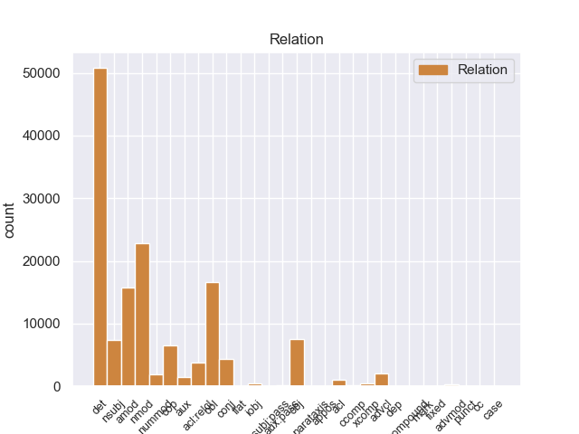
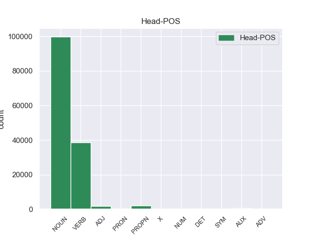

Distribution of features within this leaf



Agreement Rules sorted by frequency.
- When the dependent token is the determiner(det) of the head token, and the dependent token is DET.
1 En _ _ _ _ 0 _ _ _
2 1991 _ _ _ _ 0 _ _ _
3 , _ _ _ _ 0 _ _ _
4 como _ _ _ _ 0 _ _ _
5 ya _ _ _ _ 0 _ _ _
6 está _ _ _ _ 0 _ _ _
7 indicado _ _ _ _ 0 _ _ _
8 en _ _ _ _ 0 _ _ _
9 el _ _ _ _ 0 _ _ _
10 párrafo _ _ _ _ 0 _ _ _
11 anterior _ _ _ _ 0 _ _ _
12 , _ _ _ _ 0 _ _ _
13 se _ _ _ _ 0 _ _ _
14 creó _ _ _ _ 0 _ _ _
15 un _ _ _ _ 0 _ _ _
16 equipo _ _ _ _ 0 _ _ _
17 ad _ _ _ _ 0 _ _ _
18 hoc _ _ _ _ 0 _ _ _
19 para _ _ _ _ 0 _ _ _
20 averiguar _ _ _ _ 0 _ _ _
21 como _ _ _ _ 0 _ _ _
22 se _ _ _ _ 0 _ _ _
23 podía _ _ _ _ 0 _ _ _
24 desarrollar _ _ _ _ 0 _ _ _
25 el _ _ _ _ 0 _ _ _
26 Dialogo _ _ _ _ 0 _ _ _
27 Social _ _ _ _ 0 _ _ _
28 , _ _ _ _ 0 _ _ _
29 este _ _ _ _ 0 _ _ _
30 equipo _ _ _ _ 0 _ _ _
31 estaba _ _ _ _ 0 _ _ _
32 formado _ _ _ _ 0 _ _ _
33 por _ _ _ _ 0 _ _ _
34 representantes _ _ _ _ 0 _ _ _
35 de _ _ _ _ 0 _ _ _
36 todas _ _ _ _ 0 _ _ _
37 las el DET _ Definite=Def|Gender=Fem|Number=Plur|PronType=Art 38 det _ _
38 organizaciones organizacione NOUN _ Gender=Fem|Number=Plur 0 _ _ _
39 relacionadas _ _ _ _ 0 _ _ _
40 con _ _ _ _ 0 _ _ _
41 CES _ _ _ _ 0 _ _ _
42 , _ _ _ _ 0 _ _ _
43 UNICE _ _ _ _ 0 _ _ _
44 y _ _ _ _ 0 _ _ _
45 CEEP _ _ _ _ 0 _ _ _
46 ; _ _ _ _ 0 _ _ _
1 Esta _ _ _ _ 0 _ _ _
2 teoría _ _ _ _ 0 _ _ _
3 se _ _ _ _ 0 _ _ _
4 avenía _ _ _ _ 0 _ _ _
5 bien _ _ _ _ 0 _ _ _
6 con _ _ _ _ 0 _ _ _
7 la _ _ _ _ 0 _ _ _
8 creencia _ _ _ _ 0 _ _ _
9 de _ _ _ _ 0 _ _ _
10 el _ _ _ _ 0 _ _ _
11 Romanticismo _ _ _ _ 0 _ _ _
12 en _ _ _ _ 0 _ _ _
13 un _ _ _ _ 0 _ _ _
14 volkgeist _ _ _ _ 0 _ _ _
15 , _ _ _ _ 0 _ _ _
16 " _ _ _ _ 0 _ _ _
17 genio _ _ _ _ 0 _ _ _
18 o _ _ _ _ 0 _ _ _
19 espíritu _ _ _ _ 0 _ _ _
20 de _ _ _ _ 0 _ _ _
21 el _ _ _ _ 0 _ _ _
22 pueblo _ _ _ _ 0 _ _ _
23 " _ _ _ _ 0 _ _ _
24 , _ _ _ _ 0 _ _ _
25 autor autor NOUN _ Gender=Masc|Number=Sing 0 _ _ _
26 colectivo _ _ _ _ 0 _ _ _
27 y _ _ _ _ 0 _ _ _
28 anónimo _ _ _ _ 0 _ _ _
29 de _ _ _ _ 0 _ _ _
30 una _ _ _ _ 0 _ _ _
31 poesía poesía NOUN _ Gender=Fem|Number=Sing 25 nmod _ _
32 nacional _ _ _ _ 0 _ _ _
33 . _ _ _ _ 0 _ _ _
1 En _ _ _ _ 0 _ _ _
2 1991 _ _ _ _ 0 _ _ _
3 , _ _ _ _ 0 _ _ _
4 como _ _ _ _ 0 _ _ _
5 ya _ _ _ _ 0 _ _ _
6 está _ _ _ _ 0 _ _ _
7 indicado _ _ _ _ 0 _ _ _
8 en _ _ _ _ 0 _ _ _
9 el _ _ _ _ 0 _ _ _
10 párrafo párrafo NOUN _ Gender=Masc|Number=Sing 0 _ _ _
11 anterior anterior ADJ _ Number=Sing 10 amod _ _
12 , _ _ _ _ 0 _ _ _
13 se _ _ _ _ 0 _ _ _
14 creó _ _ _ _ 0 _ _ _
15 un _ _ _ _ 0 _ _ _
16 equipo _ _ _ _ 0 _ _ _
17 ad _ _ _ _ 0 _ _ _
18 hoc _ _ _ _ 0 _ _ _
19 para _ _ _ _ 0 _ _ _
20 averiguar _ _ _ _ 0 _ _ _
21 como _ _ _ _ 0 _ _ _
22 se _ _ _ _ 0 _ _ _
23 podía _ _ _ _ 0 _ _ _
24 desarrollar _ _ _ _ 0 _ _ _
25 el _ _ _ _ 0 _ _ _
26 Dialogo _ _ _ _ 0 _ _ _
27 Social _ _ _ _ 0 _ _ _
28 , _ _ _ _ 0 _ _ _
29 este _ _ _ _ 0 _ _ _
30 equipo _ _ _ _ 0 _ _ _
31 estaba _ _ _ _ 0 _ _ _
32 formado _ _ _ _ 0 _ _ _
33 por _ _ _ _ 0 _ _ _
34 representantes _ _ _ _ 0 _ _ _
35 de _ _ _ _ 0 _ _ _
36 todas _ _ _ _ 0 _ _ _
37 las _ _ _ _ 0 _ _ _
38 organizaciones _ _ _ _ 0 _ _ _
39 relacionadas _ _ _ _ 0 _ _ _
40 con _ _ _ _ 0 _ _ _
41 CES _ _ _ _ 0 _ _ _
42 , _ _ _ _ 0 _ _ _
43 UNICE _ _ _ _ 0 _ _ _
44 y _ _ _ _ 0 _ _ _
45 CEEP _ _ _ _ 0 _ _ _
46 ; _ _ _ _ 0 _ _ _
1 En _ _ _ _ 0 _ _ _
2 1991 _ _ _ _ 0 _ _ _
3 , _ _ _ _ 0 _ _ _
4 como _ _ _ _ 0 _ _ _
5 ya _ _ _ _ 0 _ _ _
6 está _ _ _ _ 0 _ _ _
7 indicado _ _ _ _ 0 _ _ _
8 en _ _ _ _ 0 _ _ _
9 el _ _ _ _ 0 _ _ _
10 párrafo _ _ _ _ 0 _ _ _
11 anterior _ _ _ _ 0 _ _ _
12 , _ _ _ _ 0 _ _ _
13 se _ _ _ _ 0 _ _ _
14 creó crear VERB _ Mood=Ind|Number=Sing|Person=3|Tense=Past|VerbForm=Fin 0 _ _ _
15 un _ _ _ _ 0 _ _ _
16 equipo _ _ _ _ 0 _ _ _
17 ad _ _ _ _ 0 _ _ _
18 hoc _ _ _ _ 0 _ _ _
19 para _ _ _ _ 0 _ _ _
20 averiguar _ _ _ _ 0 _ _ _
21 como _ _ _ _ 0 _ _ _
22 se _ _ _ _ 0 _ _ _
23 podía _ _ _ _ 0 _ _ _
24 desarrollar _ _ _ _ 0 _ _ _
25 el _ _ _ _ 0 _ _ _
26 Dialogo dialogo NOUN _ Gender=Masc|Number=Sing 14 obl _ _
27 Social _ _ _ _ 0 _ _ _
28 , _ _ _ _ 0 _ _ _
29 este _ _ _ _ 0 _ _ _
30 equipo _ _ _ _ 0 _ _ _
31 estaba _ _ _ _ 0 _ _ _
32 formado _ _ _ _ 0 _ _ _
33 por _ _ _ _ 0 _ _ _
34 representantes _ _ _ _ 0 _ _ _
35 de _ _ _ _ 0 _ _ _
36 todas _ _ _ _ 0 _ _ _
37 las _ _ _ _ 0 _ _ _
38 organizaciones _ _ _ _ 0 _ _ _
39 relacionadas _ _ _ _ 0 _ _ _
40 con _ _ _ _ 0 _ _ _
41 CES _ _ _ _ 0 _ _ _
42 , _ _ _ _ 0 _ _ _
43 UNICE _ _ _ _ 0 _ _ _
44 y _ _ _ _ 0 _ _ _
45 CEEP _ _ _ _ 0 _ _ _
46 ; _ _ _ _ 0 _ _ _
1 En _ _ _ _ 0 _ _ _
2 1991 _ _ _ _ 0 _ _ _
3 , _ _ _ _ 0 _ _ _
4 como _ _ _ _ 0 _ _ _
5 ya _ _ _ _ 0 _ _ _
6 está _ _ _ _ 0 _ _ _
7 indicado _ _ _ _ 0 _ _ _
8 en _ _ _ _ 0 _ _ _
9 el _ _ _ _ 0 _ _ _
10 párrafo _ _ _ _ 0 _ _ _
11 anterior _ _ _ _ 0 _ _ _
12 , _ _ _ _ 0 _ _ _
13 se _ _ _ _ 0 _ _ _
14 creó _ _ _ _ 0 _ _ _
15 un _ _ _ _ 0 _ _ _
16 equipo _ _ _ _ 0 _ _ _
17 ad _ _ _ _ 0 _ _ _
18 hoc _ _ _ _ 0 _ _ _
19 para _ _ _ _ 0 _ _ _
20 averiguar _ _ _ _ 0 _ _ _
21 como _ _ _ _ 0 _ _ _
22 se _ _ _ _ 0 _ _ _
23 podía _ _ _ _ 0 _ _ _
24 desarrollar _ _ _ _ 0 _ _ _
25 el _ _ _ _ 0 _ _ _
26 Dialogo _ _ _ _ 0 _ _ _
27 Social _ _ _ _ 0 _ _ _
28 , _ _ _ _ 0 _ _ _
29 este _ _ _ _ 0 _ _ _
30 equipo equipo NOUN _ Gender=Masc|Number=Sing 32 nsubj _ _
31 estaba _ _ _ _ 0 _ _ _
32 formado formado VERB _ Gender=Masc|Number=Sing|VerbForm=Part 0 _ _ _
33 por _ _ _ _ 0 _ _ _
34 representantes _ _ _ _ 0 _ _ _
35 de _ _ _ _ 0 _ _ _
36 todas _ _ _ _ 0 _ _ _
37 las _ _ _ _ 0 _ _ _
38 organizaciones _ _ _ _ 0 _ _ _
39 relacionadas _ _ _ _ 0 _ _ _
40 con _ _ _ _ 0 _ _ _
41 CES _ _ _ _ 0 _ _ _
42 , _ _ _ _ 0 _ _ _
43 UNICE _ _ _ _ 0 _ _ _
44 y _ _ _ _ 0 _ _ _
45 CEEP _ _ _ _ 0 _ _ _
46 ; _ _ _ _ 0 _ _ _
1 En _ _ _ _ 0 _ _ _
2 1991 _ _ _ _ 0 _ _ _
3 , _ _ _ _ 0 _ _ _
4 como _ _ _ _ 0 _ _ _
5 ya _ _ _ _ 0 _ _ _
6 está _ _ _ _ 0 _ _ _
7 indicado _ _ _ _ 0 _ _ _
8 en _ _ _ _ 0 _ _ _
9 el _ _ _ _ 0 _ _ _
10 párrafo _ _ _ _ 0 _ _ _
11 anterior _ _ _ _ 0 _ _ _
12 , _ _ _ _ 0 _ _ _
13 se _ _ _ _ 0 _ _ _
14 creó crear VERB _ Mood=Ind|Number=Sing|Person=3|Tense=Past|VerbForm=Fin 0 _ _ _
15 un _ _ _ _ 0 _ _ _
16 equipo equipo NOUN _ Gender=Masc|Number=Sing 14 obj _ _
17 ad _ _ _ _ 0 _ _ _
18 hoc _ _ _ _ 0 _ _ _
19 para _ _ _ _ 0 _ _ _
20 averiguar _ _ _ _ 0 _ _ _
21 como _ _ _ _ 0 _ _ _
22 se _ _ _ _ 0 _ _ _
23 podía _ _ _ _ 0 _ _ _
24 desarrollar _ _ _ _ 0 _ _ _
25 el _ _ _ _ 0 _ _ _
26 Dialogo _ _ _ _ 0 _ _ _
27 Social _ _ _ _ 0 _ _ _
28 , _ _ _ _ 0 _ _ _
29 este _ _ _ _ 0 _ _ _
30 equipo _ _ _ _ 0 _ _ _
31 estaba _ _ _ _ 0 _ _ _
32 formado _ _ _ _ 0 _ _ _
33 por _ _ _ _ 0 _ _ _
34 representantes _ _ _ _ 0 _ _ _
35 de _ _ _ _ 0 _ _ _
36 todas _ _ _ _ 0 _ _ _
37 las _ _ _ _ 0 _ _ _
38 organizaciones _ _ _ _ 0 _ _ _
39 relacionadas _ _ _ _ 0 _ _ _
40 con _ _ _ _ 0 _ _ _
41 CES _ _ _ _ 0 _ _ _
42 , _ _ _ _ 0 _ _ _
43 UNICE _ _ _ _ 0 _ _ _
44 y _ _ _ _ 0 _ _ _
45 CEEP _ _ _ _ 0 _ _ _
46 ; _ _ _ _ 0 _ _ _
1 En _ _ _ _ 0 _ _ _
2 1991 _ _ _ _ 0 _ _ _
3 , _ _ _ _ 0 _ _ _
4 como _ _ _ _ 0 _ _ _
5 ya _ _ _ _ 0 _ _ _
6 está _ _ _ _ 0 _ _ _
7 indicado _ _ _ _ 0 _ _ _
8 en _ _ _ _ 0 _ _ _
9 el _ _ _ _ 0 _ _ _
10 párrafo _ _ _ _ 0 _ _ _
11 anterior _ _ _ _ 0 _ _ _
12 , _ _ _ _ 0 _ _ _
13 se _ _ _ _ 0 _ _ _
14 creó _ _ _ _ 0 _ _ _
15 un _ _ _ _ 0 _ _ _
16 equipo _ _ _ _ 0 _ _ _
17 ad _ _ _ _ 0 _ _ _
18 hoc _ _ _ _ 0 _ _ _
19 para _ _ _ _ 0 _ _ _
20 averiguar _ _ _ _ 0 _ _ _
21 como _ _ _ _ 0 _ _ _
22 se _ _ _ _ 0 _ _ _
23 podía _ _ _ _ 0 _ _ _
24 desarrollar _ _ _ _ 0 _ _ _
25 el _ _ _ _ 0 _ _ _
26 Dialogo _ _ _ _ 0 _ _ _
27 Social _ _ _ _ 0 _ _ _
28 , _ _ _ _ 0 _ _ _
29 este _ _ _ _ 0 _ _ _
30 equipo _ _ _ _ 0 _ _ _
31 estaba sestab AUX _ Mood=Ind|Number=Sing|Person=3|Tense=Imp|VerbForm=Fin 32 cop _ _
32 formado formado VERB _ Gender=Masc|Number=Sing|VerbForm=Part 0 _ _ _
33 por _ _ _ _ 0 _ _ _
34 representantes _ _ _ _ 0 _ _ _
35 de _ _ _ _ 0 _ _ _
36 todas _ _ _ _ 0 _ _ _
37 las _ _ _ _ 0 _ _ _
38 organizaciones _ _ _ _ 0 _ _ _
39 relacionadas _ _ _ _ 0 _ _ _
40 con _ _ _ _ 0 _ _ _
41 CES _ _ _ _ 0 _ _ _
42 , _ _ _ _ 0 _ _ _
43 UNICE _ _ _ _ 0 _ _ _
44 y _ _ _ _ 0 _ _ _
45 CEEP _ _ _ _ 0 _ _ _
46 ; _ _ _ _ 0 _ _ _
1 En _ _ _ _ 0 _ _ _
2 1991 _ _ _ _ 0 _ _ _
3 , _ _ _ _ 0 _ _ _
4 como _ _ _ _ 0 _ _ _
5 ya _ _ _ _ 0 _ _ _
6 está _ _ _ _ 0 _ _ _
7 indicado indicado VERB _ Gender=Masc|Number=Sing|VerbForm=Part 16 acl:relcl _ _
8 en _ _ _ _ 0 _ _ _
9 el _ _ _ _ 0 _ _ _
10 párrafo _ _ _ _ 0 _ _ _
11 anterior _ _ _ _ 0 _ _ _
12 , _ _ _ _ 0 _ _ _
13 se _ _ _ _ 0 _ _ _
14 creó _ _ _ _ 0 _ _ _
15 un _ _ _ _ 0 _ _ _
16 equipo equipo NOUN _ Gender=Masc|Number=Sing 0 _ _ _
17 ad _ _ _ _ 0 _ _ _
18 hoc _ _ _ _ 0 _ _ _
19 para _ _ _ _ 0 _ _ _
20 averiguar _ _ _ _ 0 _ _ _
21 como _ _ _ _ 0 _ _ _
22 se _ _ _ _ 0 _ _ _
23 podía _ _ _ _ 0 _ _ _
24 desarrollar _ _ _ _ 0 _ _ _
25 el _ _ _ _ 0 _ _ _
26 Dialogo _ _ _ _ 0 _ _ _
27 Social _ _ _ _ 0 _ _ _
28 , _ _ _ _ 0 _ _ _
29 este _ _ _ _ 0 _ _ _
30 equipo _ _ _ _ 0 _ _ _
31 estaba _ _ _ _ 0 _ _ _
32 formado _ _ _ _ 0 _ _ _
33 por _ _ _ _ 0 _ _ _
34 representantes _ _ _ _ 0 _ _ _
35 de _ _ _ _ 0 _ _ _
36 todas _ _ _ _ 0 _ _ _
37 las _ _ _ _ 0 _ _ _
38 organizaciones _ _ _ _ 0 _ _ _
39 relacionadas _ _ _ _ 0 _ _ _
40 con _ _ _ _ 0 _ _ _
41 CES _ _ _ _ 0 _ _ _
42 , _ _ _ _ 0 _ _ _
43 UNICE _ _ _ _ 0 _ _ _
44 y _ _ _ _ 0 _ _ _
45 CEEP _ _ _ _ 0 _ _ _
46 ; _ _ _ _ 0 _ _ _
1 Esta _ _ _ _ 0 _ _ _
2 teoría _ _ _ _ 0 _ _ _
3 se _ _ _ _ 0 _ _ _
4 avenía _ _ _ _ 0 _ _ _
5 bien _ _ _ _ 0 _ _ _
6 con _ _ _ _ 0 _ _ _
7 la _ _ _ _ 0 _ _ _
8 creencia _ _ _ _ 0 _ _ _
9 de _ _ _ _ 0 _ _ _
10 el _ _ _ _ 0 _ _ _
11 Romanticismo _ _ _ _ 0 _ _ _
12 en _ _ _ _ 0 _ _ _
13 un _ _ _ _ 0 _ _ _
14 volkgeist _ _ _ _ 0 _ _ _
15 , _ _ _ _ 0 _ _ _
16 " _ _ _ _ 0 _ _ _
17 genio _ _ _ _ 0 _ _ _
18 o _ _ _ _ 0 _ _ _
19 espíritu espíritu NOUN _ Gender=Masc|Number=Sing 0 _ _ _
20 de _ _ _ _ 0 _ _ _
21 el _ _ _ _ 0 _ _ _
22 pueblo _ _ _ _ 0 _ _ _
23 " _ _ _ _ 0 _ _ _
24 , _ _ _ _ 0 _ _ _
25 autor autor NOUN _ Gender=Masc|Number=Sing 19 conj _ _
26 colectivo _ _ _ _ 0 _ _ _
27 y _ _ _ _ 0 _ _ _
28 anónimo _ _ _ _ 0 _ _ _
29 de _ _ _ _ 0 _ _ _
30 una _ _ _ _ 0 _ _ _
31 poesía _ _ _ _ 0 _ _ _
32 nacional _ _ _ _ 0 _ _ _
33 . _ _ _ _ 0 _ _ _
1 " _ _ _ _ 0 _ _ _
2 Tenemos _ _ _ _ 0 _ _ _
3 todo _ _ _ _ 0 _ _ _
4 listo _ _ _ _ 0 _ _ _
5 , _ _ _ _ 0 _ _ _
6 la _ _ _ _ 0 _ _ _
7 venta _ _ _ _ 0 _ _ _
8 de _ _ _ _ 0 _ _ _
9 boletos _ _ _ _ 0 _ _ _
10 será _ _ _ _ 0 _ _ _
11 a _ _ _ _ 0 _ _ _
12 partir _ _ _ _ 0 _ _ _
13 de _ _ _ _ 0 _ _ _
14 mañana _ _ _ _ 0 _ _ _
15 de _ _ _ _ 0 _ _ _
16 8 _ _ _ _ 0 _ _ _
17 am _ _ _ _ 0 _ _ _
18 a _ _ _ _ 0 _ _ _
19 3 _ _ _ _ 0 _ _ _
20 pm _ _ _ _ 0 _ _ _
21 , _ _ _ _ 0 _ _ _
22 la _ _ _ _ 0 _ _ _
23 afición _ _ _ _ 0 _ _ _
24 de _ _ _ _ 0 _ _ _
25 el _ _ _ _ 0 _ _ _
26 Real _ _ _ _ 0 _ _ _
27 España _ _ _ _ 0 _ _ _
28 podrá _ _ _ _ 0 _ _ _
29 comprar _ _ _ _ 0 _ _ _
30 en _ _ _ _ 0 _ _ _
31 el _ _ _ _ 0 _ _ _
32 Banco _ _ _ _ 0 _ _ _
33 Continental _ _ _ _ 0 _ _ _
34 , _ _ _ _ 0 _ _ _
35 frente _ _ _ _ 0 _ _ _
36 a _ _ _ _ 0 _ _ _
37 el _ _ _ _ 0 _ _ _
38 estadio _ _ _ _ 0 _ _ _
39 Morazán _ _ _ _ 0 _ _ _
40 , _ _ _ _ 0 _ _ _
41 se _ _ _ _ 0 _ _ _
42 han _ _ _ _ 0 _ _ _
43 puesto _ _ _ _ 0 _ _ _
44 a _ _ _ _ 0 _ _ _
45 la _ _ _ _ 0 _ _ _
46 venta _ _ _ _ 0 _ _ _
47 800 _ _ _ _ 0 _ _ _
48 boletos _ _ _ _ 0 _ _ _
49 , _ _ _ _ 0 _ _ _
50 500 _ _ _ _ 0 _ _ _
51 en _ _ _ _ 0 _ _ _
52 sol _ _ _ _ 0 _ _ _
53 y _ _ _ _ 0 _ _ _
54 300 _ _ _ _ 0 _ _ _
55 en _ _ _ _ 0 _ _ _
56 preferencia _ _ _ _ 0 _ _ _
57 , _ _ _ _ 0 _ _ _
58 la _ _ _ _ 0 _ _ _
59 boletería _ _ _ _ 0 _ _ _
60 de _ _ _ _ 0 _ _ _
61 el _ _ _ _ 0 _ _ _
62 España _ _ _ _ 0 _ _ _
63 está _ _ _ _ 0 _ _ _
64 ya _ _ _ _ 0 _ _ _
65 identificada identificada VERB _ Mood=Ind|Number=Sing|Person=3|Tense=Pres|VerbForm=Fin 0 _ _ _
66 con _ _ _ _ 0 _ _ _
67 el _ _ _ _ 0 _ _ _
68 escudo _ _ _ _ 0 _ _ _
69 de _ _ _ _ 0 _ _ _
70 el _ _ _ _ 0 _ _ _
71 equipo _ _ _ _ 0 _ _ _
72 y _ _ _ _ 0 _ _ _
73 con _ _ _ _ 0 _ _ _
74 el _ _ _ _ 0 _ _ _
75 color _ _ _ _ 0 _ _ _
76 amarillo _ _ _ _ 0 _ _ _
77 " _ _ _ _ 0 _ _ _
78 , _ _ _ _ 0 _ _ _
79 comentó comentó VERB _ Mood=Ind|Number=Sing|Person=3|Tense=Past|VerbForm=Fin 65 advcl _ _
80 Rolin _ _ _ _ 0 _ _ _
81 . _ _ _ _ 0 _ _ _
1 Esta _ _ _ _ 0 _ _ _
2 teoría _ _ _ _ 0 _ _ _
3 se _ _ _ _ 0 _ _ _
4 avenía _ _ _ _ 0 _ _ _
5 bien _ _ _ _ 0 _ _ _
6 con _ _ _ _ 0 _ _ _
7 la _ _ _ _ 0 _ _ _
8 creencia creencia NOUN _ Gender=Fem|Number=Sing 0 _ _ _
9 de _ _ _ _ 0 _ _ _
10 el _ _ _ _ 0 _ _ _
11 Romanticismo romanticismo PROPN _ Gender=Masc|Number=Sing 8 nmod _ _
12 en _ _ _ _ 0 _ _ _
13 un _ _ _ _ 0 _ _ _
14 volkgeist _ _ _ _ 0 _ _ _
15 , _ _ _ _ 0 _ _ _
16 " _ _ _ _ 0 _ _ _
17 genio _ _ _ _ 0 _ _ _
18 o _ _ _ _ 0 _ _ _
19 espíritu _ _ _ _ 0 _ _ _
20 de _ _ _ _ 0 _ _ _
21 el _ _ _ _ 0 _ _ _
22 pueblo _ _ _ _ 0 _ _ _
23 " _ _ _ _ 0 _ _ _
24 , _ _ _ _ 0 _ _ _
25 autor _ _ _ _ 0 _ _ _
26 colectivo _ _ _ _ 0 _ _ _
27 y _ _ _ _ 0 _ _ _
28 anónimo _ _ _ _ 0 _ _ _
29 de _ _ _ _ 0 _ _ _
30 una _ _ _ _ 0 _ _ _
31 poesía _ _ _ _ 0 _ _ _
32 nacional _ _ _ _ 0 _ _ _
33 . _ _ _ _ 0 _ _ _
1 Joramun _ _ _ _ 0 _ _ _
2 se _ _ _ _ 0 _ _ _
3 supone _ _ _ _ 0 _ _ _
4 que _ _ _ _ 0 _ _ _
5 era _ _ _ _ 0 _ _ _
6 un _ _ _ _ 0 _ _ _
7 legendario legendario NOUN _ Gender=Masc|Number=Sing 8 amod _ _
8 Rey rey NOUN _ Gender=Masc|Number=Sing 0 _ _ _
9 - _ _ _ _ 0 _ _ _
10 Más _ _ _ _ 0 _ _ _
11 - _ _ _ _ 0 _ _ _
12 Allá _ _ _ _ 0 _ _ _
13 - _ _ _ _ 0 _ _ _
14 de _ _ _ _ 0 _ _ _
15 el _ _ _ _ 0 _ _ _
16 - _ _ _ _ 0 _ _ _
17 Muro _ _ _ _ 0 _ _ _
18 , _ _ _ _ 0 _ _ _
19 a _ _ _ _ 0 _ _ _
20 el _ _ _ _ 0 _ _ _
21 norte _ _ _ _ 0 _ _ _
22 de _ _ _ _ 0 _ _ _
23 los _ _ _ _ 0 _ _ _
24 Siete _ _ _ _ 0 _ _ _
25 Reinos _ _ _ _ 0 _ _ _
26 . _ _ _ _ 0 _ _ _
1 Jazmin _ _ _ _ 0 _ _ _
2 es _ _ _ _ 0 _ _ _
3 todo _ _ _ _ 0 _ _ _
4 lo _ _ _ _ 0 _ _ _
5 contrario contrario ADJ _ Gender=Masc|Number=Sing 0 _ _ _
6 , _ _ _ _ 0 _ _ _
7 es _ _ _ _ 0 _ _ _
8 tímida _ _ _ _ 0 _ _ _
9 y _ _ _ _ 0 _ _ _
10 callada _ _ _ _ 0 _ _ _
11 , _ _ _ _ 0 _ _ _
12 pero _ _ _ _ 0 _ _ _
13 siempre _ _ _ _ 0 _ _ _
14 es _ _ _ _ 0 _ _ _
15 arrastrada arrastrada VERB _ Gender=Fem|Number=Sing|VerbForm=Part 5 conj _ _
16 por _ _ _ _ 0 _ _ _
17 las _ _ _ _ 0 _ _ _
18 locuras _ _ _ _ 0 _ _ _
19 y _ _ _ _ 0 _ _ _
20 travesuras _ _ _ _ 0 _ _ _
21 que _ _ _ _ 0 _ _ _
22 inventa _ _ _ _ 0 _ _ _
23 Alma _ _ _ _ 0 _ _ _
24 . _ _ _ _ 0 _ _ _
1 " _ _ _ _ 0 _ _ _
2 Tenemos _ _ _ _ 0 _ _ _
3 todo _ _ _ _ 0 _ _ _
4 listo _ _ _ _ 0 _ _ _
5 , _ _ _ _ 0 _ _ _
6 la _ _ _ _ 0 _ _ _
7 venta _ _ _ _ 0 _ _ _
8 de _ _ _ _ 0 _ _ _
9 boletos _ _ _ _ 0 _ _ _
10 será _ _ _ _ 0 _ _ _
11 a _ _ _ _ 0 _ _ _
12 partir _ _ _ _ 0 _ _ _
13 de _ _ _ _ 0 _ _ _
14 mañana _ _ _ _ 0 _ _ _
15 de _ _ _ _ 0 _ _ _
16 8 _ _ _ _ 0 _ _ _
17 am _ _ _ _ 0 _ _ _
18 a _ _ _ _ 0 _ _ _
19 3 _ _ _ _ 0 _ _ _
20 pm _ _ _ _ 0 _ _ _
21 , _ _ _ _ 0 _ _ _
22 la _ _ _ _ 0 _ _ _
23 afición _ _ _ _ 0 _ _ _
24 de _ _ _ _ 0 _ _ _
25 el _ _ _ _ 0 _ _ _
26 Real _ _ _ _ 0 _ _ _
27 España _ _ _ _ 0 _ _ _
28 podrá _ _ _ _ 0 _ _ _
29 comprar _ _ _ _ 0 _ _ _
30 en _ _ _ _ 0 _ _ _
31 el _ _ _ _ 0 _ _ _
32 Banco _ _ _ _ 0 _ _ _
33 Continental _ _ _ _ 0 _ _ _
34 , _ _ _ _ 0 _ _ _
35 frente _ _ _ _ 0 _ _ _
36 a _ _ _ _ 0 _ _ _
37 el _ _ _ _ 0 _ _ _
38 estadio _ _ _ _ 0 _ _ _
39 Morazán _ _ _ _ 0 _ _ _
40 , _ _ _ _ 0 _ _ _
41 se _ _ _ _ 0 _ _ _
42 han _ _ _ _ 0 _ _ _
43 puesto _ _ _ _ 0 _ _ _
44 a _ _ _ _ 0 _ _ _
45 la _ _ _ _ 0 _ _ _
46 venta _ _ _ _ 0 _ _ _
47 800 800 NUM _ Number=Plur|NumType=Card 48 nummod _ _
48 boletos boleto NOUN _ Gender=Fem|Number=Plur 0 _ _ _
49 , _ _ _ _ 0 _ _ _
50 500 _ _ _ _ 0 _ _ _
51 en _ _ _ _ 0 _ _ _
52 sol _ _ _ _ 0 _ _ _
53 y _ _ _ _ 0 _ _ _
54 300 _ _ _ _ 0 _ _ _
55 en _ _ _ _ 0 _ _ _
56 preferencia _ _ _ _ 0 _ _ _
57 , _ _ _ _ 0 _ _ _
58 la _ _ _ _ 0 _ _ _
59 boletería _ _ _ _ 0 _ _ _
60 de _ _ _ _ 0 _ _ _
61 el _ _ _ _ 0 _ _ _
62 España _ _ _ _ 0 _ _ _
63 está _ _ _ _ 0 _ _ _
64 ya _ _ _ _ 0 _ _ _
65 identificada _ _ _ _ 0 _ _ _
66 con _ _ _ _ 0 _ _ _
67 el _ _ _ _ 0 _ _ _
68 escudo _ _ _ _ 0 _ _ _
69 de _ _ _ _ 0 _ _ _
70 el _ _ _ _ 0 _ _ _
71 equipo _ _ _ _ 0 _ _ _
72 y _ _ _ _ 0 _ _ _
73 con _ _ _ _ 0 _ _ _
74 el _ _ _ _ 0 _ _ _
75 color _ _ _ _ 0 _ _ _
76 amarillo _ _ _ _ 0 _ _ _
77 " _ _ _ _ 0 _ _ _
78 , _ _ _ _ 0 _ _ _
79 comentó _ _ _ _ 0 _ _ _
80 Rolin _ _ _ _ 0 _ _ _
81 . _ _ _ _ 0 _ _ _
1 " _ _ _ _ 0 _ _ _
2 Tenemos _ _ _ _ 0 _ _ _
3 todo _ _ _ _ 0 _ _ _
4 listo _ _ _ _ 0 _ _ _
5 , _ _ _ _ 0 _ _ _
6 la _ _ _ _ 0 _ _ _
7 venta _ _ _ _ 0 _ _ _
8 de _ _ _ _ 0 _ _ _
9 boletos _ _ _ _ 0 _ _ _
10 será _ _ _ _ 0 _ _ _
11 a _ _ _ _ 0 _ _ _
12 partir _ _ _ _ 0 _ _ _
13 de _ _ _ _ 0 _ _ _
14 mañana _ _ _ _ 0 _ _ _
15 de _ _ _ _ 0 _ _ _
16 8 _ _ _ _ 0 _ _ _
17 am _ _ _ _ 0 _ _ _
18 a _ _ _ _ 0 _ _ _
19 3 _ _ _ _ 0 _ _ _
20 pm _ _ _ _ 0 _ _ _
21 , _ _ _ _ 0 _ _ _
22 la _ _ _ _ 0 _ _ _
23 afición _ _ _ _ 0 _ _ _
24 de _ _ _ _ 0 _ _ _
25 el _ _ _ _ 0 _ _ _
26 Real _ _ _ _ 0 _ _ _
27 España _ _ _ _ 0 _ _ _
28 podrá _ _ _ _ 0 _ _ _
29 comprar _ _ _ _ 0 _ _ _
30 en _ _ _ _ 0 _ _ _
31 el _ _ _ _ 0 _ _ _
32 Banco _ _ _ _ 0 _ _ _
33 Continental _ _ _ _ 0 _ _ _
34 , _ _ _ _ 0 _ _ _
35 frente _ _ _ _ 0 _ _ _
36 a _ _ _ _ 0 _ _ _
37 el _ _ _ _ 0 _ _ _
38 estadio _ _ _ _ 0 _ _ _
39 Morazán _ _ _ _ 0 _ _ _
40 , _ _ _ _ 0 _ _ _
41 se _ _ _ _ 0 _ _ _
42 han _ _ _ _ 0 _ _ _
43 puesto _ _ _ _ 0 _ _ _
44 a _ _ _ _ 0 _ _ _
45 la _ _ _ _ 0 _ _ _
46 venta _ _ _ _ 0 _ _ _
47 800 _ _ _ _ 0 _ _ _
48 boletos _ _ _ _ 0 _ _ _
49 , _ _ _ _ 0 _ _ _
50 500 _ _ _ _ 0 _ _ _
51 en _ _ _ _ 0 _ _ _
52 sol _ _ _ _ 0 _ _ _
53 y _ _ _ _ 0 _ _ _
54 300 _ _ _ _ 0 _ _ _
55 en _ _ _ _ 0 _ _ _
56 preferencia _ _ _ _ 0 _ _ _
57 , _ _ _ _ 0 _ _ _
58 la _ _ _ _ 0 _ _ _
59 boletería _ _ _ _ 0 _ _ _
60 de _ _ _ _ 0 _ _ _
61 el _ _ _ _ 0 _ _ _
62 España _ _ _ _ 0 _ _ _
63 está esar AUX _ Mood=Ind|Number=Sing|Person=3|Tense=Pres|VerbForm=Fin 65 aux _ _
64 ya _ _ _ _ 0 _ _ _
65 identificada identificada VERB _ Mood=Ind|Number=Sing|Person=3|Tense=Pres|VerbForm=Fin 0 _ _ _
66 con _ _ _ _ 0 _ _ _
67 el _ _ _ _ 0 _ _ _
68 escudo _ _ _ _ 0 _ _ _
69 de _ _ _ _ 0 _ _ _
70 el _ _ _ _ 0 _ _ _
71 equipo _ _ _ _ 0 _ _ _
72 y _ _ _ _ 0 _ _ _
73 con _ _ _ _ 0 _ _ _
74 el _ _ _ _ 0 _ _ _
75 color _ _ _ _ 0 _ _ _
76 amarillo _ _ _ _ 0 _ _ _
77 " _ _ _ _ 0 _ _ _
78 , _ _ _ _ 0 _ _ _
79 comentó _ _ _ _ 0 _ _ _
80 Rolin _ _ _ _ 0 _ _ _
81 . _ _ _ _ 0 _ _ _
1 " _ _ _ _ 0 _ _ _
2 Tenemos _ _ _ _ 0 _ _ _
3 todo _ _ _ _ 0 _ _ _
4 listo _ _ _ _ 0 _ _ _
5 , _ _ _ _ 0 _ _ _
6 la _ _ _ _ 0 _ _ _
7 venta venta NOUN _ Gender=Fem|Number=Sing 0 _ _ _
8 de _ _ _ _ 0 _ _ _
9 boletos _ _ _ _ 0 _ _ _
10 será será VERB _ Mood=Ind|Number=Sing|Person=3|Tense=Pres|VerbForm=Fin 7 cop _ _
11 a _ _ _ _ 0 _ _ _
12 partir _ _ _ _ 0 _ _ _
13 de _ _ _ _ 0 _ _ _
14 mañana _ _ _ _ 0 _ _ _
15 de _ _ _ _ 0 _ _ _
16 8 _ _ _ _ 0 _ _ _
17 am _ _ _ _ 0 _ _ _
18 a _ _ _ _ 0 _ _ _
19 3 _ _ _ _ 0 _ _ _
20 pm _ _ _ _ 0 _ _ _
21 , _ _ _ _ 0 _ _ _
22 la _ _ _ _ 0 _ _ _
23 afición _ _ _ _ 0 _ _ _
24 de _ _ _ _ 0 _ _ _
25 el _ _ _ _ 0 _ _ _
26 Real _ _ _ _ 0 _ _ _
27 España _ _ _ _ 0 _ _ _
28 podrá _ _ _ _ 0 _ _ _
29 comprar _ _ _ _ 0 _ _ _
30 en _ _ _ _ 0 _ _ _
31 el _ _ _ _ 0 _ _ _
32 Banco _ _ _ _ 0 _ _ _
33 Continental _ _ _ _ 0 _ _ _
34 , _ _ _ _ 0 _ _ _
35 frente _ _ _ _ 0 _ _ _
36 a _ _ _ _ 0 _ _ _
37 el _ _ _ _ 0 _ _ _
38 estadio _ _ _ _ 0 _ _ _
39 Morazán _ _ _ _ 0 _ _ _
40 , _ _ _ _ 0 _ _ _
41 se _ _ _ _ 0 _ _ _
42 han _ _ _ _ 0 _ _ _
43 puesto _ _ _ _ 0 _ _ _
44 a _ _ _ _ 0 _ _ _
45 la _ _ _ _ 0 _ _ _
46 venta _ _ _ _ 0 _ _ _
47 800 _ _ _ _ 0 _ _ _
48 boletos _ _ _ _ 0 _ _ _
49 , _ _ _ _ 0 _ _ _
50 500 _ _ _ _ 0 _ _ _
51 en _ _ _ _ 0 _ _ _
52 sol _ _ _ _ 0 _ _ _
53 y _ _ _ _ 0 _ _ _
54 300 _ _ _ _ 0 _ _ _
55 en _ _ _ _ 0 _ _ _
56 preferencia _ _ _ _ 0 _ _ _
57 , _ _ _ _ 0 _ _ _
58 la _ _ _ _ 0 _ _ _
59 boletería _ _ _ _ 0 _ _ _
60 de _ _ _ _ 0 _ _ _
61 el _ _ _ _ 0 _ _ _
62 España _ _ _ _ 0 _ _ _
63 está _ _ _ _ 0 _ _ _
64 ya _ _ _ _ 0 _ _ _
65 identificada _ _ _ _ 0 _ _ _
66 con _ _ _ _ 0 _ _ _
67 el _ _ _ _ 0 _ _ _
68 escudo _ _ _ _ 0 _ _ _
69 de _ _ _ _ 0 _ _ _
70 el _ _ _ _ 0 _ _ _
71 equipo _ _ _ _ 0 _ _ _
72 y _ _ _ _ 0 _ _ _
73 con _ _ _ _ 0 _ _ _
74 el _ _ _ _ 0 _ _ _
75 color _ _ _ _ 0 _ _ _
76 amarillo _ _ _ _ 0 _ _ _
77 " _ _ _ _ 0 _ _ _
78 , _ _ _ _ 0 _ _ _
79 comentó _ _ _ _ 0 _ _ _
80 Rolin _ _ _ _ 0 _ _ _
81 . _ _ _ _ 0 _ _ _
1 Saint _ _ _ _ 0 _ _ _
2 - _ _ _ _ 0 _ _ _
3 Hippolyte _ _ _ _ 0 _ _ _
4 ( _ _ _ _ 0 _ _ _
5 en _ _ _ _ 0 _ _ _
6 occitano _ _ _ _ 0 _ _ _
7 Sent _ _ _ _ 0 _ _ _
8 Ipòli _ _ _ _ 0 _ _ _
9 ) _ _ _ _ 0 _ _ _
10 es _ _ _ _ 0 _ _ _
11 una _ _ _ _ 0 _ _ _
12 población población NOUN _ Gender=Fem|Number=Sing 0 _ _ _
13 y _ _ _ _ 0 _ _ _
14 comuna _ _ _ _ 0 _ _ _
15 francesa _ _ _ _ 0 _ _ _
16 , _ _ _ _ 0 _ _ _
17 situada situada VERB _ Gender=Fem|Number=Sing|VerbForm=Part 12 acl _ _
18 en _ _ _ _ 0 _ _ _
19 la _ _ _ _ 0 _ _ _
20 región _ _ _ _ 0 _ _ _
21 de _ _ _ _ 0 _ _ _
22 Aquitania _ _ _ _ 0 _ _ _
23 , _ _ _ _ 0 _ _ _
24 departamento _ _ _ _ 0 _ _ _
25 de _ _ _ _ 0 _ _ _
26 Gironda _ _ _ _ 0 _ _ _
27 , _ _ _ _ 0 _ _ _
28 en _ _ _ _ 0 _ _ _
29 el _ _ _ _ 0 _ _ _
30 distrito _ _ _ _ 0 _ _ _
31 de _ _ _ _ 0 _ _ _
32 Libourne _ _ _ _ 0 _ _ _
33 y _ _ _ _ 0 _ _ _
34 cantón _ _ _ _ 0 _ _ _
35 de _ _ _ _ 0 _ _ _
36 Castillon _ _ _ _ 0 _ _ _
37 - _ _ _ _ 0 _ _ _
38 la _ _ _ _ 0 _ _ _
39 - _ _ _ _ 0 _ _ _
40 Bataille _ _ _ _ 0 _ _ _
41 . _ _ _ _ 0 _ _ _
1 Jazmin _ _ _ _ 0 _ _ _
2 es _ _ _ _ 0 _ _ _
3 todo _ _ _ _ 0 _ _ _
4 lo _ _ _ _ 0 _ _ _
5 contrario _ _ _ _ 0 _ _ _
6 , _ _ _ _ 0 _ _ _
7 es _ _ _ _ 0 _ _ _
8 tímida tímida ADJ _ Gender=Masc|Number=Sing 0 _ _ _
9 y _ _ _ _ 0 _ _ _
10 callada callada ADJ _ Gender=Masc|Number=Sing 8 conj _ _
11 , _ _ _ _ 0 _ _ _
12 pero _ _ _ _ 0 _ _ _
13 siempre _ _ _ _ 0 _ _ _
14 es _ _ _ _ 0 _ _ _
15 arrastrada _ _ _ _ 0 _ _ _
16 por _ _ _ _ 0 _ _ _
17 las _ _ _ _ 0 _ _ _
18 locuras _ _ _ _ 0 _ _ _
19 y _ _ _ _ 0 _ _ _
20 travesuras _ _ _ _ 0 _ _ _
21 que _ _ _ _ 0 _ _ _
22 inventa _ _ _ _ 0 _ _ _
23 Alma _ _ _ _ 0 _ _ _
24 . _ _ _ _ 0 _ _ _
1 Una _ _ _ _ 0 _ _ _
2 vez _ _ _ _ 0 _ _ _
3 que _ _ _ _ 0 _ _ _
4 el _ _ _ _ 0 _ _ _
5 Hijo _ _ _ _ 0 _ _ _
6 de _ _ _ _ 0 _ _ _
7 Krypton _ _ _ _ 0 _ _ _
8 suelta suelta VERB _ Mood=Ind|Number=Sing|Person=3|Tense=Pres|VerbForm=Fin 13 xcomp _ _
9 el _ _ _ _ 0 _ _ _
10 misil _ _ _ _ 0 _ _ _
11 , _ _ _ _ 0 _ _ _
12 este _ _ _ _ 0 _ _ _
13 intenta intentir VERB _ Mood=Ind|Number=Sing|Person=3|Tense=Pres|VerbForm=Fin 0 _ _ _
14 huir _ _ _ _ 0 _ _ _
15 de _ _ _ _ 0 _ _ _
16 el _ _ _ _ 0 _ _ _
17 lugar _ _ _ _ 0 _ _ _
18 pero _ _ _ _ 0 _ _ _
19 es _ _ _ _ 0 _ _ _
20 atrapado _ _ _ _ 0 _ _ _
21 en _ _ _ _ 0 _ _ _
22 la _ _ _ _ 0 _ _ _
23 explosión _ _ _ _ 0 _ _ _
24 . _ _ _ _ 0 _ _ _
1 De _ _ _ _ 0 _ _ _
2 la _ _ _ _ 0 _ _ _
3 Vega _ _ _ _ 0 _ _ _
4 ha _ _ _ _ 0 _ _ _
5 pedido _ _ _ _ 0 _ _ _
6 respetar _ _ _ _ 0 _ _ _
7 los _ _ _ _ 0 _ _ _
8 tiempos _ _ _ _ 0 _ _ _
9 de _ _ _ _ 0 _ _ _
10 los _ _ _ _ 0 _ _ _
11 procesos _ _ _ _ 0 _ _ _
12 y _ _ _ _ 0 _ _ _
13 de _ _ _ _ 0 _ _ _
14 la _ _ _ _ 0 _ _ _
15 misma _ _ _ _ 0 _ _ _
16 manera _ _ _ _ 0 _ _ _
17 que _ _ _ _ 0 _ _ _
18 no _ _ _ _ 0 _ _ _
19 ha _ _ _ _ 0 _ _ _
20 querido _ _ _ _ 0 _ _ _
21 entrar _ _ _ _ 0 _ _ _
22 en _ _ _ _ 0 _ _ _
23 la _ _ _ _ 0 _ _ _
24 salida _ _ _ _ 0 _ _ _
25 de _ _ _ _ 0 _ _ _
26 Corbacho _ _ _ _ 0 _ _ _
27 , _ _ _ _ 0 _ _ _
28 tampoco _ _ _ _ 0 _ _ _
29 lo él PRON _ Case=Acc|Gender=Masc|Number=Sing|Person=3|PrepCase=Npr|PronType=Prs 31 iobj _ _
30 ha _ _ _ _ 0 _ _ _
31 hecho hecho VERB _ Gender=Masc|Number=Sing|Tense=Past|VerbForm=Part 0 _ _ _
32 la _ _ _ _ 0 _ _ _
33 posible _ _ _ _ 0 _ _ _
34 salida _ _ _ _ 0 _ _ _
35 de _ _ _ _ 0 _ _ _
36 Trinidad _ _ _ _ 0 _ _ _
37 Jiménez _ _ _ _ 0 _ _ _
38 , _ _ _ _ 0 _ _ _
39 que _ _ _ _ 0 _ _ _
40 le _ _ _ _ 0 _ _ _
41 acompañaba _ _ _ _ 0 _ _ _
42 en _ _ _ _ 0 _ _ _
43 la _ _ _ _ 0 _ _ _
44 sala _ _ _ _ 0 _ _ _
45 de _ _ _ _ 0 _ _ _
46 prensa _ _ _ _ 0 _ _ _
47 . _ _ _ _ 0 _ _ _
1 Por _ _ _ _ 0 _ _ _
2 otro _ _ _ _ 0 _ _ _
3 lado _ _ _ _ 0 _ _ _
4 , _ _ _ _ 0 _ _ _
5 se _ _ _ _ 0 _ _ _
6 incorporó _ _ _ _ 0 _ _ _
7 a _ _ _ _ 0 _ _ _
8 el _ _ _ _ 0 _ _ _
9 economista _ _ _ _ 0 _ _ _
10 Domingo _ _ _ _ 0 _ _ _
11 Cavallo _ _ _ _ 0 _ _ _
12 en _ _ _ _ 0 _ _ _
13 el _ _ _ _ 0 _ _ _
14 tercer tercer NOUN _ Gender=Masc|Number=Sing 15 nummod _ _
15 lugar lugar NOUN _ Gender=Masc|Number=Sing 0 _ _ _
16 de _ _ _ _ 0 _ _ _
17 la _ _ _ _ 0 _ _ _
18 nómina _ _ _ _ 0 _ _ _
19 de _ _ _ _ 0 _ _ _
20 candidatos _ _ _ _ 0 _ _ _
21 a _ _ _ _ 0 _ _ _
22 diputados _ _ _ _ 0 _ _ _
23 nacionales _ _ _ _ 0 _ _ _
24 . _ _ _ _ 0 _ _ _
1 La _ _ _ _ 0 _ _ _
2 primera _ _ _ _ 0 _ _ _
3 vez _ _ _ _ 0 _ _ _
4 , _ _ _ _ 0 _ _ _
5 tenía _ _ _ _ 0 _ _ _
6 un _ _ _ _ 0 _ _ _
7 presupuesto _ _ _ _ 0 _ _ _
8 de _ _ _ _ 0 _ _ _
9 700 _ _ _ _ 0 _ _ _
10 € _ _ _ _ 0 _ _ _
11 en _ _ _ _ 0 _ _ _
12 el _ _ _ _ 0 _ _ _
13 servicio _ _ _ _ 0 _ _ _
14 oficial _ _ _ _ 0 _ _ _
15 ( _ _ _ _ 0 _ _ _
16 te _ _ _ _ 0 _ _ _
17 lo él PRON _ Case=Acc|Gender=Masc|Number=Sing|Person=3|PrepCase=Npr|PronType=Prs 18 obj _ _
18 cambio cambio VERB _ Gender=Masc|Number=Sing 0 _ _ _
19 todo _ _ _ _ 0 _ _ _
20 y _ _ _ _ 0 _ _ _
21 soluciono _ _ _ _ 0 _ _ _
22 el _ _ _ _ 0 _ _ _
23 problema _ _ _ _ 0 _ _ _
24 ) _ _ _ _ 0 _ _ _
25 , _ _ _ _ 0 _ _ _
26 y _ _ _ _ 0 _ _ _
27 en _ _ _ _ 0 _ _ _
28 Pinauto _ _ _ _ 0 _ _ _
29 me _ _ _ _ 0 _ _ _
30 lo _ _ _ _ 0 _ _ _
31 solucionaron _ _ _ _ 0 _ _ _
32 por _ _ _ _ 0 _ _ _
33 unos _ _ _ _ 0 _ _ _
34 200 _ _ _ _ 0 _ _ _
35 € _ _ _ _ 0 _ _ _
36 , _ _ _ _ 0 _ _ _
37 cambiando _ _ _ _ 0 _ _ _
38 sólo _ _ _ _ 0 _ _ _
39 lo _ _ _ _ 0 _ _ _
40 necesario _ _ _ _ 0 _ _ _
41 . _ _ _ _ 0 _ _ _
1 " _ _ _ _ 0 _ _ _
2 Tenemos _ _ _ _ 0 _ _ _
3 todo _ _ _ _ 0 _ _ _
4 listo _ _ _ _ 0 _ _ _
5 , _ _ _ _ 0 _ _ _
6 la _ _ _ _ 0 _ _ _
7 venta _ _ _ _ 0 _ _ _
8 de _ _ _ _ 0 _ _ _
9 boletos _ _ _ _ 0 _ _ _
10 será _ _ _ _ 0 _ _ _
11 a _ _ _ _ 0 _ _ _
12 partir _ _ _ _ 0 _ _ _
13 de _ _ _ _ 0 _ _ _
14 mañana _ _ _ _ 0 _ _ _
15 de _ _ _ _ 0 _ _ _
16 8 _ _ _ _ 0 _ _ _
17 am _ _ _ _ 0 _ _ _
18 a _ _ _ _ 0 _ _ _
19 3 _ _ _ _ 0 _ _ _
20 pm _ _ _ _ 0 _ _ _
21 , _ _ _ _ 0 _ _ _
22 la _ _ _ _ 0 _ _ _
23 afición _ _ _ _ 0 _ _ _
24 de _ _ _ _ 0 _ _ _
25 el _ _ _ _ 0 _ _ _
26 Real _ _ _ _ 0 _ _ _
27 España _ _ _ _ 0 _ _ _
28 podrá _ _ _ _ 0 _ _ _
29 comprar _ _ _ _ 0 _ _ _
30 en _ _ _ _ 0 _ _ _
31 el _ _ _ _ 0 _ _ _
32 Banco _ _ _ _ 0 _ _ _
33 Continental _ _ _ _ 0 _ _ _
34 , _ _ _ _ 0 _ _ _
35 frente _ _ _ _ 0 _ _ _
36 a _ _ _ _ 0 _ _ _
37 el _ _ _ _ 0 _ _ _
38 estadio _ _ _ _ 0 _ _ _
39 Morazán _ _ _ _ 0 _ _ _
40 , _ _ _ _ 0 _ _ _
41 se _ _ _ _ 0 _ _ _
42 han _ _ _ _ 0 _ _ _
43 puesto _ _ _ _ 0 _ _ _
44 a _ _ _ _ 0 _ _ _
45 la _ _ _ _ 0 _ _ _
46 venta _ _ _ _ 0 _ _ _
47 800 _ _ _ _ 0 _ _ _
48 boletos _ _ _ _ 0 _ _ _
49 , _ _ _ _ 0 _ _ _
50 500 _ _ _ _ 0 _ _ _
51 en _ _ _ _ 0 _ _ _
52 sol _ _ _ _ 0 _ _ _
53 y _ _ _ _ 0 _ _ _
54 300 _ _ _ _ 0 _ _ _
55 en _ _ _ _ 0 _ _ _
56 preferencia _ _ _ _ 0 _ _ _
57 , _ _ _ _ 0 _ _ _
58 la _ _ _ _ 0 _ _ _
59 boletería _ _ _ _ 0 _ _ _
60 de _ _ _ _ 0 _ _ _
61 el _ _ _ _ 0 _ _ _
62 España españa PROPN _ Gender=Masc|Number=Sing 65 obl _ _
63 está _ _ _ _ 0 _ _ _
64 ya _ _ _ _ 0 _ _ _
65 identificada identificada VERB _ Mood=Ind|Number=Sing|Person=3|Tense=Pres|VerbForm=Fin 0 _ _ _
66 con _ _ _ _ 0 _ _ _
67 el _ _ _ _ 0 _ _ _
68 escudo _ _ _ _ 0 _ _ _
69 de _ _ _ _ 0 _ _ _
70 el _ _ _ _ 0 _ _ _
71 equipo _ _ _ _ 0 _ _ _
72 y _ _ _ _ 0 _ _ _
73 con _ _ _ _ 0 _ _ _
74 el _ _ _ _ 0 _ _ _
75 color _ _ _ _ 0 _ _ _
76 amarillo _ _ _ _ 0 _ _ _
77 " _ _ _ _ 0 _ _ _
78 , _ _ _ _ 0 _ _ _
79 comentó _ _ _ _ 0 _ _ _
80 Rolin _ _ _ _ 0 _ _ _
81 . _ _ _ _ 0 _ _ _
1 El _ _ _ _ 0 _ _ _
2 Levante levante PROPN _ Gender=Masc|Number=Sing 5 nsubj _ _
3 U. _ _ _ _ 0 _ _ _
4 D. _ _ _ _ 0 _ _ _
5 jugaba jugabar VERB _ Mood=Ind|Number=Sing|Person=3|Tense=Pres|VerbForm=Fin 0 _ _ _
6 sus _ _ _ _ 0 _ _ _
7 partidos _ _ _ _ 0 _ _ _
8 anteriormente _ _ _ _ 0 _ _ _
9 en _ _ _ _ 0 _ _ _
10 el _ _ _ _ 0 _ _ _
11 campo _ _ _ _ 0 _ _ _
12 de _ _ _ _ 0 _ _ _
13 Vallejo _ _ _ _ 0 _ _ _
14 . _ _ _ _ 0 _ _ _
1 Para _ _ _ _ 0 _ _ _
2 poder _ _ _ _ 0 _ _ _
3 estudiar _ _ _ _ 0 _ _ _
4 los _ _ _ _ 0 _ _ _
5 mejor _ _ _ _ 0 _ _ _
6 , _ _ _ _ 0 _ _ _
7 Ghazali _ _ _ _ 0 _ _ _
8 introdujo _ _ _ _ 0 _ _ _
9 varios _ _ _ _ 0 _ _ _
10 peces _ _ _ _ 0 _ _ _
11 en _ _ _ _ 0 _ _ _
12 un _ _ _ _ 0 _ _ _
13 tanque _ _ _ _ 0 _ _ _
14 y _ _ _ _ 0 _ _ _
15 , _ _ _ _ 0 _ _ _
16 tras _ _ _ _ 0 _ _ _
17 varias varias DET _ Number=Plur|NumType=Card 18 nummod _ _
18 semanas semana NOUN _ Gender=Fem|Number=Plur 0 _ _ _
19 de _ _ _ _ 0 _ _ _
20 aclimatación _ _ _ _ 0 _ _ _
21 , _ _ _ _ 0 _ _ _
22 comenzó _ _ _ _ 0 _ _ _
23 a _ _ _ _ 0 _ _ _
24 grabar _ _ _ _ 0 _ _ _
25 sus _ _ _ _ 0 _ _ _
26 sonidos _ _ _ _ 0 _ _ _
27 , _ _ _ _ 0 _ _ _
28 según _ _ _ _ 0 _ _ _
29 recoge _ _ _ _ 0 _ _ _
30 el _ _ _ _ 0 _ _ _
31 periódico _ _ _ _ 0 _ _ _
32 New _ _ _ _ 0 _ _ _
33 Zealand _ _ _ _ 0 _ _ _
34 Herald _ _ _ _ 0 _ _ _
35 . _ _ _ _ 0 _ _ _
1 Un _ _ _ _ 0 _ _ _
2 buen _ _ _ _ 0 _ _ _
3 almacén _ _ _ _ 0 _ _ _
4 de _ _ _ _ 0 _ _ _
5 maderas _ _ _ _ 0 _ _ _
6 con _ _ _ _ 0 _ _ _
7 mucha _ _ _ _ 0 _ _ _
8 variedad _ _ _ _ 0 _ _ _
9 y _ _ _ _ 0 _ _ _
10 muy _ _ _ _ 0 _ _ _
11 bien bien ADV _ Gender=Masc|Number=Sing 12 advmod _ _
12 atendido atendido VERB _ Gender=Masc|Number=Sing 0 _ _ _
13 . _ _ _ _ 0 _ _ _
1 En _ _ _ _ 0 _ _ _
2 concreto _ _ _ _ 0 _ _ _
3 , _ _ _ _ 0 _ _ _
4 Marlaska _ _ _ _ 0 _ _ _
5 les _ _ _ _ 0 _ _ _
6 solicita _ _ _ _ 0 _ _ _
7 que _ _ _ _ 0 _ _ _
8 remitan _ _ _ _ 0 _ _ _
9 toda _ _ _ _ 0 _ _ _
10 la _ _ _ _ 0 _ _ _
11 información _ _ _ _ 0 _ _ _
12 sobre _ _ _ _ 0 _ _ _
13 " _ _ _ _ 0 _ _ _
14 cuantas _ _ _ _ 0 _ _ _
15 irregularidades _ _ _ _ 0 _ _ _
16 e _ _ _ _ 0 _ _ _
17 incumplimientos _ _ _ _ 0 _ _ _
18 de _ _ _ _ 0 _ _ _
19 la _ _ _ _ 0 _ _ _
20 normativa _ _ _ _ 0 _ _ _
21 bancaria _ _ _ _ 0 _ _ _
22 se _ _ _ _ 0 _ _ _
23 pudieran _ _ _ _ 0 _ _ _
24 haber haer VERB _ Gender=Masc|Number=Sing|Tense=Past|VerbForm=Part 25 aux _ _
25 cometido cometido VERB _ Gender=Masc|Number=Sing|Tense=Past|VerbForm=Part 0 _ _ _
26 por _ _ _ _ 0 _ _ _
27 los _ _ _ _ 0 _ _ _
28 anteriores _ _ _ _ 0 _ _ _
29 responsables _ _ _ _ 0 _ _ _
30 de _ _ _ _ 0 _ _ _
31 la _ _ _ _ 0 _ _ _
32 entidad _ _ _ _ 0 _ _ _
33 " _ _ _ _ 0 _ _ _
34 contra _ _ _ _ 0 _ _ _
35 la _ _ _ _ 0 _ _ _
36 normativa _ _ _ _ 0 _ _ _
37 de _ _ _ _ 0 _ _ _
38 Disciplina _ _ _ _ 0 _ _ _
39 e _ _ _ _ 0 _ _ _
40 Intervención _ _ _ _ 0 _ _ _
41 de _ _ _ _ 0 _ _ _
42 las _ _ _ _ 0 _ _ _
43 Entidades _ _ _ _ 0 _ _ _
44 de _ _ _ _ 0 _ _ _
45 Crédito _ _ _ _ 0 _ _ _
46 . _ _ _ _ 0 _ _ _
1 Jazmin _ _ _ _ 0 _ _ _
2 es _ _ _ _ 0 _ _ _
3 todo _ _ _ _ 0 _ _ _
4 lo lo PRON _ Case=Acc|Gender=Masc|Number=Sing|Person=3|PrepCase=Npr|PronType=Prs 5 det _ _
5 contrario contrario ADJ _ Gender=Masc|Number=Sing 0 _ _ _
6 , _ _ _ _ 0 _ _ _
7 es _ _ _ _ 0 _ _ _
8 tímida _ _ _ _ 0 _ _ _
9 y _ _ _ _ 0 _ _ _
10 callada _ _ _ _ 0 _ _ _
11 , _ _ _ _ 0 _ _ _
12 pero _ _ _ _ 0 _ _ _
13 siempre _ _ _ _ 0 _ _ _
14 es _ _ _ _ 0 _ _ _
15 arrastrada _ _ _ _ 0 _ _ _
16 por _ _ _ _ 0 _ _ _
17 las _ _ _ _ 0 _ _ _
18 locuras _ _ _ _ 0 _ _ _
19 y _ _ _ _ 0 _ _ _
20 travesuras _ _ _ _ 0 _ _ _
21 que _ _ _ _ 0 _ _ _
22 inventa _ _ _ _ 0 _ _ _
23 Alma _ _ _ _ 0 _ _ _
24 . _ _ _ _ 0 _ _ _
1 La _ _ _ _ 0 _ _ _
2 idea _ _ _ _ 0 _ _ _
3 inicial _ _ _ _ 0 _ _ _
4 de _ _ _ _ 0 _ _ _
5 este _ _ _ _ 0 _ _ _
6 tercer tercer ADJ _ Gender=Masc|Number=Sing 7 nummod _ _
7 libro libro NOUN _ Gender=Masc|Number=Sing 0 _ _ _
8 era _ _ _ _ 0 _ _ _
9 hacer _ _ _ _ 0 _ _ _
10 una _ _ _ _ 0 _ _ _
11 obra _ _ _ _ 0 _ _ _
12 " _ _ _ _ 0 _ _ _
13 para _ _ _ _ 0 _ _ _
14 compartir _ _ _ _ 0 _ _ _
15 con _ _ _ _ 0 _ _ _
16 los _ _ _ _ 0 _ _ _
17 colegas _ _ _ _ 0 _ _ _
18 de _ _ _ _ 0 _ _ _
19 profesión _ _ _ _ 0 _ _ _
20 " _ _ _ _ 0 _ _ _
21 , _ _ _ _ 0 _ _ _
22 y _ _ _ _ 0 _ _ _
23 de _ _ _ _ 0 _ _ _
24 ahí _ _ _ _ 0 _ _ _
25 que _ _ _ _ 0 _ _ _
26 en _ _ _ _ 0 _ _ _
27 las _ _ _ _ 0 _ _ _
28 cantidades _ _ _ _ 0 _ _ _
29 de _ _ _ _ 0 _ _ _
30 los _ _ _ _ 0 _ _ _
31 ingredientes _ _ _ _ 0 _ _ _
32 se _ _ _ _ 0 _ _ _
33 incluya _ _ _ _ 0 _ _ _
34 la _ _ _ _ 0 _ _ _
35 versión _ _ _ _ 0 _ _ _
36 para _ _ _ _ 0 _ _ _
37 75 _ _ _ _ 0 _ _ _
38 comensales _ _ _ _ 0 _ _ _
39 , _ _ _ _ 0 _ _ _
40 pero _ _ _ _ 0 _ _ _
41 luego _ _ _ _ 0 _ _ _
42 se _ _ _ _ 0 _ _ _
43 cambió _ _ _ _ 0 _ _ _
44 a _ _ _ _ 0 _ _ _
45 la _ _ _ _ 0 _ _ _
46 dimensión _ _ _ _ 0 _ _ _
47 familiar _ _ _ _ 0 _ _ _
48 ( _ _ _ _ 0 _ _ _
49 2 _ _ _ _ 0 _ _ _
50 y _ _ _ _ 0 _ _ _
51 6 _ _ _ _ 0 _ _ _
52 personas _ _ _ _ 0 _ _ _
53 ) _ _ _ _ 0 _ _ _
54 . _ _ _ _ 0 _ _ _
1 Si _ _ _ _ 0 _ _ _
2 un _ _ _ _ 0 _ _ _
3 producto _ _ _ _ 0 _ _ _
4 destinado _ _ _ _ 0 _ _ _
5 a _ _ _ _ 0 _ _ _
6 durar _ _ _ _ 0 _ _ _
7 demasiado _ _ _ _ 0 _ _ _
8 , _ _ _ _ 0 _ _ _
9 una _ _ _ _ 0 _ _ _
10 vez _ _ _ _ 0 _ _ _
11 este este PRON _ Gender=Masc|Number=Sing|PronType=Dem 14 nsubj _ _
12 ya _ _ _ _ 0 _ _ _
13 ha _ _ _ _ 0 _ _ _
14 llegado llegado VERB _ Gender=Masc|Number=Sing|Tense=Past|VerbForm=Part 0 _ _ _
15 a _ _ _ _ 0 _ _ _
16 el _ _ _ _ 0 _ _ _
17 mercado _ _ _ _ 0 _ _ _
18 la _ _ _ _ 0 _ _ _
19 producción _ _ _ _ 0 _ _ _
20 puede _ _ _ _ 0 _ _ _
21 parar _ _ _ _ 0 _ _ _
22 hasta _ _ _ _ 0 _ _ _
23 que _ _ _ _ 0 _ _ _
24 no _ _ _ _ 0 _ _ _
25 vuelva _ _ _ _ 0 _ _ _
26 a _ _ _ _ 0 _ _ _
27 necesitar _ _ _ _ 0 _ _ _
28 se _ _ _ _ 0 _ _ _
29 y _ _ _ _ 0 _ _ _
30 esto _ _ _ _ 0 _ _ _
31 suponía _ _ _ _ 0 _ _ _
32 una _ _ _ _ 0 _ _ _
33 catástrofe _ _ _ _ 0 _ _ _
34 para _ _ _ _ 0 _ _ _
35 las _ _ _ _ 0 _ _ _
36 empresas _ _ _ _ 0 _ _ _
37 . _ _ _ _ 0 _ _ _
1 En _ _ _ _ 0 _ _ _
2 estos _ _ _ _ 0 _ _ _
3 trabajos _ _ _ _ 0 _ _ _
4 se _ _ _ _ 0 _ _ _
5 pusieron _ _ _ _ 0 _ _ _
6 a _ _ _ _ 0 _ _ _
7 el _ _ _ _ 0 _ _ _
8 descubierto _ _ _ _ 0 _ _ _
9 25 _ _ _ _ 0 _ _ _
10 vanos vanos NOUN _ Gender=Masc|Number=Plur 0 _ _ _
11 correspondientes correspondientes ADJ _ Number=Plur 10 acl _ _
12 a _ _ _ _ 0 _ _ _
13 ventanas _ _ _ _ 0 _ _ _
14 saeteras _ _ _ _ 0 _ _ _
15 que _ _ _ _ 0 _ _ _
16 habían _ _ _ _ 0 _ _ _
17 sido _ _ _ _ 0 _ _ _
18 tapiadas _ _ _ _ 0 _ _ _
19 en _ _ _ _ 0 _ _ _
20 los _ _ _ _ 0 _ _ _
21 siglos _ _ _ _ 0 _ _ _
22 anteriores _ _ _ _ 0 _ _ _
23 . _ _ _ _ 0 _ _ _
1 El _ _ _ _ 0 _ _ _
2 representante _ _ _ _ 0 _ _ _
3 de _ _ _ _ 0 _ _ _
4 el _ _ _ _ 0 _ _ _
5 Frente _ _ _ _ 0 _ _ _
6 Cívico _ _ _ _ 0 _ _ _
7 en _ _ _ _ 0 _ _ _
8 Tribunal _ _ _ _ 0 _ _ _
9 de _ _ _ _ 0 _ _ _
10 Cuentas _ _ _ _ 0 _ _ _
11 de _ _ _ _ 0 _ _ _
12 la _ _ _ _ 0 _ _ _
13 provincia _ _ _ _ 0 _ _ _
14 de _ _ _ _ 0 _ _ _
15 Córdoba _ _ _ _ 0 _ _ _
16 , _ _ _ _ 0 _ _ _
17 José _ _ _ _ 0 _ _ _
18 Medina _ _ _ _ 0 _ _ _
19 , _ _ _ _ 0 _ _ _
20 denunció denunció VERB _ Mood=Ind|Number=Sing|Person=3|Tense=Past|VerbForm=Fin 0 _ _ _
21 que _ _ _ _ 0 _ _ _
22 el _ _ _ _ 0 _ _ _
23 gobierno _ _ _ _ 0 _ _ _
24 de _ _ _ _ 0 _ _ _
25 Schiaretti _ _ _ _ 0 _ _ _
26 pidió pidió VERB _ Mood=Ind|Number=Sing|Person=3|Tense=Past|VerbForm=Fin 20 ccomp _ _
27 autorización _ _ _ _ 0 _ _ _
28 para _ _ _ _ 0 _ _ _
29 realizar _ _ _ _ 0 _ _ _
30 reparaciones _ _ _ _ 0 _ _ _
31 en _ _ _ _ 0 _ _ _
32 la _ _ _ _ 0 _ _ _
33 Casa _ _ _ _ 0 _ _ _
34 de _ _ _ _ 0 _ _ _
35 las _ _ _ _ 0 _ _ _
36 Tejas _ _ _ _ 0 _ _ _
37 por _ _ _ _ 0 _ _ _
38 más _ _ _ _ 0 _ _ _
39 de _ _ _ _ 0 _ _ _
40 un _ _ _ _ 0 _ _ _
41 millón _ _ _ _ 0 _ _ _
42 de _ _ _ _ 0 _ _ _
43 pesos _ _ _ _ 0 _ _ _
44 el _ _ _ _ 0 _ _ _
45 pasado _ _ _ _ 0 _ _ _
46 19 _ _ _ _ 0 _ _ _
47 de _ _ _ _ 0 _ _ _
48 octubre _ _ _ _ 0 _ _ _
49 , _ _ _ _ 0 _ _ _
50 cuando _ _ _ _ 0 _ _ _
51 ya _ _ _ _ 0 _ _ _
52 estaba _ _ _ _ 0 _ _ _
53 la _ _ _ _ 0 _ _ _
54 decisión _ _ _ _ 0 _ _ _
55 de _ _ _ _ 0 _ _ _
56 demoler _ _ _ _ 0 _ _ _
57 el _ _ _ _ 0 _ _ _
58 edificio _ _ _ _ 0 _ _ _
59 . _ _ _ _ 0 _ _ _
1 La _ _ _ _ 0 _ _ _
2 Primera primera PROPN _ Gender=Fem|Number=Sing 3 amod _ _
3 División división NOUN _ Gender=Fem|Number=Sing 0 _ _ _
4 Blindada _ _ _ _ 0 _ _ _
5 polaca _ _ _ _ 0 _ _ _
6 se _ _ _ _ 0 _ _ _
7 encaminó _ _ _ _ 0 _ _ _
8 hacia _ _ _ _ 0 _ _ _
9 la _ _ _ _ 0 _ _ _
10 frontera _ _ _ _ 0 _ _ _
11 belga _ _ _ _ 0 _ _ _
12 - _ _ _ _ 0 _ _ _
13 neerlandesa _ _ _ _ 0 _ _ _
14 más _ _ _ _ 0 _ _ _
15 a _ _ _ _ 0 _ _ _
16 el _ _ _ _ 0 _ _ _
17 este _ _ _ _ 0 _ _ _
18 y _ _ _ _ 0 _ _ _
19 la _ _ _ _ 0 _ _ _
20 zona _ _ _ _ 0 _ _ _
21 crucial _ _ _ _ 0 _ _ _
22 a _ _ _ _ 0 _ _ _
23 el _ _ _ _ 0 _ _ _
24 norte _ _ _ _ 0 _ _ _
25 de _ _ _ _ 0 _ _ _
26 Amberes _ _ _ _ 0 _ _ _
27 . _ _ _ _ 0 _ _ _
1 También _ _ _ _ 0 _ _ _
2 fue ser AUX _ Mood=Ind|Number=Sing|Person=3|Tense=Past|VerbForm=Fin 3 aux:pass _ _
3 presentado presentado VERB _ Mood=Ind|Number=Sing|Person=3|Tense=Past|VerbForm=Fin 0 _ _ _
4 el _ _ _ _ 0 _ _ _
5 Mila _ _ _ _ 0 _ _ _
6 2 _ _ _ _ 0 _ _ _
7 , _ _ _ _ 0 _ _ _
8 una _ _ _ _ 0 _ _ _
9 versión _ _ _ _ 0 _ _ _
10 de _ _ _ _ 0 _ _ _
11 dos _ _ _ _ 0 _ _ _
12 plazas _ _ _ _ 0 _ _ _
13 . _ _ _ _ 0 _ _ _
1 Ese _ _ _ _ 0 _ _ _
2 mismo mismo DET _ Gender=Masc|Number=Sing 3 amod _ _
3 año año NOUN _ Gender=Masc|Number=Sing 0 _ _ _
4 participó _ _ _ _ 0 _ _ _
5 con _ _ _ _ 0 _ _ _
6 el _ _ _ _ 0 _ _ _
7 equipo _ _ _ _ 0 _ _ _
8 ruso _ _ _ _ 0 _ _ _
9 en _ _ _ _ 0 _ _ _
10 la _ _ _ _ 0 _ _ _
11 Olimpiada _ _ _ _ 0 _ _ _
12 de _ _ _ _ 0 _ _ _
13 Ajedrez _ _ _ _ 0 _ _ _
14 de _ _ _ _ 0 _ _ _
15 Estambul _ _ _ _ 0 _ _ _
16 y _ _ _ _ 0 _ _ _
17 obtuvo _ _ _ _ 0 _ _ _
18 la _ _ _ _ 0 _ _ _
19 medalla _ _ _ _ 0 _ _ _
20 de _ _ _ _ 0 _ _ _
21 bronce _ _ _ _ 0 _ _ _
22 en _ _ _ _ 0 _ _ _
23 tanto _ _ _ _ 0 _ _ _
24 que _ _ _ _ 0 _ _ _
25 mejor _ _ _ _ 0 _ _ _
26 segunda _ _ _ _ 0 _ _ _
27 jugador _ _ _ _ 0 _ _ _
28 reservista _ _ _ _ 0 _ _ _
29 de _ _ _ _ 0 _ _ _
30 el _ _ _ _ 0 _ _ _
31 torneo _ _ _ _ 0 _ _ _
32 ( _ _ _ _ 0 _ _ _
33 los _ _ _ _ 0 _ _ _
34 equipos _ _ _ _ 0 _ _ _
35 estaban _ _ _ _ 0 _ _ _
36 formados _ _ _ _ 0 _ _ _
37 por _ _ _ _ 0 _ _ _
38 cuatro _ _ _ _ 0 _ _ _
39 jugadores _ _ _ _ 0 _ _ _
40 titulares _ _ _ _ 0 _ _ _
41 y _ _ _ _ 0 _ _ _
42 dos _ _ _ _ 0 _ _ _
43 reservas _ _ _ _ 0 _ _ _
44 ) _ _ _ _ 0 _ _ _
45 . _ _ _ _ 0 _ _ _
1 Según _ _ _ _ 0 _ _ _
2 la _ _ _ _ 0 _ _ _
3 Oficina _ _ _ _ 0 _ _ _
4 de _ _ _ _ 0 _ _ _
5 el _ _ _ _ 0 _ _ _
6 Censo _ _ _ _ 0 _ _ _
7 , _ _ _ _ 0 _ _ _
8 la _ _ _ _ 0 _ _ _
9 ciudad _ _ _ _ 0 _ _ _
10 tiene _ _ _ _ 0 _ _ _
11 un _ _ _ _ 0 _ _ _
12 área _ _ _ _ 0 _ _ _
13 total _ _ _ _ 0 _ _ _
14 de _ _ _ _ 0 _ _ _
15 , _ _ _ _ 0 _ _ _
16 de _ _ _ _ 0 _ _ _
17 la _ _ _ _ 0 _ _ _
18 cual cual PRON _ Number=Sing|PronType=Int,Rel 19 obl _ _
19 es ser AUX _ Mood=Ind|Number=Sing|Person=3|Tense=Pres|VerbForm=Fin 0 _ _ _
20 tierra _ _ _ _ 0 _ _ _
21 y _ _ _ _ 0 _ _ _
22 ( _ _ _ _ 0 _ _ _
23 0 _ _ _ _ 0 _ _ _
24 % _ _ _ _ 0 _ _ _
25 ) _ _ _ _ 0 _ _ _
26 es _ _ _ _ 0 _ _ _
27 agua _ _ _ _ 0 _ _ _
28 . _ _ _ _ 0 _ _ _
1 Uno _ _ _ _ 0 _ _ _
2 de _ _ _ _ 0 _ _ _
3 los _ _ _ _ 0 _ _ _
4 casos _ _ _ _ 0 _ _ _
5 más _ _ _ _ 0 _ _ _
6 extraños _ _ _ _ 0 _ _ _
7 y _ _ _ _ 0 _ _ _
8 más _ _ _ _ 0 _ _ _
9 enquistado _ _ _ _ 0 _ _ _
10 es _ _ _ _ 0 _ _ _
11 el _ _ _ _ 0 _ _ _
12 caso _ _ _ _ 0 _ _ _
13 de _ _ _ _ 0 _ _ _
14 el _ _ _ _ 0 _ _ _
15 bielorruso _ _ _ _ 0 _ _ _
16 Hleb _ _ _ _ 0 _ _ _
17 que _ _ _ _ 0 _ _ _
18 desde _ _ _ _ 0 _ _ _
19 que _ _ _ _ 0 _ _ _
20 fichó _ _ _ _ 0 _ _ _
21 por _ _ _ _ 0 _ _ _
22 el _ _ _ _ 0 _ _ _
23 club _ _ _ _ 0 _ _ _
24 no _ _ _ _ 0 _ _ _
25 ha _ _ _ _ 0 _ _ _
26 llegado _ _ _ _ 0 _ _ _
27 a _ _ _ _ 0 _ _ _
28 jugar _ _ _ _ 0 _ _ _
29 dos _ _ _ _ 0 _ _ _
30 partidos _ _ _ _ 0 _ _ _
31 seguidos _ _ _ _ 0 _ _ _
32 y _ _ _ _ 0 _ _ _
33 que _ _ _ _ 0 _ _ _
34 esta _ _ _ _ 0 _ _ _
35 es _ _ _ _ 0 _ _ _
36 la _ _ _ _ 0 _ _ _
37 ultima _ _ _ _ 0 _ _ _
38 temporada _ _ _ _ 0 _ _ _
39 con _ _ _ _ 0 _ _ _
40 contrato _ _ _ _ 0 _ _ _
41 en _ _ _ _ 0 _ _ _
42 el _ _ _ _ 0 _ _ _
43 club club NOUN _ Gender=Masc|Number=Sing 0 _ _ _
44 culé _ _ _ _ 0 _ _ _
45 , _ _ _ _ 0 _ _ _
46 y _ _ _ _ 0 _ _ _
47 que _ _ _ _ 0 _ _ _
48 finalizará _ _ _ _ 0 _ _ _
49 su _ _ _ _ 0 _ _ _
50 vinculación _ _ _ _ 0 _ _ _
51 como _ _ _ _ 0 _ _ _
52 cedido cedido VERB _ Gender=Masc|Number=Sing|VerbForm=Part 43 amod _ _
53 en _ _ _ _ 0 _ _ _
54 el _ _ _ _ 0 _ _ _
55 Wolfburgo _ _ _ _ 0 _ _ _
56 alemán _ _ _ _ 0 _ _ _
57 . _ _ _ _ 0 _ _ _
1 La _ _ _ _ 0 _ _ _
2 victoria _ _ _ _ 0 _ _ _
3 costarricense _ _ _ _ 0 _ _ _
4 en _ _ _ _ 0 _ _ _
5 Santa _ _ _ _ 0 _ _ _
6 Rosa _ _ _ _ 0 _ _ _
7 permitió permitió VERB _ Mood=Ind|Number=Sing|Person=3|Tense=Pres|VerbForm=Fin 0 _ _ _
8 la _ _ _ _ 0 _ _ _
9 expulsión expulsión NOUN _ Gender=Fem|Number=Sing 7 advcl _ _
10 de _ _ _ _ 0 _ _ _
11 los _ _ _ _ 0 _ _ _
12 filibusteros _ _ _ _ 0 _ _ _
13 de _ _ _ _ 0 _ _ _
14 suelo _ _ _ _ 0 _ _ _
15 costarricense _ _ _ _ 0 _ _ _
16 , _ _ _ _ 0 _ _ _
17 trasladando _ _ _ _ 0 _ _ _
18 el _ _ _ _ 0 _ _ _
19 escenario _ _ _ _ 0 _ _ _
20 de _ _ _ _ 0 _ _ _
21 la _ _ _ _ 0 _ _ _
22 guerra _ _ _ _ 0 _ _ _
23 a _ _ _ _ 0 _ _ _
24 la _ _ _ _ 0 _ _ _
25 vecina _ _ _ _ 0 _ _ _
26 Nicaragua _ _ _ _ 0 _ _ _
27 , _ _ _ _ 0 _ _ _
28 en _ _ _ _ 0 _ _ _
29 el _ _ _ _ 0 _ _ _
30 marco _ _ _ _ 0 _ _ _
31 de _ _ _ _ 0 _ _ _
32 la _ _ _ _ 0 _ _ _
33 Guerra _ _ _ _ 0 _ _ _
34 Nacional _ _ _ _ 0 _ _ _
35 de _ _ _ _ 0 _ _ _
36 Nicaragua _ _ _ _ 0 _ _ _
37 , _ _ _ _ 0 _ _ _
38 a _ _ _ _ 0 _ _ _
39 la _ _ _ _ 0 _ _ _
40 vez _ _ _ _ 0 _ _ _
41 que _ _ _ _ 0 _ _ _
42 llena _ _ _ _ 0 _ _ _
43 de _ _ _ _ 0 _ _ _
44 optimismo _ _ _ _ 0 _ _ _
45 a _ _ _ _ 0 _ _ _
46 el _ _ _ _ 0 _ _ _
47 ejército _ _ _ _ 0 _ _ _
48 expedicionario _ _ _ _ 0 _ _ _
49 costarricense _ _ _ _ 0 _ _ _
50 . _ _ _ _ 0 _ _ _
1 Me _ _ _ _ 0 _ _ _
2 hicieron _ _ _ _ 0 _ _ _
3 las _ _ _ _ 0 _ _ _
4 cortinas _ _ _ _ 0 _ _ _
5 de _ _ _ _ 0 _ _ _
6 casa _ _ _ _ 0 _ _ _
7 y _ _ _ _ 0 _ _ _
8 unos _ _ _ _ 0 _ _ _
9 estores _ _ _ _ 0 _ _ _
10 , _ _ _ _ 0 _ _ _
11 y _ _ _ _ 0 _ _ _
12 la _ _ _ _ 0 _ _ _
13 verdad _ _ _ _ 0 _ _ _
14 es _ _ _ _ 0 _ _ _
15 que _ _ _ _ 0 _ _ _
16 he _ _ _ _ 0 _ _ _
17 quedado queder VERB _ Gender=Masc|Number=Sing|Tense=Past|VerbForm=Part 0 _ _ _
18 muy _ _ _ _ 0 _ _ _
19 contenta contenta ADJ _ Gender=Masc|Number=Sing 17 xcomp _ _
20 , _ _ _ _ 0 _ _ _
21 sobre _ _ _ _ 0 _ _ _
22 todo _ _ _ _ 0 _ _ _
23 comparando _ _ _ _ 0 _ _ _
24 con _ _ _ _ 0 _ _ _
25 los _ _ _ _ 0 _ _ _
26 presupuestos _ _ _ _ 0 _ _ _
27 que _ _ _ _ 0 _ _ _
28 me _ _ _ _ 0 _ _ _
29 habían _ _ _ _ 0 _ _ _
30 dado _ _ _ _ 0 _ _ _
31 antes _ _ _ _ 0 _ _ _
32 . _ _ _ _ 0 _ _ _
1 En _ _ _ _ 0 _ _ _
2 1991 _ _ _ _ 0 _ _ _
3 , _ _ _ _ 0 _ _ _
4 como _ _ _ _ 0 _ _ _
5 ya _ _ _ _ 0 _ _ _
6 está _ _ _ _ 0 _ _ _
7 indicado _ _ _ _ 0 _ _ _
8 en _ _ _ _ 0 _ _ _
9 el _ _ _ _ 0 _ _ _
10 párrafo _ _ _ _ 0 _ _ _
11 anterior _ _ _ _ 0 _ _ _
12 , _ _ _ _ 0 _ _ _
13 se _ _ _ _ 0 _ _ _
14 creó _ _ _ _ 0 _ _ _
15 un _ _ _ _ 0 _ _ _
16 equipo equipo NOUN _ Gender=Masc|Number=Sing 0 _ _ _
17 ad _ _ _ _ 0 _ _ _
18 hoc hoc ADJ _ Gender=Masc|Number=Sing 16 nmod _ _
19 para _ _ _ _ 0 _ _ _
20 averiguar _ _ _ _ 0 _ _ _
21 como _ _ _ _ 0 _ _ _
22 se _ _ _ _ 0 _ _ _
23 podía _ _ _ _ 0 _ _ _
24 desarrollar _ _ _ _ 0 _ _ _
25 el _ _ _ _ 0 _ _ _
26 Dialogo _ _ _ _ 0 _ _ _
27 Social _ _ _ _ 0 _ _ _
28 , _ _ _ _ 0 _ _ _
29 este _ _ _ _ 0 _ _ _
30 equipo _ _ _ _ 0 _ _ _
31 estaba _ _ _ _ 0 _ _ _
32 formado _ _ _ _ 0 _ _ _
33 por _ _ _ _ 0 _ _ _
34 representantes _ _ _ _ 0 _ _ _
35 de _ _ _ _ 0 _ _ _
36 todas _ _ _ _ 0 _ _ _
37 las _ _ _ _ 0 _ _ _
38 organizaciones _ _ _ _ 0 _ _ _
39 relacionadas _ _ _ _ 0 _ _ _
40 con _ _ _ _ 0 _ _ _
41 CES _ _ _ _ 0 _ _ _
42 , _ _ _ _ 0 _ _ _
43 UNICE _ _ _ _ 0 _ _ _
44 y _ _ _ _ 0 _ _ _
45 CEEP _ _ _ _ 0 _ _ _
46 ; _ _ _ _ 0 _ _ _
1 Jazmin _ _ _ _ 0 _ _ _
2 es _ _ _ _ 0 _ _ _
3 todo _ _ _ _ 0 _ _ _
4 lo _ _ _ _ 0 _ _ _
5 contrario contrario ADJ _ Gender=Masc|Number=Sing 8 advmod _ _
6 , _ _ _ _ 0 _ _ _
7 es _ _ _ _ 0 _ _ _
8 tímida tímida ADJ _ Gender=Masc|Number=Sing 0 _ _ _
9 y _ _ _ _ 0 _ _ _
10 callada _ _ _ _ 0 _ _ _
11 , _ _ _ _ 0 _ _ _
12 pero _ _ _ _ 0 _ _ _
13 siempre _ _ _ _ 0 _ _ _
14 es _ _ _ _ 0 _ _ _
15 arrastrada _ _ _ _ 0 _ _ _
16 por _ _ _ _ 0 _ _ _
17 las _ _ _ _ 0 _ _ _
18 locuras _ _ _ _ 0 _ _ _
19 y _ _ _ _ 0 _ _ _
20 travesuras _ _ _ _ 0 _ _ _
21 que _ _ _ _ 0 _ _ _
22 inventa _ _ _ _ 0 _ _ _
23 Alma _ _ _ _ 0 _ _ _
24 . _ _ _ _ 0 _ _ _
1 Este _ _ _ _ 0 _ _ _
2 núcleo _ _ _ _ 0 _ _ _
3 inicia _ _ _ _ 0 _ _ _
4 sus _ _ _ _ 0 _ _ _
5 actividades _ _ _ _ 0 _ _ _
6 docentes _ _ _ _ 0 _ _ _
7 el _ _ _ _ 0 _ _ _
8 12 _ _ _ _ 0 _ _ _
9 de _ _ _ _ 0 _ _ _
10 febrero _ _ _ _ 0 _ _ _
11 de _ _ _ _ 0 _ _ _
12 1963 _ _ _ _ 0 _ _ _
13 , _ _ _ _ 0 _ _ _
14 con _ _ _ _ 0 _ _ _
15 la _ _ _ _ 0 _ _ _
16 apertura _ _ _ _ 0 _ _ _
17 de _ _ _ _ 0 _ _ _
18 las _ _ _ _ 0 _ _ _
19 carreras _ _ _ _ 0 _ _ _
20 de _ _ _ _ 0 _ _ _
21 Ingeniería _ _ _ _ 0 _ _ _
22 Eléctrica _ _ _ _ 0 _ _ _
23 , _ _ _ _ 0 _ _ _
24 Ingeniería _ _ _ _ 0 _ _ _
25 Mecánica _ _ _ _ 0 _ _ _
26 , _ _ _ _ 0 _ _ _
27 Ingeniería ingeniería PROPN _ Gender=Fem|Number=Sing 0 _ _ _
28 Industrial _ _ _ _ 0 _ _ _
29 e _ _ _ _ 0 _ _ _
30 Ingeniería ingeniería PROPN _ Gender=Fem|Number=Sing 27 conj _ _
31 Química _ _ _ _ 0 _ _ _
32 . _ _ _ _ 0 _ _ _
1 Postura _ _ _ _ 0 _ _ _
2 69 _ _ _ _ 0 _ _ _
3 llegó _ _ _ _ 0 _ _ _
4 a _ _ _ _ 0 _ _ _
5 dar _ _ _ _ 0 _ _ _
6 tan _ _ _ _ 0 _ _ _
7 sólo _ _ _ _ 0 _ _ _
8 dos _ _ _ _ 0 _ _ _
9 conciertos _ _ _ _ 0 _ _ _
10 y _ _ _ _ 0 _ _ _
11 en _ _ _ _ 0 _ _ _
12 2004 _ _ _ _ 0 _ _ _
13 pusieron pusieer VERB _ Mood=Ind|Number=Sing|Person=3|Tense=Past|VerbForm=Fin 0 _ _ _
14 fin fin VERB _ Gender=Masc|Number=Sing 13 obj _ _
15 a _ _ _ _ 0 _ _ _
16 el _ _ _ _ 0 _ _ _
17 proyecto _ _ _ _ 0 _ _ _
18 . _ _ _ _ 0 _ _ _
1 Pasó pasó VERB _ Mood=Ind|Number=Sing|Person=3|Tense=Past|VerbForm=Fin 8 nsubj _ _
2 luego _ _ _ _ 0 _ _ _
3 a _ _ _ _ 0 _ _ _
4 Panamá _ _ _ _ 0 _ _ _
5 , _ _ _ _ 0 _ _ _
6 donde _ _ _ _ 0 _ _ _
7 se _ _ _ _ 0 _ _ _
8 incorporó incorporó VERB _ Mood=Ind|Number=Sing|Person=3|Tense=Past|VerbForm=Fin 0 _ _ _
9 en _ _ _ _ 0 _ _ _
10 la _ _ _ _ 0 _ _ _
11 expedición _ _ _ _ 0 _ _ _
12 que _ _ _ _ 0 _ _ _
13 el _ _ _ _ 0 _ _ _
14 licenciado _ _ _ _ 0 _ _ _
15 Gaspar _ _ _ _ 0 _ _ _
16 de _ _ _ _ 0 _ _ _
17 Espinosa _ _ _ _ 0 _ _ _
18 organizó _ _ _ _ 0 _ _ _
19 para _ _ _ _ 0 _ _ _
20 ayudar _ _ _ _ 0 _ _ _
21 a _ _ _ _ 0 _ _ _
22 Pizarro _ _ _ _ 0 _ _ _
23 , _ _ _ _ 0 _ _ _
24 pero _ _ _ _ 0 _ _ _
25 a _ _ _ _ 0 _ _ _
26 el _ _ _ _ 0 _ _ _
27 fracasar _ _ _ _ 0 _ _ _
28 esta _ _ _ _ 0 _ _ _
29 en _ _ _ _ 0 _ _ _
30 el _ _ _ _ 0 _ _ _
31 río _ _ _ _ 0 _ _ _
32 de _ _ _ _ 0 _ _ _
33 San _ _ _ _ 0 _ _ _
34 Juan _ _ _ _ 0 _ _ _
35 , _ _ _ _ 0 _ _ _
36 regresó _ _ _ _ 0 _ _ _
37 a _ _ _ _ 0 _ _ _
38 Panamá _ _ _ _ 0 _ _ _
39 , _ _ _ _ 0 _ _ _
40 y _ _ _ _ 0 _ _ _
41 luego _ _ _ _ 0 _ _ _
42 a _ _ _ _ 0 _ _ _
43 España _ _ _ _ 0 _ _ _
44 . _ _ _ _ 0 _ _ _
1 No _ _ _ _ 0 _ _ _
2 es _ _ _ _ 0 _ _ _
3 de _ _ _ _ 0 _ _ _
4 extrañar _ _ _ _ 0 _ _ _
5 entonces _ _ _ _ 0 _ _ _
6 que _ _ _ _ 0 _ _ _
7 el _ _ _ _ 0 _ _ _
8 Marqués _ _ _ _ 0 _ _ _
9 de _ _ _ _ 0 _ _ _
10 Alegrete _ _ _ _ 0 _ _ _
11 , _ _ _ _ 0 _ _ _
12 jefe _ _ _ _ 0 _ _ _
13 militar _ _ _ _ 0 _ _ _
14 riograndense _ _ _ _ 0 _ _ _
15 , _ _ _ _ 0 _ _ _
16 haya _ _ _ _ 0 _ _ _
17 realizado _ _ _ _ 0 _ _ _
18 máximos _ _ _ _ 0 _ _ _
19 esfuerzos _ _ _ _ 0 _ _ _
20 en _ _ _ _ 0 _ _ _
21 pro _ _ _ _ 0 _ _ _
22 de _ _ _ _ 0 _ _ _
23 la _ _ _ _ 0 _ _ _
24 empresa _ _ _ _ 0 _ _ _
25 de _ _ _ _ 0 _ _ _
26 conquista _ _ _ _ 0 _ _ _
27 , _ _ _ _ 0 _ _ _
28 y _ _ _ _ 0 _ _ _
29 que _ _ _ _ 0 _ _ _
30 los _ _ _ _ 0 _ _ _
31 que _ _ _ _ 0 _ _ _
32 serían _ _ _ _ 0 _ _ _
33 más _ _ _ _ 0 _ _ _
34 tarde _ _ _ _ 0 _ _ _
35 destacados _ _ _ _ 0 _ _ _
36 caudillos _ _ _ _ 0 _ _ _
37 de _ _ _ _ 0 _ _ _
38 el _ _ _ _ 0 _ _ _
39 separatismo _ _ _ _ 0 _ _ _
40 riograndense _ _ _ _ 0 _ _ _
41 , _ _ _ _ 0 _ _ _
42 Bento _ _ _ _ 0 _ _ _
43 Gonçalves _ _ _ _ 0 _ _ _
44 da _ _ _ _ 0 _ _ _
45 Silva _ _ _ _ 0 _ _ _
46 y _ _ _ _ 0 _ _ _
47 Bentos _ _ _ _ 0 _ _ _
48 Manuel _ _ _ _ 0 _ _ _
49 Ribeiro _ _ _ _ 0 _ _ _
50 , _ _ _ _ 0 _ _ _
51 hayan _ _ _ _ 0 _ _ _
52 jugado _ _ _ _ 0 _ _ _
53 en _ _ _ _ 0 _ _ _
54 ésta ésta DET _ Gender=Fem|Number=Sing|PronType=Dem 56 nmod _ _
55 un _ _ _ _ 0 _ _ _
56 papel papel NOUN _ Gender=Masc|Number=Sing 0 _ _ _
57 de _ _ _ _ 0 _ _ _
58 primer _ _ _ _ 0 _ _ _
59 orden _ _ _ _ 0 _ _ _
60 ( _ _ _ _ 0 _ _ _
61 que _ _ _ _ 0 _ _ _
62 , _ _ _ _ 0 _ _ _
63 los _ _ _ _ 0 _ _ _
64 vincularía _ _ _ _ 0 _ _ _
65 , _ _ _ _ 0 _ _ _
66 en _ _ _ _ 0 _ _ _
67 circunstancias _ _ _ _ 0 _ _ _
68 posteriores _ _ _ _ 0 _ _ _
69 , _ _ _ _ 0 _ _ _
70 a _ _ _ _ 0 _ _ _
71 los _ _ _ _ 0 _ _ _
72 caudillos _ _ _ _ 0 _ _ _
73 Lavalleja _ _ _ _ 0 _ _ _
74 y _ _ _ _ 0 _ _ _
75 Rivera _ _ _ _ 0 _ _ _
76 ) _ _ _ _ 0 _ _ _
77 . _ _ _ _ 0 _ _ _
1 Bajo _ _ _ _ 0 _ _ _
2 el _ _ _ _ 0 _ _ _
3 seudónimo _ _ _ _ 0 _ _ _
4 de _ _ _ _ 0 _ _ _
5 Claude _ _ _ _ 0 _ _ _
6 Anet _ _ _ _ 0 _ _ _
7 , _ _ _ _ 0 _ _ _
8 Schopfer _ _ _ _ 0 _ _ _
9 publicó _ _ _ _ 0 _ _ _
10 cantidad _ _ _ _ 0 _ _ _
11 de _ _ _ _ 0 _ _ _
12 libros _ _ _ _ 0 _ _ _
13 , _ _ _ _ 0 _ _ _
14 entre _ _ _ _ 0 _ _ _
15 ellos _ _ _ _ 0 _ _ _
16 La _ _ _ _ 0 _ _ _
17 Révolution _ _ _ _ 0 _ _ _
18 Russe _ _ _ _ 0 _ _ _
19 , _ _ _ _ 0 _ _ _
20 escrito _ _ _ _ 0 _ _ _
21 después _ _ _ _ 0 _ _ _
22 de _ _ _ _ 0 _ _ _
23 viajar _ _ _ _ 0 _ _ _
24 a _ _ _ _ 0 _ _ _
25 Rusia _ _ _ _ 0 _ _ _
26 durante _ _ _ _ 0 _ _ _
27 la _ _ _ _ 0 _ _ _
28 Primera primera PROPN _ Gender=Fem|Number=Sing 29 nummod _ _
29 Guerra guerra NOUN _ Gender=Fem|Number=Sing 0 _ _ _
30 Mundial _ _ _ _ 0 _ _ _
31 , _ _ _ _ 0 _ _ _
32 Mayerling _ _ _ _ 0 _ _ _
33 , _ _ _ _ 0 _ _ _
34 que _ _ _ _ 0 _ _ _
35 trata _ _ _ _ 0 _ _ _
36 sobre _ _ _ _ 0 _ _ _
37 el _ _ _ _ 0 _ _ _
38 Suceso _ _ _ _ 0 _ _ _
39 de _ _ _ _ 0 _ _ _
40 Mayerling _ _ _ _ 0 _ _ _
41 , _ _ _ _ 0 _ _ _
42 o _ _ _ _ 0 _ _ _
43 Simon _ _ _ _ 0 _ _ _
44 Kra _ _ _ _ 0 _ _ _
45 , _ _ _ _ 0 _ _ _
46 una _ _ _ _ 0 _ _ _
47 biografía _ _ _ _ 0 _ _ _
48 de _ _ _ _ 0 _ _ _
49 la _ _ _ _ 0 _ _ _
50 tenista _ _ _ _ 0 _ _ _
51 Suzanne _ _ _ _ 0 _ _ _
52 Lenglen _ _ _ _ 0 _ _ _
53 . _ _ _ _ 0 _ _ _
1 Carece _ _ _ _ 0 _ _ _
2 de _ _ _ _ 0 _ _ _
3 una _ _ _ _ 0 _ _ _
4 forma _ _ _ _ 0 _ _ _
5 infinitiva _ _ _ _ 0 _ _ _
6 distinta _ _ _ _ 0 _ _ _
7 de _ _ _ _ 0 _ _ _
8 las _ _ _ _ 0 _ _ _
9 otras _ _ _ _ 0 _ _ _
10 ( _ _ _ _ 0 _ _ _
11 el _ _ _ _ 0 _ _ _
12 infinitivo _ _ _ _ 0 _ _ _
13 debe _ _ _ _ 0 _ _ _
14 ser _ _ _ _ 0 _ _ _
15 construido _ _ _ _ 0 _ _ _
16 desde _ _ _ _ 0 _ _ _
17 la _ _ _ _ 0 _ _ _
18 raíz _ _ _ _ 0 _ _ _
19 verbal _ _ _ _ 0 _ _ _
20 para _ _ _ _ 0 _ _ _
21 ser _ _ _ _ 0 _ _ _
22 usado _ _ _ _ 0 _ _ _
23 en _ _ _ _ 0 _ _ _
24 las _ _ _ _ 0 _ _ _
25 frases _ _ _ _ 0 _ _ _
26 y _ _ _ _ 0 _ _ _
27 puede _ _ _ _ 0 _ _ _
28 tener _ _ _ _ 0 _ _ _
29 una _ _ _ _ 0 _ _ _
30 forma forma NOUN _ Gender=Fem|Number=Sing 0 _ _ _
31 aspirada _ _ _ _ 0 _ _ _
32 y _ _ _ _ 0 _ _ _
33 una _ _ _ _ 0 _ _ _
34 no no ADV _ Gender=Fem|Number=Sing 30 amod _ _
35 aspirada _ _ _ _ 0 _ _ _
36 ) _ _ _ _ 0 _ _ _
37 . _ _ _ _ 0 _ _ _
1 Con _ _ _ _ 0 _ _ _
2 miras _ _ _ _ 0 _ _ _
3 a _ _ _ _ 0 _ _ _
4 minimizar _ _ _ _ 0 _ _ _
5 cualquier _ _ _ _ 0 _ _ _
6 confusión _ _ _ _ 0 _ _ _
7 con _ _ _ _ 0 _ _ _
8 una _ _ _ _ 0 _ _ _
9 religión _ _ _ _ 0 _ _ _
10 , _ _ _ _ 0 _ _ _
11 el _ _ _ _ 0 _ _ _
12 uso _ _ _ _ 0 _ _ _
13 de _ _ _ _ 0 _ _ _
14 la _ _ _ _ 0 _ _ _
15 palabra _ _ _ _ 0 _ _ _
16 " _ _ _ _ 0 _ _ _
17 templo _ _ _ _ 0 _ _ _
18 " _ _ _ _ 0 _ _ _
19 para _ _ _ _ 0 _ _ _
20 describir _ _ _ _ 0 _ _ _
21 los _ _ _ _ 0 _ _ _
22 inmuebles _ _ _ _ 0 _ _ _
23 de _ _ _ _ 0 _ _ _
24 los _ _ _ _ 0 _ _ _
25 Shriners _ _ _ _ 0 _ _ _
26 ha _ _ _ _ 0 _ _ _
27 sido _ _ _ _ 0 _ _ _
28 reemplazado _ _ _ _ 0 _ _ _
29 por _ _ _ _ 0 _ _ _
30 la _ _ _ _ 0 _ _ _
31 frase frase NOUN _ Gender=Fem|Number=Sing 0 _ _ _
32 " _ _ _ _ 0 _ _ _
33 Centro centro PROPN _ Gender=Masc|Number=Sing 31 appos _ _
34 Shriner _ _ _ _ 0 _ _ _
35 " _ _ _ _ 0 _ _ _
36 , _ _ _ _ 0 _ _ _
37 aunque _ _ _ _ 0 _ _ _
38 en _ _ _ _ 0 _ _ _
39 capítulos _ _ _ _ 0 _ _ _
40 individuales _ _ _ _ 0 _ _ _
41 siguen _ _ _ _ 0 _ _ _
42 siendo _ _ _ _ 0 _ _ _
43 nombrados _ _ _ _ 0 _ _ _
44 como _ _ _ _ 0 _ _ _
45 " _ _ _ _ 0 _ _ _
46 templos _ _ _ _ 0 _ _ _
47 " _ _ _ _ 0 _ _ _
48 . _ _ _ _ 0 _ _ _
1 En _ _ _ _ 0 _ _ _
2 Sport _ _ _ _ 0 _ _ _
3 no _ _ _ _ 0 _ _ _
4 han _ _ _ _ 0 _ _ _
5 evitado _ _ _ _ 0 _ _ _
6 fijar _ _ _ _ 0 _ _ _
7 se _ _ _ _ 0 _ _ _
8 en _ _ _ _ 0 _ _ _
9 las _ _ _ _ 0 _ _ _
10 portadas _ _ _ _ 0 _ _ _
11 de _ _ _ _ 0 _ _ _
12 los _ _ _ _ 0 _ _ _
13 dos _ _ _ _ 0 _ _ _
14 diarios _ _ _ _ 0 _ _ _
15 deportivos _ _ _ _ 0 _ _ _
16 de _ _ _ _ 0 _ _ _
17 Madrid _ _ _ _ 0 _ _ _
18 como _ _ _ _ 0 _ _ _
19 son _ _ _ _ 0 _ _ _
20 AS _ _ _ _ 0 _ _ _
21 y _ _ _ _ 0 _ _ _
22 Marca _ _ _ _ 0 _ _ _
23 los _ _ _ _ 0 _ _ _
24 cuales _ _ _ _ 0 _ _ _
25 han _ _ _ _ 0 _ _ _
26 elogiado elogiado VERB _ Gender=Masc|Number=Sing|Tense=Past|VerbForm=Part 0 _ _ _
27 a _ _ _ _ 0 _ _ _
28 el _ _ _ _ 0 _ _ _
29 SuperBarça _ _ _ _ 0 _ _ _
30 , _ _ _ _ 0 _ _ _
31 a _ _ _ _ 0 _ _ _
32 el _ _ _ _ 0 _ _ _
33 FC _ _ _ _ 0 _ _ _
34 Barcelona _ _ _ _ 0 _ _ _
35 , _ _ _ _ 0 _ _ _
36 uno uno DET _ Definite=Ind|Gender=Masc|Number=Sing|PronType=Art 26 obj _ _
37 de _ _ _ _ 0 _ _ _
38 los _ _ _ _ 0 _ _ _
39 mejores _ _ _ _ 0 _ _ _
40 clubes _ _ _ _ 0 _ _ _
41 de _ _ _ _ 0 _ _ _
42 el _ _ _ _ 0 _ _ _
43 mundo _ _ _ _ 0 _ _ _
44 que _ _ _ _ 0 _ _ _
45 ayer _ _ _ _ 0 _ _ _
46 ganó _ _ _ _ 0 _ _ _
47 la _ _ _ _ 0 _ _ _
48 Champions _ _ _ _ 0 _ _ _
49 League _ _ _ _ 0 _ _ _
50 2010 _ _ _ _ 0 _ _ _
51 / _ _ _ _ 0 _ _ _
52 2011 _ _ _ _ 0 _ _ _
53 con _ _ _ _ 0 _ _ _
54 una _ _ _ _ 0 _ _ _
55 victoria _ _ _ _ 0 _ _ _
56 aplastante _ _ _ _ 0 _ _ _
57 de _ _ _ _ 0 _ _ _
58 3-1 _ _ _ _ 0 _ _ _
59 con _ _ _ _ 0 _ _ _
60 los _ _ _ _ 0 _ _ _
61 goles _ _ _ _ 0 _ _ _
62 de _ _ _ _ 0 _ _ _
63 Pedro _ _ _ _ 0 _ _ _
64 , _ _ _ _ 0 _ _ _
65 Messi _ _ _ _ 0 _ _ _
66 y _ _ _ _ 0 _ _ _
67 un _ _ _ _ 0 _ _ _
68 Villa _ _ _ _ 0 _ _ _
69 que _ _ _ _ 0 _ _ _
70 anotó _ _ _ _ 0 _ _ _
71 uno _ _ _ _ 0 _ _ _
72 de _ _ _ _ 0 _ _ _
73 los _ _ _ _ 0 _ _ _
74 goles _ _ _ _ 0 _ _ _
75 más _ _ _ _ 0 _ _ _
76 bonitos _ _ _ _ 0 _ _ _
77 que _ _ _ _ 0 _ _ _
78 recordamos _ _ _ _ 0 _ _ _
79 . _ _ _ _ 0 _ _ _
1 Eon _ _ _ _ 0 _ _ _
2 logra _ _ _ _ 0 _ _ _
3 acorralar _ _ _ _ 0 _ _ _
4 a _ _ _ _ 0 _ _ _
5 Ben _ _ _ _ 0 _ _ _
6 explicando _ _ _ _ 0 _ _ _
7 que _ _ _ _ 0 _ _ _
8 los el DET _ Definite=Def|Gender=Masc|Number=Plur|PronType=Art 12 nsubj _ _
9 de _ _ _ _ 0 _ _ _
10 su _ _ _ _ 0 _ _ _
11 raza _ _ _ _ 0 _ _ _
12 aprendieron aprendieroar VERB _ Mood=Ind|Number=Plur|Person=3|Tense=Pres|VerbForm=Fin 0 _ _ _
13 a _ _ _ _ 0 _ _ _
14 controlar _ _ _ _ 0 _ _ _
15 el _ _ _ _ 0 _ _ _
16 tiempo _ _ _ _ 0 _ _ _
17 por _ _ _ _ 0 _ _ _
18 sí _ _ _ _ 0 _ _ _
19 solos _ _ _ _ 0 _ _ _
20 , _ _ _ _ 0 _ _ _
21 pero _ _ _ _ 0 _ _ _
22 se _ _ _ _ 0 _ _ _
23 atraparon _ _ _ _ 0 _ _ _
24 a _ _ _ _ 0 _ _ _
25 ellos _ _ _ _ 0 _ _ _
26 mismos _ _ _ _ 0 _ _ _
27 por _ _ _ _ 0 _ _ _
28 el _ _ _ _ 0 _ _ _
29 abuso _ _ _ _ 0 _ _ _
30 de _ _ _ _ 0 _ _ _
31 sus _ _ _ _ 0 _ _ _
32 poderes _ _ _ _ 0 _ _ _
33 . _ _ _ _ 0 _ _ _
1 El _ _ _ _ 0 _ _ _
2 delantero _ _ _ _ 0 _ _ _
3 Rossi _ _ _ _ 0 _ _ _
4 posó posar VERB _ Mood=Ind|Number=Sing|Person=3|Tense=Past|VerbForm=Fin 0 _ _ _
5 hace _ _ _ _ 0 _ _ _
6 poco poco ADV _ Gender=Masc|Number=Sing 4 obl _ _
7 junto _ _ _ _ 0 _ _ _
8 a _ _ _ _ 0 _ _ _
9 el _ _ _ _ 0 _ _ _
10 escudo _ _ _ _ 0 _ _ _
11 azulgrana _ _ _ _ 0 _ _ _
12 que _ _ _ _ 0 _ _ _
13 más _ _ _ _ 0 _ _ _
14 tarde _ _ _ _ 0 _ _ _
15 corrió _ _ _ _ 0 _ _ _
16 como _ _ _ _ 0 _ _ _
17 la _ _ _ _ 0 _ _ _
18 pólvora _ _ _ _ 0 _ _ _
19 por _ _ _ _ 0 _ _ _
20 toda _ _ _ _ 0 _ _ _
21 la _ _ _ _ 0 _ _ _
22 red _ _ _ _ 0 _ _ _
23 . _ _ _ _ 0 _ _ _
1 Ahora _ _ _ _ 0 _ _ _
2 se _ _ _ _ 0 _ _ _
3 aunan _ _ _ _ 0 _ _ _
4 cocina _ _ _ _ 0 _ _ _
5 y _ _ _ _ 0 _ _ _
6 entorno _ _ _ _ 0 _ _ _
7 , _ _ _ _ 0 _ _ _
8 me _ _ _ _ 0 _ _ _
9 encanto _ _ _ _ 0 _ _ _
10 la _ _ _ _ 0 _ _ _
11 bodega _ _ _ _ 0 _ _ _
12 , _ _ _ _ 0 _ _ _
13 las _ _ _ _ 0 _ _ _
14 sillas _ _ _ _ 0 _ _ _
15 son _ _ _ _ 0 _ _ _
16 comodisimas _ _ _ _ 0 _ _ _
17 , _ _ _ _ 0 _ _ _
18 la _ _ _ _ 0 _ _ _
19 iluminacion _ _ _ _ 0 _ _ _
20 es _ _ _ _ 0 _ _ _
21 excepcional _ _ _ _ 0 _ _ _
22 , _ _ _ _ 0 _ _ _
23 alcanzas _ _ _ _ 0 _ _ _
24 un _ _ _ _ 0 _ _ _
25 grado grado NOUN _ Gender=Masc|Number=Sing 0 _ _ _
26 de _ _ _ _ 0 _ _ _
27 satisfaccion _ _ _ _ 0 _ _ _
28 que _ _ _ _ 0 _ _ _
29 no _ _ _ _ 0 _ _ _
30 se _ _ _ _ 0 _ _ _
31 puede poder AUX _ Mood=Ind|Number=Sing|Person=3|Tense=Pres|VerbForm=Fin 25 acl:relcl _ _
32 describir _ _ _ _ 0 _ _ _
33 , _ _ _ _ 0 _ _ _
34 hay _ _ _ _ 0 _ _ _
35 que _ _ _ _ 0 _ _ _
36 probar _ _ _ _ 0 _ _ _
37 lo _ _ _ _ 0 _ _ _
38 , _ _ _ _ 0 _ _ _
39 es _ _ _ _ 0 _ _ _
40 la _ _ _ _ 0 _ _ _
41 primera _ _ _ _ 0 _ _ _
42 vez _ _ _ _ 0 _ _ _
43 en _ _ _ _ 0 _ _ _
44 mi _ _ _ _ 0 _ _ _
45 vda _ _ _ _ 0 _ _ _
46 que _ _ _ _ 0 _ _ _
47 una _ _ _ _ 0 _ _ _
48 cocina _ _ _ _ 0 _ _ _
49 me _ _ _ _ 0 _ _ _
50 emociona _ _ _ _ 0 _ _ _
51 hasta _ _ _ _ 0 _ _ _
52 ese _ _ _ _ 0 _ _ _
53 punto _ _ _ _ 0 _ _ _
54 . _ _ _ _ 0 _ _ _
1 La _ _ _ _ 0 _ _ _
2 serie _ _ _ _ 0 _ _ _
3 comienza _ _ _ _ 0 _ _ _
4 cuando _ _ _ _ 0 _ _ _
5 un _ _ _ _ 0 _ _ _
6 hombre _ _ _ _ 0 _ _ _
7 sin _ _ _ _ 0 _ _ _
8 identificar _ _ _ _ 0 _ _ _
9 despierta _ _ _ _ 0 _ _ _
10 en _ _ _ _ 0 _ _ _
11 un _ _ _ _ 0 _ _ _
12 desierto _ _ _ _ 0 _ _ _
13 y _ _ _ _ 0 _ _ _
14 se _ _ _ _ 0 _ _ _
15 encuentra encontrar VERB _ Mood=Ind|Number=Sing|Person=3|Tense=Pres|VerbForm=Fin 0 _ _ _
16 a _ _ _ _ 0 _ _ _
17 sí _ _ _ _ 0 _ _ _
18 mismo mismo ADJ _ Gender=Masc|Number=Sing 15 obl _ _
19 en _ _ _ _ 0 _ _ _
20 medio _ _ _ _ 0 _ _ _
21 de _ _ _ _ 0 _ _ _
22 una _ _ _ _ 0 _ _ _
23 persecución _ _ _ _ 0 _ _ _
24 : _ _ _ _ 0 _ _ _
25 unos _ _ _ _ 0 _ _ _
26 misteriosos _ _ _ _ 0 _ _ _
27 guardias _ _ _ _ 0 _ _ _
28 persiguen _ _ _ _ 0 _ _ _
29 a _ _ _ _ 0 _ _ _
30 un _ _ _ _ 0 _ _ _
31 anciano _ _ _ _ 0 _ _ _
32 entre _ _ _ _ 0 _ _ _
33 las _ _ _ _ 0 _ _ _
34 rocas _ _ _ _ 0 _ _ _
35 . _ _ _ _ 0 _ _ _
1 Según _ _ _ _ 0 _ _ _
2 la _ _ _ _ 0 _ _ _
3 Oficina _ _ _ _ 0 _ _ _
4 de _ _ _ _ 0 _ _ _
5 el _ _ _ _ 0 _ _ _
6 Censo _ _ _ _ 0 _ _ _
7 de _ _ _ _ 0 _ _ _
8 los _ _ _ _ 0 _ _ _
9 Estados _ _ _ _ 0 _ _ _
10 Unidos _ _ _ _ 0 _ _ _
11 , _ _ _ _ 0 _ _ _
12 el _ _ _ _ 0 _ _ _
13 municipio _ _ _ _ 0 _ _ _
14 tiene _ _ _ _ 0 _ _ _
15 una _ _ _ _ 0 _ _ _
16 superficie _ _ _ _ 0 _ _ _
17 total _ _ _ _ 0 _ _ _
18 de _ _ _ _ 0 _ _ _
19 0.99 _ _ _ _ 0 _ _ _
20 km _ _ _ _ 0 _ _ _
21 ² _ _ _ _ 0 _ _ _
22 , _ _ _ _ 0 _ _ _
23 de _ _ _ _ 0 _ _ _
24 la _ _ _ _ 0 _ _ _
25 cual _ _ _ _ 0 _ _ _
26 0.99 _ _ _ _ 0 _ _ _
27 km _ _ _ _ 0 _ _ _
28 ² _ _ _ _ 0 _ _ _
29 corresponden _ _ _ _ 0 _ _ _
30 a _ _ _ _ 0 _ _ _
31 tierra _ _ _ _ 0 _ _ _
32 firme _ _ _ _ 0 _ _ _
33 y _ _ _ _ 0 _ _ _
34 ( _ _ _ _ 0 _ _ _
35 0 _ _ _ _ 0 _ _ _
36 % % SYM _ Gender=Masc|Number=Sing 42 nsubj _ _
37 ) _ _ _ _ 0 _ _ _
38 0 _ _ _ _ 0 _ _ _
39 km _ _ _ _ 0 _ _ _
40 ² _ _ _ _ 0 _ _ _
41 es _ _ _ _ 0 _ _ _
42 agua agua NOUN _ Gender=Masc|Number=Sing 0 _ _ _
43 . _ _ _ _ 0 _ _ _
1 Varias _ _ _ _ 0 _ _ _
2 personas _ _ _ _ 0 _ _ _
3 de _ _ _ _ 0 _ _ _
4 este _ _ _ _ 0 _ _ _
5 equipo _ _ _ _ 0 _ _ _
6 pasaron _ _ _ _ 0 _ _ _
7 a _ _ _ _ 0 _ _ _
8 jugar _ _ _ _ 0 _ _ _
9 para _ _ _ _ 0 _ _ _
10 " _ _ _ _ 0 _ _ _
11 Crawley _ _ _ _ 0 _ _ _
12 Rugby _ _ _ _ 0 _ _ _
13 Club _ _ _ _ 0 _ _ _
14 " _ _ _ _ 0 _ _ _
15 el _ _ _ _ 0 _ _ _
16 equipo _ _ _ _ 0 _ _ _
17 también _ _ _ _ 0 _ _ _
18 incluyó _ _ _ _ 0 _ _ _
19 a _ _ _ _ 0 _ _ _
20 Richard _ _ _ _ 0 _ _ _
21 Slaney _ _ _ _ 0 _ _ _
22 , _ _ _ _ 0 _ _ _
23 el _ _ _ _ 0 _ _ _
24 que _ _ _ _ 0 _ _ _
25 luego _ _ _ _ 0 _ _ _
26 ganó _ _ _ _ 0 _ _ _
27 el _ _ _ _ 0 _ _ _
28 " _ _ _ _ 0 _ _ _
29 British british PROPN _ Gender=Masc|Number=Sing 0 _ _ _
30 discus discus NOUN _ Gender=Masc|Number=Sing 29 appos _ _
31 " _ _ _ _ 0 _ _ _
32 . _ _ _ _ 0 _ _ _
1 Ese _ _ _ _ 0 _ _ _
2 mismo _ _ _ _ 0 _ _ _
3 año _ _ _ _ 0 _ _ _
4 , _ _ _ _ 0 _ _ _
5 se _ _ _ _ 0 _ _ _
6 metió metió VERB _ Mood=Ind|Number=Sing|Person=3|Tense=Past|VerbForm=Fin 0 _ _ _
7 en _ _ _ _ 0 _ _ _
8 la _ _ _ _ 0 _ _ _
9 piel _ _ _ _ 0 _ _ _
10 de _ _ _ _ 0 _ _ _
11 uno uno DET _ Definite=Ind|Gender=Masc|Number=Sing|PronType=Art 6 obl _ _
12 de _ _ _ _ 0 _ _ _
13 los _ _ _ _ 0 _ _ _
14 más _ _ _ _ 0 _ _ _
15 emblemáticos _ _ _ _ 0 _ _ _
16 personajes _ _ _ _ 0 _ _ _
17 de _ _ _ _ 0 _ _ _
18 la _ _ _ _ 0 _ _ _
19 literatura _ _ _ _ 0 _ _ _
20 española _ _ _ _ 0 _ _ _
21 , _ _ _ _ 0 _ _ _
22 La _ _ _ _ 0 _ _ _
23 Celestina _ _ _ _ 0 _ _ _
24 , _ _ _ _ 0 _ _ _
25 en _ _ _ _ 0 _ _ _
26 una _ _ _ _ 0 _ _ _
27 celebrada _ _ _ _ 0 _ _ _
28 interpretación _ _ _ _ 0 _ _ _
29 que _ _ _ _ 0 _ _ _
30 lo _ _ _ _ 0 _ _ _
31 valió _ _ _ _ 0 _ _ _
32 el _ _ _ _ 0 _ _ _
33 Premio _ _ _ _ 0 _ _ _
34 Max _ _ _ _ 0 _ _ _
35 de _ _ _ _ 0 _ _ _
36 Teatro _ _ _ _ 0 _ _ _
37 y _ _ _ _ 0 _ _ _
38 el _ _ _ _ 0 _ _ _
39 Fotogramas _ _ _ _ 0 _ _ _
40 de _ _ _ _ 0 _ _ _
41 Plata _ _ _ _ 0 _ _ _
42 . _ _ _ _ 0 _ _ _
1 El _ _ _ _ 0 _ _ _
2 LP _ _ _ _ 0 _ _ _
3 fue _ _ _ _ 0 _ _ _
4 certificado certificado VERB _ Gender=Masc|Number=Sing|VerbForm=Part 0 _ _ _
5 oro oro ADJ _ Gender=Masc|Number=Sing 4 advcl _ _
6 por _ _ _ _ 0 _ _ _
7 la _ _ _ _ 0 _ _ _
8 RIAA _ _ _ _ 0 _ _ _
9 el _ _ _ _ 0 _ _ _
10 3 _ _ _ _ 0 _ _ _
11 de _ _ _ _ 0 _ _ _
12 mayo _ _ _ _ 0 _ _ _
13 de _ _ _ _ 0 _ _ _
14 1971 _ _ _ _ 0 _ _ _
15 . _ _ _ _ 0 _ _ _
1 La _ _ _ _ 0 _ _ _
2 población _ _ _ _ 0 _ _ _
3 de _ _ _ _ 0 _ _ _
4 Monreal _ _ _ _ 0 _ _ _
5 de _ _ _ _ 0 _ _ _
6 Ariza _ _ _ _ 0 _ _ _
7 se _ _ _ _ 0 _ _ _
8 encuentra _ _ _ _ 0 _ _ _
9 situada situada VERB _ Gender=Fem|Number=Sing|VerbForm=Part 0 _ _ _
10 a _ _ _ _ 0 _ _ _
11 el _ _ _ _ 0 _ _ _
12 suroeste _ _ _ _ 0 _ _ _
13 de _ _ _ _ 0 _ _ _
14 la _ _ _ _ 0 _ _ _
15 provincia _ _ _ _ 0 _ _ _
16 de _ _ _ _ 0 _ _ _
17 Zaragoza _ _ _ _ 0 _ _ _
18 ( _ _ _ _ 0 _ _ _
19 a _ _ _ _ 0 _ _ _
20 138 _ _ _ _ 0 _ _ _
21 Km _ _ _ _ 0 _ _ _
22 de _ _ _ _ 0 _ _ _
23 la _ _ _ _ 0 _ _ _
24 capital _ _ _ _ 0 _ _ _
25 ) _ _ _ _ 0 _ _ _
26 y _ _ _ _ 0 _ _ _
27 a _ _ _ _ 0 _ _ _
28 orillas _ _ _ _ 0 _ _ _
29 de _ _ _ _ 0 _ _ _
30 el _ _ _ _ 0 _ _ _
31 río _ _ _ _ 0 _ _ _
32 Jalón _ _ _ _ 0 _ _ _
33 , _ _ _ _ 0 _ _ _
34 pertenece pertenece VERB _ Mood=Ind|Number=Sing|Person=3|Tense=Pres|VerbForm=Fin 9 parataxis _ _
35 a _ _ _ _ 0 _ _ _
36 la _ _ _ _ 0 _ _ _
37 Comunidad _ _ _ _ 0 _ _ _
38 de _ _ _ _ 0 _ _ _
39 Calatayud _ _ _ _ 0 _ _ _
40 . _ _ _ _ 0 _ _ _
1 Desde _ _ _ _ 0 _ _ _
2 su _ _ _ _ 0 _ _ _
3 llegada _ _ _ _ 0 _ _ _
4 a _ _ _ _ 0 _ _ _
5 Hollywood _ _ _ _ 0 _ _ _
6 , _ _ _ _ 0 _ _ _
7 Devon _ _ _ _ 0 _ _ _
8 logró _ _ _ _ 0 _ _ _
9 varios _ _ _ _ 0 _ _ _
10 programas programa NOUN _ Gender=Masc|Number=Plur 0 _ _ _
11 de _ _ _ _ 0 _ _ _
12 televisión _ _ _ _ 0 _ _ _
13 y _ _ _ _ 0 _ _ _
14 películas _ _ _ _ 0 _ _ _
15 , _ _ _ _ 0 _ _ _
16 el _ _ _ _ 0 _ _ _
17 mayor _ _ _ _ 0 _ _ _
18 de _ _ _ _ 0 _ _ _
19 ellos ellos PRON _ Definite=Def|Gender=Masc|Number=Plur|PronType=Art 10 nmod _ _
20 , _ _ _ _ 0 _ _ _
21 y _ _ _ _ 0 _ _ _
22 el _ _ _ _ 0 _ _ _
23 que _ _ _ _ 0 _ _ _
24 lo _ _ _ _ 0 _ _ _
25 llevó _ _ _ _ 0 _ _ _
26 a _ _ _ _ 0 _ _ _
27 la _ _ _ _ 0 _ _ _
28 fama _ _ _ _ 0 _ _ _
29 fue _ _ _ _ 0 _ _ _
30 el _ _ _ _ 0 _ _ _
31 de _ _ _ _ 0 _ _ _
32 Ned _ _ _ _ 0 _ _ _
33 Bigby _ _ _ _ 0 _ _ _
34 en _ _ _ _ 0 _ _ _
35 el _ _ _ _ 0 _ _ _
36 " _ _ _ _ 0 _ _ _
37 Manual _ _ _ _ 0 _ _ _
38 de _ _ _ _ 0 _ _ _
39 sobrevivencia _ _ _ _ 0 _ _ _
40 escolar _ _ _ _ 0 _ _ _
41 de _ _ _ _ 0 _ _ _
42 Ned _ _ _ _ 0 _ _ _
43 " _ _ _ _ 0 _ _ _
44 . _ _ _ _ 0 _ _ _
1 También _ _ _ _ 0 _ _ _
2 las _ _ _ _ 0 _ _ _
3 venden _ _ _ _ 0 _ _ _
4 , _ _ _ _ 0 _ _ _
5 y _ _ _ _ 0 _ _ _
6 lo _ _ _ _ 0 _ _ _
7 mejor _ _ _ _ 0 _ _ _
8 es _ _ _ _ 0 _ _ _
9 que _ _ _ _ 0 _ _ _
10 te _ _ _ _ 0 _ _ _
11 lo _ _ _ _ 0 _ _ _
12 explican explican VERB _ Mood=Ind|Number=Sing|Person=3|Tense=Pres|VerbForm=Fin 0 _ _ _
13 todo _ _ _ _ 0 _ _ _
14 genial genial ADJ _ Gender=Masc|Number=Sing 12 obj _ _
15 , _ _ _ _ 0 _ _ _
16 además _ _ _ _ 0 _ _ _
17 te _ _ _ _ 0 _ _ _
18 regalan _ _ _ _ 0 _ _ _
19 el _ _ _ _ 0 _ _ _
20 curso _ _ _ _ 0 _ _ _
21 de _ _ _ _ 0 _ _ _
22 aprendizaje _ _ _ _ 0 _ _ _
23 , _ _ _ _ 0 _ _ _
24 si _ _ _ _ 0 _ _ _
25 no _ _ _ _ 0 _ _ _
26 tienes _ _ _ _ 0 _ _ _
27 ni _ _ _ _ 0 _ _ _
28 idea _ _ _ _ 0 _ _ _
29 está _ _ _ _ 0 _ _ _
30 genial _ _ _ _ 0 _ _ _
31 . _ _ _ _ 0 _ _ _
1 El _ _ _ _ 0 _ _ _
2 joven _ _ _ _ 0 _ _ _
3 talento _ _ _ _ 0 _ _ _
4 de _ _ _ _ 0 _ _ _
5 River _ _ _ _ 0 _ _ _
6 Plate _ _ _ _ 0 _ _ _
7 es _ _ _ _ 0 _ _ _
8 un _ _ _ _ 0 _ _ _
9 fanático _ _ _ _ 0 _ _ _
10 seguidor _ _ _ _ 0 _ _ _
11 de _ _ _ _ 0 _ _ _
12 el _ _ _ _ 0 _ _ _
13 fútbol _ _ _ _ 0 _ _ _
14 español _ _ _ _ 0 _ _ _
15 y _ _ _ _ 0 _ _ _
16 ha _ _ _ _ 0 _ _ _
17 tenido _ _ _ _ 0 _ _ _
18 ofertas _ _ _ _ 0 _ _ _
19 de _ _ _ _ 0 _ _ _
20 grandes grande ADJ _ Definite=Def|Gender=Masc|Number=Plur|PronType=Art 21 det _ _
21 clubes clube NOUN _ Gender=Masc|Number=Plur 0 _ _ _
22 de _ _ _ _ 0 _ _ _
23 Europa _ _ _ _ 0 _ _ _
24 . _ _ _ _ 0 _ _ _
1 Cuanto _ _ _ _ 0 _ _ _
2 más _ _ _ _ 0 _ _ _
3 repartida _ _ _ _ 0 _ _ _
4 esté _ _ _ _ 0 _ _ _
5 la _ _ _ _ 0 _ _ _
6 libertad _ _ _ _ 0 _ _ _
7 entre _ _ _ _ 0 _ _ _
8 los _ _ _ _ 0 _ _ _
9 individuos _ _ _ _ 0 _ _ _
10 de _ _ _ _ 0 _ _ _
11 una _ _ _ _ 0 _ _ _
12 sociedad _ _ _ _ 0 _ _ _
13 , _ _ _ _ 0 _ _ _
14 más _ _ _ _ 0 _ _ _
15 libre libre ADJ _ Gender=Masc|Number=Sing 16 nsubj _ _
16 será será VERB _ Mood=Ind|Number=Sing|Person=3|Tense=Pres|VerbForm=Fin 0 _ _ _
17 en _ _ _ _ 0 _ _ _
18 conjunto _ _ _ _ 0 _ _ _
19 dicha _ _ _ _ 0 _ _ _
20 sociedad _ _ _ _ 0 _ _ _
21 . _ _ _ _ 0 _ _ _
1 Luego _ _ _ _ 0 _ _ _
2 de _ _ _ _ 0 _ _ _
3 finalizar _ _ _ _ 0 _ _ _
4 su _ _ _ _ 0 _ _ _
5 etapa _ _ _ _ 0 _ _ _
6 escolar _ _ _ _ 0 _ _ _
7 , _ _ _ _ 0 _ _ _
8 ingresó _ _ _ _ 0 _ _ _
9 a _ _ _ _ 0 _ _ _
10 la _ _ _ _ 0 _ _ _
11 Universidad _ _ _ _ 0 _ _ _
12 de _ _ _ _ 0 _ _ _
13 Chile _ _ _ _ 0 _ _ _
14 , _ _ _ _ 0 _ _ _
15 donde _ _ _ _ 0 _ _ _
16 cursó _ _ _ _ 0 _ _ _
17 sólo sólo ADV _ Definite=Ind|Gender=Masc|Number=Sing|PronType=Art 19 det _ _
18 primer _ _ _ _ 0 _ _ _
19 año año NOUN _ Gender=Masc|Number=Sing 0 _ _ _
20 de _ _ _ _ 0 _ _ _
21 Derecho _ _ _ _ 0 _ _ _
22 . _ _ _ _ 0 _ _ _
1 Uno _ _ _ _ 0 _ _ _
2 es _ _ _ _ 0 _ _ _
3 el _ _ _ _ 0 _ _ _
4 año _ _ _ _ 0 _ _ _
5 , _ _ _ _ 0 _ _ _
6 cuya _ _ _ _ 0 _ _ _
7 duración _ _ _ _ 0 _ _ _
8 de _ _ _ _ 0 _ _ _
9 aproximadamente _ _ _ _ 0 _ _ _
10 365 _ _ _ _ 0 _ _ _
11 días _ _ _ _ 0 _ _ _
12 , _ _ _ _ 0 _ _ _
13 viene _ _ _ _ 0 _ _ _
14 dada _ _ _ _ 0 _ _ _
15 por _ _ _ _ 0 _ _ _
16 la _ _ _ _ 0 _ _ _
17 astronomía _ _ _ _ 0 _ _ _
18 y _ _ _ _ 0 _ _ _
19 el _ _ _ _ 0 _ _ _
20 otro _ _ _ _ 0 _ _ _
21 , _ _ _ _ 0 _ _ _
22 más _ _ _ _ 0 _ _ _
23 breve _ _ _ _ 0 _ _ _
24 , _ _ _ _ 0 _ _ _
25 es _ _ _ _ 0 _ _ _
26 el _ _ _ _ 0 _ _ _
27 ciclo _ _ _ _ 0 _ _ _
28 de _ _ _ _ 0 _ _ _
29 siete _ _ _ _ 0 _ _ _
30 días _ _ _ _ 0 _ _ _
31 o _ _ _ _ 0 _ _ _
32 semana _ _ _ _ 0 _ _ _
33 , _ _ _ _ 0 _ _ _
34 en _ _ _ _ 0 _ _ _
35 cuya _ _ _ _ 0 _ _ _
36 duración _ _ _ _ 0 _ _ _
37 , _ _ _ _ 0 _ _ _
38 pese _ _ _ _ 0 _ _ _
39 a _ _ _ _ 0 _ _ _
40 ser _ _ _ _ 0 _ _ _
41 algo algo NOUN _ Gender=Masc|Number=Sing 44 advmod _ _
42 bastante _ _ _ _ 0 _ _ _
43 más _ _ _ _ 0 _ _ _
44 arbitrario arbitrario ADJ _ Gender=Masc|Number=Sing 0 _ _ _
45 están _ _ _ _ 0 _ _ _
46 de _ _ _ _ 0 _ _ _
47 acuerdo _ _ _ _ 0 _ _ _
48 las _ _ _ _ 0 _ _ _
49 culturas _ _ _ _ 0 _ _ _
50 más _ _ _ _ 0 _ _ _
51 relevantes _ _ _ _ 0 _ _ _
52 de _ _ _ _ 0 _ _ _
53 el _ _ _ _ 0 _ _ _
54 mundo _ _ _ _ 0 _ _ _
55 contemporáneo _ _ _ _ 0 _ _ _
56 . _ _ _ _ 0 _ _ _
1 Como _ _ _ _ 0 _ _ _
2 influencias _ _ _ _ 0 _ _ _
3 literarias _ _ _ _ 0 _ _ _
4 , _ _ _ _ 0 _ _ _
5 De _ _ _ _ 0 _ _ _
6 Veyra _ _ _ _ 0 _ _ _
7 cita _ _ _ _ 0 _ _ _
8 a _ _ _ _ 0 _ _ _
9 famosos famoso NOUN _ Number=Plur 10 det _ _
10 escritores escritore NOUN _ Gender=Masc|Number=Plur 0 _ _ _
11 conocidos _ _ _ _ 0 _ _ _
12 como _ _ _ _ 0 _ _ _
13 miembro _ _ _ _ 0 _ _ _
14 de _ _ _ _ 0 _ _ _
15 el _ _ _ _ 0 _ _ _
16 movimiento _ _ _ _ 0 _ _ _
17 beat _ _ _ _ 0 _ _ _
18 , _ _ _ _ 0 _ _ _
19 a _ _ _ _ 0 _ _ _
20 famosos _ _ _ _ 0 _ _ _
21 personajes _ _ _ _ 0 _ _ _
22 como _ _ _ _ 0 _ _ _
23 Allen _ _ _ _ 0 _ _ _
24 Ginsberg _ _ _ _ 0 _ _ _
25 y _ _ _ _ 0 _ _ _
26 Jack _ _ _ _ 0 _ _ _
27 Kerouac _ _ _ _ 0 _ _ _
28 . _ _ _ _ 0 _ _ _
1 Sólo _ _ _ _ 0 _ _ _
2 en _ _ _ _ 0 _ _ _
3 1316 _ _ _ _ 0 _ _ _
4 se _ _ _ _ 0 _ _ _
5 suscitó _ _ _ _ 0 _ _ _
6 por _ _ _ _ 0 _ _ _
7 primera primera ADV _ Gender=Fem|Number=Sing 8 nummod _ _
8 vez vez NOUN _ Gender=Fem|Number=Sing 0 _ _ _
9 este _ _ _ _ 0 _ _ _
10 tipo _ _ _ _ 0 _ _ _
11 de _ _ _ _ 0 _ _ _
12 problema _ _ _ _ 0 _ _ _
13 : _ _ _ _ 0 _ _ _
14 el _ _ _ _ 0 _ _ _
15 rey _ _ _ _ 0 _ _ _
16 Luis _ _ _ _ 0 _ _ _
17 X _ _ _ _ 0 _ _ _
18 moría _ _ _ _ 0 _ _ _
19 en _ _ _ _ 0 _ _ _
20 este _ _ _ _ 0 _ _ _
21 año _ _ _ _ 0 _ _ _
22 dejando _ _ _ _ 0 _ _ _
23 una _ _ _ _ 0 _ _ _
24 única _ _ _ _ 0 _ _ _
25 hija _ _ _ _ 0 _ _ _
26 de _ _ _ _ 0 _ _ _
27 cuya _ _ _ _ 0 _ _ _
28 paternidad _ _ _ _ 0 _ _ _
29 se _ _ _ _ 0 _ _ _
30 dudaba _ _ _ _ 0 _ _ _
31 ( _ _ _ _ 0 _ _ _
32 su _ _ _ _ 0 _ _ _
33 madre _ _ _ _ 0 _ _ _
34 Margarita _ _ _ _ 0 _ _ _
35 , _ _ _ _ 0 _ _ _
36 primera _ _ _ _ 0 _ _ _
37 esposa _ _ _ _ 0 _ _ _
38 de _ _ _ _ 0 _ _ _
39 el _ _ _ _ 0 _ _ _
40 rey _ _ _ _ 0 _ _ _
41 , _ _ _ _ 0 _ _ _
42 había _ _ _ _ 0 _ _ _
43 sido _ _ _ _ 0 _ _ _
44 encarcelada _ _ _ _ 0 _ _ _
45 por _ _ _ _ 0 _ _ _
46 adulterio _ _ _ _ 0 _ _ _
47 ) _ _ _ _ 0 _ _ _
48 , _ _ _ _ 0 _ _ _
49 y _ _ _ _ 0 _ _ _
50 a _ _ _ _ 0 _ _ _
51 Clemencia _ _ _ _ 0 _ _ _
52 de _ _ _ _ 0 _ _ _
53 Hungría _ _ _ _ 0 _ _ _
54 , _ _ _ _ 0 _ _ _
55 su _ _ _ _ 0 _ _ _
56 segunda _ _ _ _ 0 _ _ _
57 esposa _ _ _ _ 0 _ _ _
58 , _ _ _ _ 0 _ _ _
59 embarazada _ _ _ _ 0 _ _ _
60 : _ _ _ _ 0 _ _ _
61 el _ _ _ _ 0 _ _ _
62 hijo _ _ _ _ 0 _ _ _
63 que _ _ _ _ 0 _ _ _
64 iría _ _ _ _ 0 _ _ _
65 a _ _ _ _ 0 _ _ _
66 nacer _ _ _ _ 0 _ _ _
67 de _ _ _ _ 0 _ _ _
68 ella _ _ _ _ 0 _ _ _
69 , _ _ _ _ 0 _ _ _
70 de _ _ _ _ 0 _ _ _
71 ser _ _ _ _ 0 _ _ _
72 niño _ _ _ _ 0 _ _ _
73 , _ _ _ _ 0 _ _ _
74 sería _ _ _ _ 0 _ _ _
75 rey _ _ _ _ 0 _ _ _
76 ; _ _ _ _ 0 _ _ _
1 Juan _ _ _ _ 0 _ _ _
2 Jarpa _ _ _ _ 0 _ _ _
3 Caamaño _ _ _ _ 0 _ _ _
4 no _ _ _ _ 0 _ _ _
5 estaba sestab VERB _ Mood=Ind|Number=Sing|Person=3|Tense=Imp|VerbForm=Fin 0 _ _ _
6 de _ _ _ _ 0 _ _ _
7 acuerdo acuerdo NOUN _ Gender=Masc|Number=Sing 5 xcomp _ _
8 por _ _ _ _ 0 _ _ _
9 este _ _ _ _ 0 _ _ _
10 movimiento _ _ _ _ 0 _ _ _
11 . _ _ _ _ 0 _ _ _
1 Todo _ _ _ _ 0 _ _ _
2 conflicto _ _ _ _ 0 _ _ _
3 armado _ _ _ _ 0 _ _ _
4 deja _ _ _ _ 0 _ _ _
5 profundas _ _ _ _ 0 _ _ _
6 heridas _ _ _ _ 0 _ _ _
7 en _ _ _ _ 0 _ _ _
8 la _ _ _ _ 0 _ _ _
9 convivencia _ _ _ _ 0 _ _ _
10 social _ _ _ _ 0 _ _ _
11 , _ _ _ _ 0 _ _ _
12 que _ _ _ _ 0 _ _ _
13 deben _ _ _ _ 0 _ _ _
14 ser _ _ _ _ 0 _ _ _
15 cicatrizadas _ _ _ _ 0 _ _ _
16 para _ _ _ _ 0 _ _ _
17 que _ _ _ _ 0 _ _ _
18 la _ _ _ _ 0 _ _ _
19 paz paz NOUN _ Gender=Fem|Number=Sing 0 _ _ _
20 sea _ _ _ _ 0 _ _ _
21 posible posible ADJ _ Number=Sing 19 acl:relcl _ _
22 . _ _ _ _ 0 _ _ _
1 De _ _ _ _ 0 _ _ _
2 las _ _ _ _ 0 _ _ _
3 8 _ _ _ _ 0 _ _ _
4 porciones _ _ _ _ 0 _ _ _
5 , _ _ _ _ 0 _ _ _
6 cuatro _ _ _ _ 0 _ _ _
7 correspondieron _ _ _ _ 0 _ _ _
8 a _ _ _ _ 0 _ _ _
9 el _ _ _ _ 0 _ _ _
10 rey _ _ _ _ 0 _ _ _
11 , _ _ _ _ 0 _ _ _
12 una _ _ _ _ 0 _ _ _
13 a _ _ _ _ 0 _ _ _
14 el _ _ _ _ 0 _ _ _
15 conde _ _ _ _ 0 _ _ _
16 de _ _ _ _ 0 _ _ _
17 el _ _ _ _ 0 _ _ _
18 Rosellón _ _ _ _ 0 _ _ _
19 Nuño _ _ _ _ 0 _ _ _
20 Sánchez _ _ _ _ 0 _ _ _
21 , _ _ _ _ 0 _ _ _
22 una _ _ _ _ 0 _ _ _
23 a _ _ _ _ 0 _ _ _
24 el _ _ _ _ 0 _ _ _
25 obispo _ _ _ _ 0 _ _ _
26 de _ _ _ _ 0 _ _ _
27 Barcelona _ _ _ _ 0 _ _ _
28 Berenguer _ _ _ _ 0 _ _ _
29 de _ _ _ _ 0 _ _ _
30 Palou _ _ _ _ 0 _ _ _
31 , _ _ _ _ 0 _ _ _
32 una _ _ _ _ 0 _ _ _
33 a _ _ _ _ 0 _ _ _
34 el _ _ _ _ 0 _ _ _
35 Conde _ _ _ _ 0 _ _ _
36 de _ _ _ _ 0 _ _ _
37 Ampurias _ _ _ _ 0 _ _ _
38 y _ _ _ _ 0 _ _ _
39 finalmente _ _ _ _ 0 _ _ _
40 otra otra PRON _ Gender=Masc|Number=Sing|PronType=Ind 43 conj _ _
41 a _ _ _ _ 0 _ _ _
42 el _ _ _ _ 0 _ _ _
43 vizconde vizconde NOUN _ Gender=Masc|Number=Sing 0 _ _ _
44 de _ _ _ _ 0 _ _ _
45 Bearn _ _ _ _ 0 _ _ _
46 . _ _ _ _ 0 _ _ _
1 El _ _ _ _ 0 _ _ _
2 patio _ _ _ _ 0 _ _ _
3 interior _ _ _ _ 0 _ _ _
4 fue _ _ _ _ 0 _ _ _
5 cubierto _ _ _ _ 0 _ _ _
6 con _ _ _ _ 0 _ _ _
7 un _ _ _ _ 0 _ _ _
8 techo _ _ _ _ 0 _ _ _
9 de _ _ _ _ 0 _ _ _
10 cristal _ _ _ _ 0 _ _ _
11 a _ _ _ _ 0 _ _ _
12 raíz _ _ _ _ 0 _ _ _
13 de _ _ _ _ 0 _ _ _
14 la _ _ _ _ 0 _ _ _
15 renovación _ _ _ _ 0 _ _ _
16 que _ _ _ _ 0 _ _ _
17 se _ _ _ _ 0 _ _ _
18 llevó ller VERB _ Mood=Ind|Number=Sing|Person=3|Tense=Past|VerbForm=Fin 0 _ _ _
19 a _ _ _ _ 0 _ _ _
20 cabo cabo VERB _ Gender=Masc|Number=Sing 18 obl _ _
21 desde _ _ _ _ 0 _ _ _
22 febrero _ _ _ _ 0 _ _ _
23 de _ _ _ _ 0 _ _ _
24 2004 _ _ _ _ 0 _ _ _
25 hasta _ _ _ _ 0 _ _ _
26 diciembre _ _ _ _ 0 _ _ _
27 de _ _ _ _ 0 _ _ _
28 2006 _ _ _ _ 0 _ _ _
29 y _ _ _ _ 0 _ _ _
30 es _ _ _ _ 0 _ _ _
31 el _ _ _ _ 0 _ _ _
32 lugar _ _ _ _ 0 _ _ _
33 donde _ _ _ _ 0 _ _ _
34 está _ _ _ _ 0 _ _ _
35 el _ _ _ _ 0 _ _ _
36 mostrador _ _ _ _ 0 _ _ _
37 donde _ _ _ _ 0 _ _ _
38 se _ _ _ _ 0 _ _ _
39 recoge _ _ _ _ 0 _ _ _
40 la _ _ _ _ 0 _ _ _
41 comida _ _ _ _ 0 _ _ _
42 . _ _ _ _ 0 _ _ _
1 Así _ _ _ _ 0 _ _ _
2 se _ _ _ _ 0 _ _ _
3 sintió _ _ _ _ 0 _ _ _
4 el _ _ _ _ 0 _ _ _
5 gol _ _ _ _ 0 _ _ _
6 de _ _ _ _ 0 _ _ _
7 el _ _ _ _ 0 _ _ _
8 ' ' NOUN _ Gender=Masc|Number=Sing 9 punct _ _
9 uruguayo uruguayo NOUN _ Gender=Masc|Number=Sing 0 _ _ _
10 ' _ _ _ _ 0 _ _ _
11 y _ _ _ _ 0 _ _ _
12 así _ _ _ _ 0 _ _ _
13 lo _ _ _ _ 0 _ _ _
14 celebró _ _ _ _ 0 _ _ _
15 la _ _ _ _ 0 _ _ _
16 afición _ _ _ _ 0 _ _ _
17 colchonera _ _ _ _ 0 _ _ _
18 en _ _ _ _ 0 _ _ _
19 Neptuno _ _ _ _ 0 _ _ _
20 . _ _ _ _ 0 _ _ _
1 La _ _ _ _ 0 _ _ _
2 batalla _ _ _ _ 0 _ _ _
3 había _ _ _ _ 0 _ _ _
4 durado _ _ _ _ 0 _ _ _
5 toda _ _ _ _ 0 _ _ _
6 la _ _ _ _ 0 _ _ _
7 tarde _ _ _ _ 0 _ _ _
8 y _ _ _ _ 0 _ _ _
9 el _ _ _ _ 0 _ _ _
10 ejército _ _ _ _ 0 _ _ _
11 chileno _ _ _ _ 0 _ _ _
12 había _ _ _ _ 0 _ _ _
13 gastado _ _ _ _ 0 _ _ _
14 815 815 NUM _ Number=Plur|NumType=Card 15 det _ _
15 disparos disparo NOUN _ Gender=Fem|Number=Plur 0 _ _ _
16 de _ _ _ _ 0 _ _ _
17 cañón _ _ _ _ 0 _ _ _
18 . _ _ _ _ 0 _ _ _
1 Tienen _ _ _ _ 0 _ _ _
2 un _ _ _ _ 0 _ _ _
3 amplisimo _ _ _ _ 0 _ _ _
4 surtido _ _ _ _ 0 _ _ _
5 de _ _ _ _ 0 _ _ _
6 especialidades _ _ _ _ 0 _ _ _
7 saladas _ _ _ _ 0 _ _ _
8 y _ _ _ _ 0 _ _ _
9 dulces _ _ _ _ 0 _ _ _
10 , _ _ _ _ 0 _ _ _
11 helados _ _ _ _ 0 _ _ _
12 y _ _ _ _ 0 _ _ _
13 bombones _ _ _ _ 0 _ _ _
14 , _ _ _ _ 0 _ _ _
15 todo _ _ _ _ 0 _ _ _
16 muy _ _ _ _ 0 _ _ _
17 original _ _ _ _ 0 _ _ _
18 , _ _ _ _ 0 _ _ _
19 se _ _ _ _ 0 _ _ _
20 nota notar VERB _ Mood=Ind|Number=Sing|Person=3|Tense=Pres|VerbForm=Fin 0 _ _ _
21 que _ _ _ _ 0 _ _ _
22 es _ _ _ _ 0 _ _ _
23 todo todo DET _ Gender=Masc|Number=Sing 20 advmod _ _
24 artesano _ _ _ _ 0 _ _ _
25 , _ _ _ _ 0 _ _ _
26 les _ _ _ _ 0 _ _ _
27 encargue _ _ _ _ 0 _ _ _
28 un _ _ _ _ 0 _ _ _
29 catering _ _ _ _ 0 _ _ _
30 para _ _ _ _ 0 _ _ _
31 un _ _ _ _ 0 _ _ _
32 pequeño _ _ _ _ 0 _ _ _
33 evento _ _ _ _ 0 _ _ _
34 y _ _ _ _ 0 _ _ _
35 quede _ _ _ _ 0 _ _ _
36 genial _ _ _ _ 0 _ _ _
37 , _ _ _ _ 0 _ _ _
38 servicio _ _ _ _ 0 _ _ _
39 personalizado _ _ _ _ 0 _ _ _
40 y _ _ _ _ 0 _ _ _
41 el _ _ _ _ 0 _ _ _
42 personal _ _ _ _ 0 _ _ _
43 super _ _ _ _ 0 _ _ _
44 simpatico _ _ _ _ 0 _ _ _
45 , _ _ _ _ 0 _ _ _
46 recomendable _ _ _ _ 0 _ _ _
47 100 _ _ _ _ 0 _ _ _
48 x100 _ _ _ _ 0 _ _ _
49 . _ _ _ _ 0 _ _ _
1 Josephine _ _ _ _ 0 _ _ _
2 representara _ _ _ _ 0 _ _ _
3 a _ _ _ _ 0 _ _ _
4 su _ _ _ _ 0 _ _ _
5 pais _ _ _ _ 0 _ _ _
6 en _ _ _ _ 0 _ _ _
7 el _ _ _ _ 0 _ _ _
8 Miss _ _ _ _ 0 _ _ _
9 Universo _ _ _ _ 0 _ _ _
10 2012 _ _ _ _ 0 _ _ _
11 el el DET _ Definite=Def|Gender=Masc|Number=Sing|PronType=Art 14 mark _ _
12 cual _ _ _ _ 0 _ _ _
13 se _ _ _ _ 0 _ _ _
14 llevara llevara VERB _ Gender=Masc|Number=Sing|Tense=Past|VerbForm=Part 0 _ _ _
15 a _ _ _ _ 0 _ _ _
16 cabo _ _ _ _ 0 _ _ _
17 el _ _ _ _ 0 _ _ _
18 19 _ _ _ _ 0 _ _ _
19 de _ _ _ _ 0 _ _ _
20 Diciembre _ _ _ _ 0 _ _ _
21 en _ _ _ _ 0 _ _ _
22 Las _ _ _ _ 0 _ _ _
23 Vegas _ _ _ _ 0 _ _ _
24 , _ _ _ _ 0 _ _ _
25 Estados _ _ _ _ 0 _ _ _
26 Unidos _ _ _ _ 0 _ _ _
27 , _ _ _ _ 0 _ _ _
28 alli _ _ _ _ 0 _ _ _
29 competira _ _ _ _ 0 _ _ _
30 con _ _ _ _ 0 _ _ _
31 delgadas _ _ _ _ 0 _ _ _
32 de _ _ _ _ 0 _ _ _
33 diferentes _ _ _ _ 0 _ _ _
34 naciones _ _ _ _ 0 _ _ _
35 para _ _ _ _ 0 _ _ _
36 tratar _ _ _ _ 0 _ _ _
37 de _ _ _ _ 0 _ _ _
38 ser _ _ _ _ 0 _ _ _
39 la _ _ _ _ 0 _ _ _
40 sucesora _ _ _ _ 0 _ _ _
41 de _ _ _ _ 0 _ _ _
42 Leila _ _ _ _ 0 _ _ _
43 Lopes _ _ _ _ 0 _ _ _
44 , _ _ _ _ 0 _ _ _
45 Actual _ _ _ _ 0 _ _ _
46 Miss _ _ _ _ 0 _ _ _
47 Universo _ _ _ _ 0 _ _ _
48 . _ _ _ _ 0 _ _ _
1 Thiago _ _ _ _ 0 _ _ _
2 Alcántara _ _ _ _ 0 _ _ _
3 es _ _ _ _ 0 _ _ _
4 uno _ _ _ _ 0 _ _ _
5 de _ _ _ _ 0 _ _ _
6 los _ _ _ _ 0 _ _ _
7 jugadores _ _ _ _ 0 _ _ _
8 que _ _ _ _ 0 _ _ _
9 mejor _ _ _ _ 0 _ _ _
10 rendimiento _ _ _ _ 0 _ _ _
11 están _ _ _ _ 0 _ _ _
12 dando _ _ _ _ 0 _ _ _
13 esta _ _ _ _ 0 _ _ _
14 temporada _ _ _ _ 0 _ _ _
15 de _ _ _ _ 0 _ _ _
16 el _ _ _ _ 0 _ _ _
17 filial _ _ _ _ 0 _ _ _
18 blaugrana _ _ _ _ 0 _ _ _
19 y _ _ _ _ 0 _ _ _
20 es ser AUX _ Mood=Ind|Number=Sing|Person=3|Tense=Pres|VerbForm=Fin 24 conj _ _
21 que _ _ _ _ 0 _ _ _
22 su _ _ _ _ 0 _ _ _
23 fútbol _ _ _ _ 0 _ _ _
24 recuerda recuerda VERB _ Mood=Ind|Number=Sing|Person=3|Tense=Pres|VerbForm=Fin 0 _ _ _
25 a _ _ _ _ 0 _ _ _
26 el _ _ _ _ 0 _ _ _
27 de _ _ _ _ 0 _ _ _
28 los _ _ _ _ 0 _ _ _
29 grandes _ _ _ _ 0 _ _ _
30 , _ _ _ _ 0 _ _ _
31 pero _ _ _ _ 0 _ _ _
32 necesita _ _ _ _ 0 _ _ _
33 de _ _ _ _ 0 _ _ _
34 minutos _ _ _ _ 0 _ _ _
35 y _ _ _ _ 0 _ _ _
36 Guardiola _ _ _ _ 0 _ _ _
37 se _ _ _ _ 0 _ _ _
38 lo _ _ _ _ 0 _ _ _
39 esta _ _ _ _ 0 _ _ _
40 dando _ _ _ _ 0 _ _ _
41 para _ _ _ _ 0 _ _ _
42 que _ _ _ _ 0 _ _ _
43 no _ _ _ _ 0 _ _ _
44 salga _ _ _ _ 0 _ _ _
45 ni _ _ _ _ 0 _ _ _
46 cedido _ _ _ _ 0 _ _ _
47 . _ _ _ _ 0 _ _ _
1 Demichelis _ _ _ _ 0 _ _ _
2 , _ _ _ _ 0 _ _ _
3 defensa _ _ _ _ 0 _ _ _
4 de _ _ _ _ 0 _ _ _
5 el _ _ _ _ 0 _ _ _
6 Bayern _ _ _ _ 0 _ _ _
7 Múnich _ _ _ _ 0 _ _ _
8 costará _ _ _ _ 0 _ _ _
9 a _ _ _ _ 0 _ _ _
10 el _ _ _ _ 0 _ _ _
11 conjunto _ _ _ _ 0 _ _ _
12 malacitano _ _ _ _ 0 _ _ _
13 unos _ _ _ _ 0 _ _ _
14 3 _ _ _ _ 0 _ _ _
15 millones _ _ _ _ 0 _ _ _
16 de _ _ _ _ 0 _ _ _
17 euros _ _ _ _ 0 _ _ _
18 , _ _ _ _ 0 _ _ _
19 un _ _ _ _ 0 _ _ _
20 dinero _ _ _ _ 0 _ _ _
21 que _ _ _ _ 0 _ _ _
22 servirá _ _ _ _ 0 _ _ _
23 para _ _ _ _ 0 _ _ _
24 invertir _ _ _ _ 0 _ _ _
25 en _ _ _ _ 0 _ _ _
26 un _ _ _ _ 0 _ _ _
27 zaguero _ _ _ _ 0 _ _ _
28 que _ _ _ _ 0 _ _ _
29 ha _ _ _ _ 0 _ _ _
30 dado _ _ _ _ 0 _ _ _
31 todo _ _ _ _ 0 _ _ _
32 por _ _ _ _ 0 _ _ _
33 ser _ _ _ _ 0 _ _ _
34 de _ _ _ _ 0 _ _ _
35 nuevo nuevo ADV _ Gender=Masc|Number=Sing 39 nmod _ _
36 el _ _ _ _ 0 _ _ _
37 líder _ _ _ _ 0 _ _ _
38 un _ _ _ _ 0 _ _ _
39 puesto puesto NOUN _ Gender=Masc|Number=Sing 0 _ _ _
40 maldito _ _ _ _ 0 _ _ _
41 en _ _ _ _ 0 _ _ _
42 La _ _ _ _ 0 _ _ _
43 Rosaleda _ _ _ _ 0 _ _ _
44 . _ _ _ _ 0 _ _ _
1 Es _ _ _ _ 0 _ _ _
2 decir _ _ _ _ 0 _ _ _
3 , _ _ _ _ 0 _ _ _
4 si _ _ _ _ 0 _ _ _
5 a _ _ _ _ 0 _ _ _
6 el _ _ _ _ 0 _ _ _
7 tirar tirar VERB _ Gender=Masc|Number=Sing 11 nmod _ _
8 los _ _ _ _ 0 _ _ _
9 dados _ _ _ _ 0 _ _ _
10 el _ _ _ _ 0 _ _ _
11 resultado resultado NOUN _ Gender=Masc|Number=Sing 0 _ _ _
12 es _ _ _ _ 0 _ _ _
13 6 _ _ _ _ 0 _ _ _
14 y _ _ _ _ 0 _ _ _
15 4 _ _ _ _ 0 _ _ _
16 , _ _ _ _ 0 _ _ _
17 solamente _ _ _ _ 0 _ _ _
18 se _ _ _ _ 0 _ _ _
19 podra _ _ _ _ 0 _ _ _
20 entrar _ _ _ _ 0 _ _ _
21 en _ _ _ _ 0 _ _ _
22 las _ _ _ _ 0 _ _ _
23 casillas _ _ _ _ 0 _ _ _
24 respectivas _ _ _ _ 0 _ _ _
25 ; _ _ _ _ 0 _ _ _
1 Siete _ _ _ _ 0 _ _ _
2 de _ _ _ _ 0 _ _ _
3 cada _ _ _ _ 0 _ _ _
4 diez diez NUM _ Number=Plur|NumType=Card 7 nmod _ _
5 sudamericanos _ _ _ _ 0 _ _ _
6 son _ _ _ _ 0 _ _ _
7 ciudadanos ciudadano NOUN _ Gender=Masc|Number=Plur 0 _ _ _
8 de _ _ _ _ 0 _ _ _
9 el _ _ _ _ 0 _ _ _
10 Mercosur _ _ _ _ 0 _ _ _
11 . _ _ _ _ 0 _ _ _
1 La _ _ _ _ 0 _ _ _
2 Cabeza _ _ _ _ 0 _ _ _
3 Mediana _ _ _ _ 0 _ _ _
4 se _ _ _ _ 0 _ _ _
5 halla _ _ _ _ 0 _ _ _
6 a _ _ _ _ 0 _ _ _
7 el _ _ _ _ 0 _ _ _
8 norte _ _ _ _ 0 _ _ _
9 de _ _ _ _ 0 _ _ _
10 el _ _ _ _ 0 _ _ _
11 arroyo _ _ _ _ 0 _ _ _
12 de _ _ _ _ 0 _ _ _
13 Angostura _ _ _ _ 0 _ _ _
14 , _ _ _ _ 0 _ _ _
15 una _ _ _ _ 0 _ _ _
16 de _ _ _ _ 0 _ _ _
17 las _ _ _ _ 0 _ _ _
18 corrientes _ _ _ _ 0 _ _ _
19 fluviales _ _ _ _ 0 _ _ _
20 que _ _ _ _ 0 _ _ _
21 forman _ _ _ _ 0 _ _ _
22 el _ _ _ _ 0 _ _ _
23 río _ _ _ _ 0 _ _ _
24 Lozoya _ _ _ _ 0 _ _ _
25 , _ _ _ _ 0 _ _ _
26 y _ _ _ _ 0 _ _ _
27 a _ _ _ _ 0 _ _ _
28 el _ _ _ _ 0 _ _ _
29 sur _ _ _ _ 0 _ _ _
30 de _ _ _ _ 0 _ _ _
31 el _ _ _ _ 0 _ _ _
32 Monasterio monasterio NOUN _ Gender=Masc|Number=Sing 0 _ _ _
33 de _ _ _ _ 0 _ _ _
34 El el PROPN _ Definite=Def|Gender=Masc|Number=Sing|PronType=Art 32 det _ _
35 Paular _ _ _ _ 0 _ _ _
36 , _ _ _ _ 0 _ _ _
37 de _ _ _ _ 0 _ _ _
38 el _ _ _ _ 0 _ _ _
39 que _ _ _ _ 0 _ _ _
40 le _ _ _ _ 0 _ _ _
41 separan _ _ _ _ 0 _ _ _
42 unos _ _ _ _ 0 _ _ _
43 cinco _ _ _ _ 0 _ _ _
44 kilómetros _ _ _ _ 0 _ _ _
45 . _ _ _ _ 0 _ _ _
1 A _ _ _ _ 0 _ _ _
2 veces _ _ _ _ 0 _ _ _
3 , _ _ _ _ 0 _ _ _
4 el _ _ _ _ 0 _ _ _
5 manganato _ _ _ _ 0 _ _ _
6 de _ _ _ _ 0 _ _ _
7 potasio _ _ _ _ 0 _ _ _
8 suele _ _ _ _ 0 _ _ _
9 ser _ _ _ _ 0 _ _ _
10 confundido _ _ _ _ 0 _ _ _
11 con _ _ _ _ 0 _ _ _
12 el _ _ _ _ 0 _ _ _
13 permanganato _ _ _ _ 0 _ _ _
14 de _ _ _ _ 0 _ _ _
15 potasio _ _ _ _ 0 _ _ _
16 , _ _ _ _ 0 _ _ _
17 pero _ _ _ _ 0 _ _ _
18 ambos ambos PRON _ Number=Plur 20 advmod _ _
19 son _ _ _ _ 0 _ _ _
20 compuestos compuesto VERB _ Number=Plur 0 _ _ _
21 diferentes _ _ _ _ 0 _ _ _
22 con _ _ _ _ 0 _ _ _
23 propiedades _ _ _ _ 0 _ _ _
24 distintas _ _ _ _ 0 _ _ _
25 . _ _ _ _ 0 _ _ _
1 Mientras _ _ _ _ 0 _ _ _
2 que _ _ _ _ 0 _ _ _
3 Jrushchov _ _ _ _ 0 _ _ _
4 advirtió _ _ _ _ 0 _ _ _
5 contra _ _ _ _ 0 _ _ _
6 aquellos _ _ _ _ 0 _ _ _
7 que _ _ _ _ 0 _ _ _
8 " _ _ _ _ 0 _ _ _
9 nos _ _ _ _ 0 _ _ _
10 quieren _ _ _ _ 0 _ _ _
11 hacer _ _ _ _ 0 _ _ _
12 plantas _ _ _ _ 0 _ _ _
13 de _ _ _ _ 0 _ _ _
14 todo _ _ _ _ 0 _ _ _
15 el _ _ _ _ 0 _ _ _
16 planeta _ _ _ _ 0 _ _ _
17 con _ _ _ _ 0 _ _ _
18 el _ _ _ _ 0 _ _ _
19 maíz _ _ _ _ 0 _ _ _
20 " _ _ _ _ 0 _ _ _
21 , _ _ _ _ 0 _ _ _
22 mostró mostrar VERB _ Mood=Ind|Number=Sing|Person=3|Tense=Past|VerbForm=Fin 0 _ _ _
23 una _ _ _ _ 0 _ _ _
24 gran _ _ _ _ 0 _ _ _
25 pasión _ _ _ _ 0 _ _ _
26 por _ _ _ _ 0 _ _ _
27 el _ _ _ _ 0 _ _ _
28 maíz _ _ _ _ 0 _ _ _
29 , _ _ _ _ 0 _ _ _
30 tanto _ _ _ _ 0 _ _ _
31 es ser AUX _ Mood=Ind|Number=Sing|Person=3|Tense=Pres|VerbForm=Fin 22 parataxis _ _
32 así _ _ _ _ 0 _ _ _
33 que _ _ _ _ 0 _ _ _
34 durante _ _ _ _ 0 _ _ _
35 su _ _ _ _ 0 _ _ _
36 visita _ _ _ _ 0 _ _ _
37 a _ _ _ _ 0 _ _ _
38 un _ _ _ _ 0 _ _ _
39 koljós _ _ _ _ 0 _ _ _
40 de _ _ _ _ 0 _ _ _
41 Letonia _ _ _ _ 0 _ _ _
42 , _ _ _ _ 0 _ _ _
43 dijo _ _ _ _ 0 _ _ _
44 que _ _ _ _ 0 _ _ _
45 algunos _ _ _ _ 0 _ _ _
46 en _ _ _ _ 0 _ _ _
47 su _ _ _ _ 0 _ _ _
48 audiencia _ _ _ _ 0 _ _ _
49 probablemente _ _ _ _ 0 _ _ _
50 se _ _ _ _ 0 _ _ _
51 preguntaron _ _ _ _ 0 _ _ _
52 , _ _ _ _ 0 _ _ _
53 " _ _ _ _ 0 _ _ _
54 ¿ _ _ _ _ 0 _ _ _
55 Será _ _ _ _ 0 _ _ _
56 que _ _ _ _ 0 _ _ _
57 Jrushchov _ _ _ _ 0 _ _ _
58 va _ _ _ _ 0 _ _ _
59 a _ _ _ _ 0 _ _ _
60 decir _ _ _ _ 0 _ _ _
61 algo _ _ _ _ 0 _ _ _
62 sobre _ _ _ _ 0 _ _ _
63 maíz _ _ _ _ 0 _ _ _
64 o _ _ _ _ 0 _ _ _
65 no _ _ _ _ 0 _ _ _
66 " _ _ _ _ 0 _ _ _
67 ? _ _ _ _ 0 _ _ _
1 Es _ _ _ _ 0 _ _ _
2 así _ _ _ _ 0 _ _ _
3 como _ _ _ _ 0 _ _ _
4 esta _ _ _ _ 0 _ _ _
5 nueva _ _ _ _ 0 _ _ _
6 figura figura NOUN _ Gender=Fem|Number=Sing 0 _ _ _
7 de _ _ _ _ 0 _ _ _
8 Mega _ _ _ _ 0 _ _ _
9 dejó _ _ _ _ 0 _ _ _
10 su _ _ _ _ 0 _ _ _
11 ciudad _ _ _ _ 0 _ _ _
12 , _ _ _ _ 0 _ _ _
13 Córdoba _ _ _ _ 0 _ _ _
14 , _ _ _ _ 0 _ _ _
15 para _ _ _ _ 0 _ _ _
16 venir _ _ _ _ 0 _ _ _
17 se _ _ _ _ 0 _ _ _
18 a _ _ _ _ 0 _ _ _
19 Chile _ _ _ _ 0 _ _ _
20 a _ _ _ _ 0 _ _ _
21 trabajar _ _ _ _ 0 _ _ _
22 , _ _ _ _ 0 _ _ _
23 país _ _ _ _ 0 _ _ _
24 en _ _ _ _ 0 _ _ _
25 donde _ _ _ _ 0 _ _ _
26 vive _ _ _ _ 0 _ _ _
27 desde _ _ _ _ 0 _ _ _
28 hace _ _ _ _ 0 _ _ _
29 algunos _ _ _ _ 0 _ _ _
30 años _ _ _ _ 0 _ _ _
31 su _ _ _ _ 0 _ _ _
32 hermana _ _ _ _ 0 _ _ _
33 mayor _ _ _ _ 0 _ _ _
34 , _ _ _ _ 0 _ _ _
35 Mara _ _ _ _ 0 _ _ _
36 Coleoni _ _ _ _ 0 _ _ _
37 , _ _ _ _ 0 _ _ _
38 modelo _ _ _ _ 0 _ _ _
39 y _ _ _ _ 0 _ _ _
40 quien _ _ _ _ 0 _ _ _
41 fue _ _ _ _ 0 _ _ _
42 parte parte NOUN _ Gender=Fem|Number=Sing 6 acl:relcl _ _
43 de _ _ _ _ 0 _ _ _
44 el _ _ _ _ 0 _ _ _
45 programa _ _ _ _ 0 _ _ _
46 Yingo _ _ _ _ 0 _ _ _
47 , _ _ _ _ 0 _ _ _
48 de _ _ _ _ 0 _ _ _
49 Chilevisión _ _ _ _ 0 _ _ _
50 , _ _ _ _ 0 _ _ _
51 por _ _ _ _ 0 _ _ _
52 lo _ _ _ _ 0 _ _ _
53 que _ _ _ _ 0 _ _ _
54 para _ _ _ _ 0 _ _ _
55 Cindy _ _ _ _ 0 _ _ _
56 este _ _ _ _ 0 _ _ _
57 territorio _ _ _ _ 0 _ _ _
58 no _ _ _ _ 0 _ _ _
59 era _ _ _ _ 0 _ _ _
60 tan _ _ _ _ 0 _ _ _
61 extraño _ _ _ _ 0 _ _ _
62 y _ _ _ _ 0 _ _ _
63 lejano _ _ _ _ 0 _ _ _
64 . _ _ _ _ 0 _ _ _
1 Apenas _ _ _ _ 0 _ _ _
2 si _ _ _ _ 0 _ _ _
3 era _ _ _ _ 0 _ _ _
4 capaz _ _ _ _ 0 _ _ _
5 de _ _ _ _ 0 _ _ _
6 conducir _ _ _ _ 0 _ _ _
7 110 _ _ _ _ 0 _ _ _
8 l _ _ _ _ 0 _ _ _
9 / _ _ _ _ 0 _ _ _
10 s _ _ _ _ 0 _ _ _
11 , _ _ _ _ 0 _ _ _
12 pero _ _ _ _ 0 _ _ _
13 ayudó ayudar VERB _ Mood=Ind|Number=Sing|Person=3|Tense=Past|VerbForm=Fin 0 _ _ _
14 algo algo ADV _ Gender=Masc|Number=Sing 13 obj _ _
15 a _ _ _ _ 0 _ _ _
16 paliar _ _ _ _ 0 _ _ _
17 los _ _ _ _ 0 _ _ _
18 problemas _ _ _ _ 0 _ _ _
19 existentes _ _ _ _ 0 _ _ _
20 hasta _ _ _ _ 0 _ _ _
21 la _ _ _ _ 0 _ _ _
22 construcción _ _ _ _ 0 _ _ _
23 de _ _ _ _ 0 _ _ _
24 el _ _ _ _ 0 _ _ _
25 embalse _ _ _ _ 0 _ _ _
26 de _ _ _ _ 0 _ _ _
27 El _ _ _ _ 0 _ _ _
28 Villar _ _ _ _ 0 _ _ _
29 . _ _ _ _ 0 _ _ _
1 Pelecanimimus _ _ _ _ 0 _ _ _
2 ( _ _ _ _ 0 _ _ _
3 gr. gr. X _ Gender=Masc|Number=Sing 5 dep _ _
4 " _ _ _ _ 0 _ _ _
5 imitador imitador NOUN _ Gender=Masc|Number=Sing 0 _ _ _
6 de _ _ _ _ 0 _ _ _
7 pelícanos _ _ _ _ 0 _ _ _
8 " _ _ _ _ 0 _ _ _
9 ) _ _ _ _ 0 _ _ _
10 es _ _ _ _ 0 _ _ _
11 un _ _ _ _ 0 _ _ _
12 género _ _ _ _ 0 _ _ _
13 representado _ _ _ _ 0 _ _ _
14 por _ _ _ _ 0 _ _ _
15 una _ _ _ _ 0 _ _ _
16 única _ _ _ _ 0 _ _ _
17 especie _ _ _ _ 0 _ _ _
18 de _ _ _ _ 0 _ _ _
19 dinosaurio _ _ _ _ 0 _ _ _
20 terópodo _ _ _ _ 0 _ _ _
21 ornitomimosauriano _ _ _ _ 0 _ _ _
22 basal _ _ _ _ 0 _ _ _
23 , _ _ _ _ 0 _ _ _
24 que _ _ _ _ 0 _ _ _
25 vivió _ _ _ _ 0 _ _ _
26 a _ _ _ _ 0 _ _ _
27 principios _ _ _ _ 0 _ _ _
28 de _ _ _ _ 0 _ _ _
29 el _ _ _ _ 0 _ _ _
30 período _ _ _ _ 0 _ _ _
31 Cretácico _ _ _ _ 0 _ _ _
32 , _ _ _ _ 0 _ _ _
33 hace _ _ _ _ 0 _ _ _
34 algo _ _ _ _ 0 _ _ _
35 más _ _ _ _ 0 _ _ _
36 de _ _ _ _ 0 _ _ _
37 125 _ _ _ _ 0 _ _ _
38 millones _ _ _ _ 0 _ _ _
39 de _ _ _ _ 0 _ _ _
40 años _ _ _ _ 0 _ _ _
41 , _ _ _ _ 0 _ _ _
42 en _ _ _ _ 0 _ _ _
43 el _ _ _ _ 0 _ _ _
44 Barremiense _ _ _ _ 0 _ _ _
45 , _ _ _ _ 0 _ _ _
46 en _ _ _ _ 0 _ _ _
47 lo _ _ _ _ 0 _ _ _
48 que _ _ _ _ 0 _ _ _
49 es _ _ _ _ 0 _ _ _
50 hoy _ _ _ _ 0 _ _ _
51 Europa _ _ _ _ 0 _ _ _
52 . _ _ _ _ 0 _ _ _
1 Él _ _ _ _ 0 _ _ _
2 mismo mismo ADV _ Gender=Masc|Number=Sing 3 nsubj _ _
3 define definir VERB _ Mood=Ind|Number=Sing|Person=3|Tense=Pres|VerbForm=Fin 0 _ _ _
4 su _ _ _ _ 0 _ _ _
5 método _ _ _ _ 0 _ _ _
6 literario _ _ _ _ 0 _ _ _
7 como _ _ _ _ 0 _ _ _
8 psicología _ _ _ _ 0 _ _ _
9 - _ _ _ _ 0 _ _ _
10 ficción _ _ _ _ 0 _ _ _
11 . _ _ _ _ 0 _ _ _
1 El _ _ _ _ 0 _ _ _
2 entrenador _ _ _ _ 0 _ _ _
3 serbio _ _ _ _ 0 _ _ _
4 confía _ _ _ _ 0 _ _ _
5 en _ _ _ _ 0 _ _ _
6 el _ _ _ _ 0 _ _ _
7 jerezano _ _ _ _ 0 _ _ _
8 , _ _ _ _ 0 _ _ _
9 que _ _ _ _ 0 _ _ _
10 se _ _ _ _ 0 _ _ _
11 convierte _ _ _ _ 0 _ _ _
12 en _ _ _ _ 0 _ _ _
13 parte _ _ _ _ 0 _ _ _
14 fundamental _ _ _ _ 0 _ _ _
15 de _ _ _ _ 0 _ _ _
16 el _ _ _ _ 0 _ _ _
17 equipo _ _ _ _ 0 _ _ _
18 que _ _ _ _ 0 _ _ _
19 consigue _ _ _ _ 0 _ _ _
20 " _ _ _ _ 0 _ _ _
21 El _ _ _ _ 0 _ _ _
22 Doblete _ _ _ _ 0 _ _ _
23 " _ _ _ _ 0 _ _ _
24 , _ _ _ _ 0 _ _ _
25 es ser AUX _ Mood=Ind|Number=Sing|Person=3|Tense=Pres|VerbForm=Fin 29 advmod _ _
26 decir _ _ _ _ 0 _ _ _
27 , _ _ _ _ 0 _ _ _
28 que _ _ _ _ 0 _ _ _
29 gana ganar VERB _ Mood=Ind|Number=Sing|Person=3|Tense=Pres|VerbForm=Fin 0 _ _ _
30 la _ _ _ _ 0 _ _ _
31 Liga _ _ _ _ 0 _ _ _
32 y _ _ _ _ 0 _ _ _
33 la _ _ _ _ 0 _ _ _
34 Copa _ _ _ _ 0 _ _ _
35 de _ _ _ _ 0 _ _ _
36 el _ _ _ _ 0 _ _ _
37 Rey _ _ _ _ 0 _ _ _
38 de _ _ _ _ 0 _ _ _
39 Fútbol _ _ _ _ 0 _ _ _
40 en _ _ _ _ 0 _ _ _
41 esa _ _ _ _ 0 _ _ _
42 misma _ _ _ _ 0 _ _ _
43 campaña _ _ _ _ 0 _ _ _
44 . _ _ _ _ 0 _ _ _
1 Comenzaron _ _ _ _ 0 _ _ _
2 el _ _ _ _ 0 _ _ _
3 10 _ _ _ _ 0 _ _ _
4 de _ _ _ _ 0 _ _ _
5 junio _ _ _ _ 0 _ _ _
6 de _ _ _ _ 0 _ _ _
7 2006 _ _ _ _ 0 _ _ _
8 en _ _ _ _ 0 _ _ _
9 canada _ _ _ _ 0 _ _ _
10 , _ _ _ _ 0 _ _ _
11 posteriormente _ _ _ _ 0 _ _ _
12 el _ _ _ _ 0 _ _ _
13 3 _ _ _ _ 0 _ _ _
14 noviembre _ _ _ _ 0 _ _ _
15 se _ _ _ _ 0 _ _ _
16 emitió _ _ _ _ 0 _ _ _
17 en _ _ _ _ 0 _ _ _
18 el _ _ _ _ 0 _ _ _
19 Reino reino PROPN _ Gender=Masc|Number=Sing 0 _ _ _
20 Unido _ _ _ _ 0 _ _ _
21 , _ _ _ _ 0 _ _ _
22 en _ _ _ _ 0 _ _ _
23 Australia _ _ _ _ 0 _ _ _
24 el el ADP _ Definite=Def|Gender=Masc|Number=Sing|PronType=Art 19 det _ _
25 5 _ _ _ _ 0 _ _ _
26 de _ _ _ _ 0 _ _ _
27 enero _ _ _ _ 0 _ _ _
28 de _ _ _ _ 0 _ _ _
29 2007 _ _ _ _ 0 _ _ _
30 , _ _ _ _ 0 _ _ _
31 en _ _ _ _ 0 _ _ _
32 América _ _ _ _ 0 _ _ _
33 Latina _ _ _ _ 0 _ _ _
34 en _ _ _ _ 0 _ _ _
35 octubre _ _ _ _ 0 _ _ _
36 26 _ _ _ _ 0 _ _ _
37 y _ _ _ _ 0 _ _ _
38 para _ _ _ _ 0 _ _ _
39 finalizar _ _ _ _ 0 _ _ _
40 en _ _ _ _ 0 _ _ _
41 Canadá _ _ _ _ 0 _ _ _
42 el _ _ _ _ 0 _ _ _
43 19 _ _ _ _ 0 _ _ _
44 de _ _ _ _ 0 _ _ _
45 julio _ _ _ _ 0 _ _ _
46 de _ _ _ _ 0 _ _ _
47 2007 _ _ _ _ 0 _ _ _
48 . _ _ _ _ 0 _ _ _
1 El _ _ _ _ 0 _ _ _
2 cardenal _ _ _ _ 0 _ _ _
3 Cisneros _ _ _ _ 0 _ _ _
4 tuvo ter VERB _ Mood=Ind|Number=Sing|Person=3|Tense=Past|VerbForm=Fin 0 _ _ _
5 muy _ _ _ _ 0 _ _ _
6 claro claro VERB _ Gender=Masc|Number=Sing 4 advmod _ _
7 reconstruir _ _ _ _ 0 _ _ _
8 esta _ _ _ _ 0 _ _ _
9 parte _ _ _ _ 0 _ _ _
10 de _ _ _ _ 0 _ _ _
11 la _ _ _ _ 0 _ _ _
12 catedral _ _ _ _ 0 _ _ _
13 y _ _ _ _ 0 _ _ _
14 tras _ _ _ _ 0 _ _ _
15 algunas _ _ _ _ 0 _ _ _
16 situaciones _ _ _ _ 0 _ _ _
17 de _ _ _ _ 0 _ _ _
18 enfrentamiento _ _ _ _ 0 _ _ _
19 con _ _ _ _ 0 _ _ _
20 el _ _ _ _ 0 _ _ _
21 Cabildo _ _ _ _ 0 _ _ _
22 , _ _ _ _ 0 _ _ _
23 consiguió _ _ _ _ 0 _ _ _
24 el _ _ _ _ 0 _ _ _
25 consentimiento _ _ _ _ 0 _ _ _
26 para _ _ _ _ 0 _ _ _
27 demoler _ _ _ _ 0 _ _ _
28 la _ _ _ _ 0 _ _ _
29 dicha _ _ _ _ 0 _ _ _
30 capilla _ _ _ _ 0 _ _ _
31 de _ _ _ _ 0 _ _ _
32 los _ _ _ _ 0 _ _ _
33 Reyes _ _ _ _ 0 _ _ _
34 Viejos _ _ _ _ 0 _ _ _
35 , _ _ _ _ 0 _ _ _
36 hacer _ _ _ _ 0 _ _ _
37 el _ _ _ _ 0 _ _ _
38 presbiterio _ _ _ _ 0 _ _ _
39 más _ _ _ _ 0 _ _ _
40 amplio _ _ _ _ 0 _ _ _
41 y _ _ _ _ 0 _ _ _
42 dar _ _ _ _ 0 _ _ _
43 espacio _ _ _ _ 0 _ _ _
44 suficiente _ _ _ _ 0 _ _ _
45 para _ _ _ _ 0 _ _ _
46 el _ _ _ _ 0 _ _ _
47 gran _ _ _ _ 0 _ _ _
48 retablo _ _ _ _ 0 _ _ _
49 gótico _ _ _ _ 0 _ _ _
50 que _ _ _ _ 0 _ _ _
51 él _ _ _ _ 0 _ _ _
52 mismo _ _ _ _ 0 _ _ _
53 había _ _ _ _ 0 _ _ _
54 encargado _ _ _ _ 0 _ _ _
55 . _ _ _ _ 0 _ _ _
1 En _ _ _ _ 0 _ _ _
2 esta _ _ _ _ 0 _ _ _
3 reacción _ _ _ _ 0 _ _ _
4 , _ _ _ _ 0 _ _ _
5 una _ _ _ _ 0 _ _ _
6 anilina _ _ _ _ 0 _ _ _
7 reacciona _ _ _ _ 0 _ _ _
8 con _ _ _ _ 0 _ _ _
9 el _ _ _ _ 0 _ _ _
10 etoximetilenmalonato etoximetilenmalonato NOUN _ Gender=Masc|Number=Sing 0 _ _ _
11 de _ _ _ _ 0 _ _ _
12 dietilo _ _ _ _ 0 _ _ _
13 ( _ _ _ _ 0 _ _ _
14 derivado derivado NOUN _ Gender=Masc|Number=Sing 10 acl _ _
15 de _ _ _ _ 0 _ _ _
16 el _ _ _ _ 0 _ _ _
17 ácido _ _ _ _ 0 _ _ _
18 malónico _ _ _ _ 0 _ _ _
19 ) _ _ _ _ 0 _ _ _
20 , _ _ _ _ 0 _ _ _
21 proseguida _ _ _ _ 0 _ _ _
22 de _ _ _ _ 0 _ _ _
23 la _ _ _ _ 0 _ _ _
24 sustitución _ _ _ _ 0 _ _ _
25 de _ _ _ _ 0 _ _ _
26 el _ _ _ _ 0 _ _ _
27 grupo _ _ _ _ 0 _ _ _
28 etoxi _ _ _ _ 0 _ _ _
29 - _ _ _ _ 0 _ _ _
30 por _ _ _ _ 0 _ _ _
31 el _ _ _ _ 0 _ _ _
32 átomo _ _ _ _ 0 _ _ _
33 de _ _ _ _ 0 _ _ _
34 nitr _ _ _ _ 0 _ _ _
35 '' _ _ _ _ 0 _ _ _
36 ogeno _ _ _ _ 0 _ _ _
37 de _ _ _ _ 0 _ _ _
38 la _ _ _ _ 0 _ _ _
39 anilina _ _ _ _ 0 _ _ _
40 . _ _ _ _ 0 _ _ _
1 El _ _ _ _ 0 _ _ _
2 bosnio _ _ _ _ 0 _ _ _
3 tiene _ _ _ _ 0 _ _ _
4 claro _ _ _ _ 0 _ _ _
5 que _ _ _ _ 0 _ _ _
6 si _ _ _ _ 0 _ _ _
7 existe existe VERB _ Mood=Ind|Number=Sing|Person=3|Tense=Pres|VerbForm=Fin 8 det _ _
8 oferta oferta NOUN _ Gender=Fem|Number=Sing 0 _ _ _
9 puede _ _ _ _ 0 _ _ _
10 presionar _ _ _ _ 0 _ _ _
11 a _ _ _ _ 0 _ _ _
12 el _ _ _ _ 0 _ _ _
13 Wolfsburgo _ _ _ _ 0 _ _ _
14 alemán _ _ _ _ 0 _ _ _
15 . _ _ _ _ 0 _ _ _
1 De _ _ _ _ 0 _ _ _
2 las _ _ _ _ 0 _ _ _
3 8 _ _ _ _ 0 _ _ _
4 porciones _ _ _ _ 0 _ _ _
5 , _ _ _ _ 0 _ _ _
6 cuatro cuatro NUM _ Number=Plur|NumType=Card 7 nsubj _ _
7 correspondieron correspondieroar VERB _ Mood=Ind|Number=Plur|Person=3|Tense=Pres|VerbForm=Fin 0 _ _ _
8 a _ _ _ _ 0 _ _ _
9 el _ _ _ _ 0 _ _ _
10 rey _ _ _ _ 0 _ _ _
11 , _ _ _ _ 0 _ _ _
12 una _ _ _ _ 0 _ _ _
13 a _ _ _ _ 0 _ _ _
14 el _ _ _ _ 0 _ _ _
15 conde _ _ _ _ 0 _ _ _
16 de _ _ _ _ 0 _ _ _
17 el _ _ _ _ 0 _ _ _
18 Rosellón _ _ _ _ 0 _ _ _
19 Nuño _ _ _ _ 0 _ _ _
20 Sánchez _ _ _ _ 0 _ _ _
21 , _ _ _ _ 0 _ _ _
22 una _ _ _ _ 0 _ _ _
23 a _ _ _ _ 0 _ _ _
24 el _ _ _ _ 0 _ _ _
25 obispo _ _ _ _ 0 _ _ _
26 de _ _ _ _ 0 _ _ _
27 Barcelona _ _ _ _ 0 _ _ _
28 Berenguer _ _ _ _ 0 _ _ _
29 de _ _ _ _ 0 _ _ _
30 Palou _ _ _ _ 0 _ _ _
31 , _ _ _ _ 0 _ _ _
32 una _ _ _ _ 0 _ _ _
33 a _ _ _ _ 0 _ _ _
34 el _ _ _ _ 0 _ _ _
35 Conde _ _ _ _ 0 _ _ _
36 de _ _ _ _ 0 _ _ _
37 Ampurias _ _ _ _ 0 _ _ _
38 y _ _ _ _ 0 _ _ _
39 finalmente _ _ _ _ 0 _ _ _
40 otra _ _ _ _ 0 _ _ _
41 a _ _ _ _ 0 _ _ _
42 el _ _ _ _ 0 _ _ _
43 vizconde _ _ _ _ 0 _ _ _
44 de _ _ _ _ 0 _ _ _
45 Bearn _ _ _ _ 0 _ _ _
46 . _ _ _ _ 0 _ _ _
1 Contrario _ _ _ _ 0 _ _ _
2 a _ _ _ _ 0 _ _ _
3 cualquiera _ _ _ _ 0 _ _ _
4 otra _ _ _ _ 0 _ _ _
5 apreciación apreciación NOUN _ Gender=Fem|Number=Sing 0 _ _ _
6 que _ _ _ _ 0 _ _ _
7 le le PRON _ Case=Dat|Number=Sing|Person=3|PronType=Prs 5 acl:relcl _ _
8 de _ _ _ _ 0 _ _ _
9 relevancia _ _ _ _ 0 _ _ _
10 o _ _ _ _ 0 _ _ _
11 sentido _ _ _ _ 0 _ _ _
12 ( _ _ _ _ 0 _ _ _
13 por _ _ _ _ 0 _ _ _
14 ejemplo _ _ _ _ 0 _ _ _
15 , _ _ _ _ 0 _ _ _
16 que _ _ _ _ 0 _ _ _
17 sea _ _ _ _ 0 _ _ _
18 " _ _ _ _ 0 _ _ _
19 hermoso _ _ _ _ 0 _ _ _
20 " _ _ _ _ 0 _ _ _
21 ) _ _ _ _ 0 _ _ _
22 posiblemente _ _ _ _ 0 _ _ _
23 genere _ _ _ _ 0 _ _ _
24 alguna _ _ _ _ 0 _ _ _
25 objeción _ _ _ _ 0 _ _ _
26 o _ _ _ _ 0 _ _ _
27 contradicción _ _ _ _ 0 _ _ _
28 . _ _ _ _ 0 _ _ _
1 Su _ _ _ _ 0 _ _ _
2 hija _ _ _ _ 0 _ _ _
3 , _ _ _ _ 0 _ _ _
4 doña _ _ _ _ 0 _ _ _
5 Mencía _ _ _ _ 0 _ _ _
6 , _ _ _ _ 0 _ _ _
7 casada _ _ _ _ 0 _ _ _
8 con _ _ _ _ 0 _ _ _
9 el _ _ _ _ 0 _ _ _
10 señor _ _ _ _ 0 _ _ _
11 de _ _ _ _ 0 _ _ _
12 la _ _ _ _ 0 _ _ _
13 cercana _ _ _ _ 0 _ _ _
14 Beleña _ _ _ _ 0 _ _ _
15 de _ _ _ _ 0 _ _ _
16 Sorbe _ _ _ _ 0 _ _ _
17 , _ _ _ _ 0 _ _ _
18 trató _ _ _ _ 0 _ _ _
19 de _ _ _ _ 0 _ _ _
20 vender _ _ _ _ 0 _ _ _
21 la _ _ _ _ 0 _ _ _
22 villa _ _ _ _ 0 _ _ _
23 a _ _ _ _ 0 _ _ _
24 comienzos _ _ _ _ 0 _ _ _
25 de _ _ _ _ 0 _ _ _
26 el _ _ _ _ 0 _ _ _
27 siglo _ _ _ _ 0 _ _ _
28 XV _ _ _ _ 0 _ _ _
29 , _ _ _ _ 0 _ _ _
30 y _ _ _ _ 0 _ _ _
31 acabó _ _ _ _ 0 _ _ _
32 por _ _ _ _ 0 _ _ _
33 hacer _ _ _ _ 0 _ _ _
34 lo _ _ _ _ 0 _ _ _
35 a _ _ _ _ 0 _ _ _
36 dos _ _ _ _ 0 _ _ _
37 de _ _ _ _ 0 _ _ _
38 sus _ _ _ _ 0 _ _ _
39 parientes _ _ _ _ 0 _ _ _
40 , _ _ _ _ 0 _ _ _
41 que _ _ _ _ 0 _ _ _
42 la _ _ _ _ 0 _ _ _
43 compraron _ _ _ _ 0 _ _ _
44 juntos _ _ _ _ 0 _ _ _
45 , _ _ _ _ 0 _ _ _
46 Diego diego PROPN _ Gender=Masc|Number=Sing 0 _ _ _
47 Hurtado hurtado PROPN _ Gender=Masc|Number=Sing|VerbForm=Part 46 flat _ _
48 de _ _ _ _ 0 _ _ _
49 Mendoza _ _ _ _ 0 _ _ _
50 , _ _ _ _ 0 _ _ _
51 almirante _ _ _ _ 0 _ _ _
52 mayor _ _ _ _ 0 _ _ _
53 de _ _ _ _ 0 _ _ _
54 Castilla _ _ _ _ 0 _ _ _
55 , _ _ _ _ 0 _ _ _
56 y _ _ _ _ 0 _ _ _
57 Diego _ _ _ _ 0 _ _ _
58 López _ _ _ _ 0 _ _ _
59 de _ _ _ _ 0 _ _ _
60 Estúñiga _ _ _ _ 0 _ _ _
61 , _ _ _ _ 0 _ _ _
62 justicia _ _ _ _ 0 _ _ _
63 mayor _ _ _ _ 0 _ _ _
64 de _ _ _ _ 0 _ _ _
65 el _ _ _ _ 0 _ _ _
66 reino _ _ _ _ 0 _ _ _
67 en _ _ _ _ 0 _ _ _
68 marzo _ _ _ _ 0 _ _ _
69 de _ _ _ _ 0 _ _ _
70 1403 _ _ _ _ 0 _ _ _
71 . _ _ _ _ 0 _ _ _
1 Una _ _ _ _ 0 _ _ _
2 demanda demanda NOUN _ Gender=Fem|Number=Sing 5 nsubj:pass _ _
3 parecida _ _ _ _ 0 _ _ _
4 fue _ _ _ _ 0 _ _ _
5 presentada presentar VERB _ Gender=Fem|Number=Sing|Tense=Past|VerbForm=Part 0 _ _ _
6 hace _ _ _ _ 0 _ _ _
7 un _ _ _ _ 0 _ _ _
8 mes _ _ _ _ 0 _ _ _
9 contra _ _ _ _ 0 _ _ _
10 una _ _ _ _ 0 _ _ _
11 compañía _ _ _ _ 0 _ _ _
12 rival _ _ _ _ 0 _ _ _
13 de _ _ _ _ 0 _ _ _
14 Clearspring _ _ _ _ 0 _ _ _
15 , _ _ _ _ 0 _ _ _
16 Quantcast _ _ _ _ 0 _ _ _
17 , _ _ _ _ 0 _ _ _
18 por _ _ _ _ 0 _ _ _
19 razones _ _ _ _ 0 _ _ _
20 similares _ _ _ _ 0 _ _ _
21 . _ _ _ _ 0 _ _ _
1 Esta _ _ _ _ 0 _ _ _
2 serie _ _ _ _ 0 _ _ _
3 está _ _ _ _ 0 _ _ _
4 basada _ _ _ _ 0 _ _ _
5 en _ _ _ _ 0 _ _ _
6 el _ _ _ _ 0 _ _ _
7 género género NOUN _ Gender=Masc|Number=Sing 0 _ _ _
8 tokusatsu tokusatsu ADJ _ Gender=Masc|Number=Sing 7 appos _ _
9 , _ _ _ _ 0 _ _ _
10 el _ _ _ _ 0 _ _ _
11 cual _ _ _ _ 0 _ _ _
12 ofrece _ _ _ _ 0 _ _ _
13 acción _ _ _ _ 0 _ _ _
14 en _ _ _ _ 0 _ _ _
15 vivo _ _ _ _ 0 _ _ _
16 con _ _ _ _ 0 _ _ _
17 efectos _ _ _ _ 0 _ _ _
18 especiales _ _ _ _ 0 _ _ _
19 a _ _ _ _ 0 _ _ _
20 todo _ _ _ _ 0 _ _ _
21 color _ _ _ _ 0 _ _ _
22 . _ _ _ _ 0 _ _ _
1 El _ _ _ _ 0 _ _ _
2 ingreso ingreso NOUN _ Gender=Masc|Number=Sing 0 _ _ _
3 per _ _ _ _ 0 _ _ _
4 cápita cápita NOUN _ Gender=Fem|Number=Sing 2 compound _ _
5 para _ _ _ _ 0 _ _ _
6 el _ _ _ _ 0 _ _ _
7 condado _ _ _ _ 0 _ _ _
8 era _ _ _ _ 0 _ _ _
9 de _ _ _ _ 0 _ _ _
10 $ _ _ _ _ 0 _ _ _
11 19,054 _ _ _ _ 0 _ _ _
12 . _ _ _ _ 0 _ _ _
1 No _ _ _ _ 0 _ _ _
2 parece _ _ _ _ 0 _ _ _
3 importar _ _ _ _ 0 _ _ _
4 le _ _ _ _ 0 _ _ _
5 nada _ _ _ _ 0 _ _ _
6 más _ _ _ _ 0 _ _ _
7 que _ _ _ _ 0 _ _ _
8 sus _ _ _ _ 0 _ _ _
9 própios _ _ _ _ 0 _ _ _
10 sentimientos _ _ _ _ 0 _ _ _
11 por _ _ _ _ 0 _ _ _
12 Hatsumi _ _ _ _ 0 _ _ _
13 y _ _ _ _ 0 _ _ _
14 no _ _ _ _ 0 _ _ _
15 se _ _ _ _ 0 _ _ _
16 detendrá _ _ _ _ 0 _ _ _
17 ante _ _ _ _ 0 _ _ _
18 nada _ _ _ _ 0 _ _ _
19 hasta _ _ _ _ 0 _ _ _
20 cumplir _ _ _ _ 0 _ _ _
21 su _ _ _ _ 0 _ _ _
22 objetivo _ _ _ _ 0 _ _ _
23 , _ _ _ _ 0 _ _ _
24 que _ _ _ _ 0 _ _ _
25 es _ _ _ _ 0 _ _ _
26 encontrar _ _ _ _ 0 _ _ _
27 a _ _ _ _ 0 _ _ _
28 Hatsumi _ _ _ _ 0 _ _ _
29 y _ _ _ _ 0 _ _ _
30 devolver _ _ _ _ 0 _ _ _
31 la _ _ _ _ 0 _ _ _
32 a _ _ _ _ 0 _ _ _
33 el _ _ _ _ 0 _ _ _
34 mundo _ _ _ _ 0 _ _ _
35 en _ _ _ _ 0 _ _ _
36 el _ _ _ _ 0 _ _ _
37 que _ _ _ _ 0 _ _ _
38 vivían vivían VERB _ Mood=Ind|Number=Plur|Person=3|Tense=Pres|VerbForm=Fin 0 _ _ _
39 ambas ambas NOUN _ Number=Plur 38 iobj _ _
40 . _ _ _ _ 0 _ _ _
1 Segundo _ _ _ _ 0 _ _ _
2 , _ _ _ _ 0 _ _ _
3 algunas _ _ _ _ 0 _ _ _
4 reacciones _ _ _ _ 0 _ _ _
5 son _ _ _ _ 0 _ _ _
6 exotérmicas _ _ _ _ 0 _ _ _
7 y _ _ _ _ 0 _ _ _
8 otras _ _ _ _ 0 _ _ _
9 son _ _ _ _ 0 _ _ _
10 endotérmicas _ _ _ _ 0 _ _ _
11 , _ _ _ _ 0 _ _ _
12 pero _ _ _ _ 0 _ _ _
13 , _ _ _ _ 0 _ _ _
14 cuando _ _ _ _ 0 _ _ _
15 ΔH _ _ _ _ 0 _ _ _
16 is _ _ _ _ 0 _ _ _
17 negative _ _ _ _ 0 _ _ _
18 - _ _ _ _ 0 _ _ _
19 TΔS _ _ _ _ 0 _ _ _
20 es _ _ _ _ 0 _ _ _
21 el _ _ _ _ 0 _ _ _
22 factor _ _ _ _ 0 _ _ _
23 dominante _ _ _ _ 0 _ _ _
24 , _ _ _ _ 0 _ _ _
25 el _ _ _ _ 0 _ _ _
26 cual _ _ _ _ 0 _ _ _
27 determina _ _ _ _ 0 _ _ _
28 que _ _ _ _ 0 _ _ _
29 ΔG δg X _ Foreign=Yes|Number=Sing 31 nsubj _ _
30 sea _ _ _ _ 0 _ _ _
31 positivo positivo ADJ _ Gender=Masc|Number=Sing 0 _ _ _
32 . _ _ _ _ 0 _ _ _
1 Antes _ _ _ _ 0 _ _ _
2 creía _ _ _ _ 0 _ _ _
3 que _ _ _ _ 0 _ _ _
4 eran _ _ _ _ 0 _ _ _
5 una _ _ _ _ 0 _ _ _
6 raza _ _ _ _ 0 _ _ _
7 despreciable _ _ _ _ 0 _ _ _
8 , _ _ _ _ 0 _ _ _
9 hoy _ _ _ _ 0 _ _ _
10 creo creo VERB _ Mood=Ind|Number=Sing|Person=3|Tense=Past|VerbForm=Fin 0 _ _ _
11 que _ _ _ _ 0 _ _ _
12 es _ _ _ _ 0 _ _ _
13 fundamental fundamental ADJ _ Number=Sing 10 ccomp _ _
14 para _ _ _ _ 0 _ _ _
15 seguir _ _ _ _ 0 _ _ _
16 mejorando _ _ _ _ 0 _ _ _
17 lo _ _ _ _ 0 _ _ _
18 que _ _ _ _ 0 _ _ _
19 queda _ _ _ _ 0 _ _ _
20 por _ _ _ _ 0 _ _ _
21 hacer _ _ _ _ 0 _ _ _
22 " _ _ _ _ 0 _ _ _
23 , _ _ _ _ 0 _ _ _
24 afirmó _ _ _ _ 0 _ _ _
25 Mario _ _ _ _ 0 _ _ _
26 , _ _ _ _ 0 _ _ _
27 recién _ _ _ _ 0 _ _ _
28 llegado _ _ _ _ 0 _ _ _
29 de _ _ _ _ 0 _ _ _
30 Lanús _ _ _ _ 0 _ _ _
31 , _ _ _ _ 0 _ _ _
32 mientras _ _ _ _ 0 _ _ _
33 le _ _ _ _ 0 _ _ _
34 sacaba _ _ _ _ 0 _ _ _
35 una _ _ _ _ 0 _ _ _
36 foto _ _ _ _ 0 _ _ _
37 a _ _ _ _ 0 _ _ _
38 un _ _ _ _ 0 _ _ _
39 grupo _ _ _ _ 0 _ _ _
40 de _ _ _ _ 0 _ _ _
41 chicas _ _ _ _ 0 _ _ _
42 . _ _ _ _ 0 _ _ _
1 El _ _ _ _ 0 _ _ _
2 actual _ _ _ _ 0 _ _ _
3 escudo _ _ _ _ 0 _ _ _
4 está _ _ _ _ 0 _ _ _
5 formado _ _ _ _ 0 _ _ _
6 por _ _ _ _ 0 _ _ _
7 dos _ _ _ _ 0 _ _ _
8 círculos _ _ _ _ 0 _ _ _
9 concéntricos _ _ _ _ 0 _ _ _
10 con _ _ _ _ 0 _ _ _
11 la _ _ _ _ 0 _ _ _
12 leyenda _ _ _ _ 0 _ _ _
13 GIRONA _ _ _ _ 0 _ _ _
14 FC _ _ _ _ 0 _ _ _
15 en _ _ _ _ 0 _ _ _
16 blanco _ _ _ _ 0 _ _ _
17 sobre _ _ _ _ 0 _ _ _
18 fondo _ _ _ _ 0 _ _ _
19 rojo _ _ _ _ 0 _ _ _
20 , _ _ _ _ 0 _ _ _
21 el _ _ _ _ 0 _ _ _
22 círculo _ _ _ _ 0 _ _ _
23 interior _ _ _ _ 0 _ _ _
24 esta _ _ _ _ 0 _ _ _
25 cruzado _ _ _ _ 0 _ _ _
26 por _ _ _ _ 0 _ _ _
27 19 _ _ _ _ 0 _ _ _
28 franjas _ _ _ _ 0 _ _ _
29 , _ _ _ _ 0 _ _ _
30 10 _ _ _ _ 0 _ _ _
31 blancas _ _ _ _ 0 _ _ _
32 y _ _ _ _ 0 _ _ _
33 9 _ _ _ _ 0 _ _ _
34 rojas _ _ _ _ 0 _ _ _
35 portando _ _ _ _ 0 _ _ _
36 un _ _ _ _ 0 _ _ _
37 blasón blasón NOUN _ Gender=Masc|Number=Sing 0 _ _ _
38 lonsanjado lonsanjado PRON _ Case=Acc|Gender=Masc|Number=Sing|Person=3|PrepCase=Npr|PronType=Prs 37 amod _ _
39 de _ _ _ _ 0 _ _ _
40 oro _ _ _ _ 0 _ _ _
41 con _ _ _ _ 0 _ _ _
42 cuatro _ _ _ _ 0 _ _ _
43 palos _ _ _ _ 0 _ _ _
44 verticales _ _ _ _ 0 _ _ _
45 gules _ _ _ _ 0 _ _ _
46 y _ _ _ _ 0 _ _ _
47 escusón _ _ _ _ 0 _ _ _
48 central _ _ _ _ 0 _ _ _
49 cuadrilongo _ _ _ _ 0 _ _ _
50 ibérico _ _ _ _ 0 _ _ _
51 verado _ _ _ _ 0 _ _ _
52 de _ _ _ _ 0 _ _ _
53 ondas _ _ _ _ 0 _ _ _
54 rojas _ _ _ _ 0 _ _ _
55 y _ _ _ _ 0 _ _ _
56 blancas _ _ _ _ 0 _ _ _
57 . _ _ _ _ 0 _ _ _
1 El _ _ _ _ 0 _ _ _
2 HMS _ _ _ _ 0 _ _ _
3 Epervier _ _ _ _ 0 _ _ _
4 fue _ _ _ _ 0 _ _ _
5 una _ _ _ _ 0 _ _ _
6 balandra _ _ _ _ 0 _ _ _
7 de _ _ _ _ 0 _ _ _
8 guerra _ _ _ _ 0 _ _ _
9 de _ _ _ _ 0 _ _ _
10 18 _ _ _ _ 0 _ _ _
11 cañones _ _ _ _ 0 _ _ _
12 que _ _ _ _ 0 _ _ _
13 sirvió _ _ _ _ 0 _ _ _
14 en _ _ _ _ 0 _ _ _
15 la _ _ _ _ 0 _ _ _
16 Royal _ _ _ _ 0 _ _ _
17 Navy _ _ _ _ 0 _ _ _
18 durante _ _ _ _ 0 _ _ _
19 la _ _ _ _ 0 _ _ _
20 Guerra _ _ _ _ 0 _ _ _
21 anglo _ _ _ _ 0 _ _ _
22 - _ _ _ _ 0 _ _ _
23 estadounidense _ _ _ _ 0 _ _ _
24 de _ _ _ _ 0 _ _ _
25 1812 _ _ _ _ 0 _ _ _
26 y _ _ _ _ 0 _ _ _
27 tras _ _ _ _ 0 _ _ _
28 ser ser AUX _ Gender=Masc|Number=Sing|Tense=Past|VerbForm=Part 29 advcl _ _
29 capturada capturada VERB _ Gender=Fem|Number=Sing 0 _ _ _
30 sirvió _ _ _ _ 0 _ _ _
31 en _ _ _ _ 0 _ _ _
32 la _ _ _ _ 0 _ _ _
33 Armada _ _ _ _ 0 _ _ _
34 de _ _ _ _ 0 _ _ _
35 los _ _ _ _ 0 _ _ _
36 Estados _ _ _ _ 0 _ _ _
37 Unidos _ _ _ _ 0 _ _ _
38 como _ _ _ _ 0 _ _ _
39 USS _ _ _ _ 0 _ _ _
40 Epervier _ _ _ _ 0 _ _ _
41 en _ _ _ _ 0 _ _ _
42 la _ _ _ _ 0 _ _ _
43 Segunda _ _ _ _ 0 _ _ _
44 Guerra _ _ _ _ 0 _ _ _
45 Berberisca _ _ _ _ 0 _ _ _
46 . _ _ _ _ 0 _ _ _
1 Pero _ _ _ _ 0 _ _ _
2 comenzado _ _ _ _ 0 _ _ _
3 el _ _ _ _ 0 _ _ _
4 encuentro _ _ _ _ 0 _ _ _
5 , _ _ _ _ 0 _ _ _
6 las _ _ _ _ 0 _ _ _
7 etiquetas _ _ _ _ 0 _ _ _
8 se _ _ _ _ 0 _ _ _
9 aparcan _ _ _ _ 0 _ _ _
10 , _ _ _ _ 0 _ _ _
11 y _ _ _ _ 0 _ _ _
12 sólo _ _ _ _ 0 _ _ _
13 quedan quedaber VERB _ Mood=Ind|Number=Plur|Person=3|Tense=Pres|VerbForm=Fin 0 _ _ _
14 cinco cinco NUM _ Number=Plur|NumType=Card 13 obj _ _
15 contra _ _ _ _ 0 _ _ _
16 cinco _ _ _ _ 0 _ _ _
17 . _ _ _ _ 0 _ _ _
1 Los _ _ _ _ 0 _ _ _
2 batlles _ _ _ _ 0 _ _ _
3 locales _ _ _ _ 0 _ _ _
4 , _ _ _ _ 0 _ _ _
5 que _ _ _ _ 0 _ _ _
6 ayudaban _ _ _ _ 0 _ _ _
7 a _ _ _ _ 0 _ _ _
8 los _ _ _ _ 0 _ _ _
9 regidores _ _ _ _ 0 _ _ _
10 , _ _ _ _ 0 _ _ _
11 eran _ _ _ _ 0 _ _ _
12 nombrados _ _ _ _ 0 _ _ _
13 cada cada DET _ Gender=Masc|Number=Sing|PronType=Dem 14 case _ _
14 año año NOUN _ Gender=Masc|Number=Sing 0 _ _ _
15 por _ _ _ _ 0 _ _ _
16 la _ _ _ _ 0 _ _ _
17 Audiencia _ _ _ _ 0 _ _ _
18 . _ _ _ _ 0 _ _ _
1 Si _ _ _ _ 0 _ _ _
2 duda duda VERB _ Mood=Ind|Number=Sing|Person=3|Tense=Pres|VerbForm=Fin 0 _ _ _
3 el _ _ _ _ 0 _ _ _
4 Mejor mejor PROPN _ Gender=Masc|Number=Sing 2 obj _ _
5 Acuario _ _ _ _ 0 _ _ _
6 en _ _ _ _ 0 _ _ _
7 Monterrey _ _ _ _ 0 _ _ _
8 . _ _ _ _ 0 _ _ _
1 Pero _ _ _ _ 0 _ _ _
2 , _ _ _ _ 0 _ _ _
3 como _ _ _ _ 0 _ _ _
4 decía _ _ _ _ 0 _ _ _
5 hace hace VERB _ Mood=Ind|Number=Sing|Person=3|Tense=Pres|VerbForm=Fin 7 case _ _
6 un _ _ _ _ 0 _ _ _
7 momento momento NOUN _ Gender=Masc|Number=Sing 0 _ _ _
8 , _ _ _ _ 0 _ _ _
9 todavía _ _ _ _ 0 _ _ _
10 hay _ _ _ _ 0 _ _ _
11 una _ _ _ _ 0 _ _ _
12 gran _ _ _ _ 0 _ _ _
13 parte _ _ _ _ 0 _ _ _
14 de _ _ _ _ 0 _ _ _
15 la _ _ _ _ 0 _ _ _
16 ciudadanía _ _ _ _ 0 _ _ _
17 que _ _ _ _ 0 _ _ _
18 no _ _ _ _ 0 _ _ _
19 percibe _ _ _ _ 0 _ _ _
20 la _ _ _ _ 0 _ _ _
21 crisis _ _ _ _ 0 _ _ _
22 como _ _ _ _ 0 _ _ _
23 un _ _ _ _ 0 _ _ _
24 accidente _ _ _ _ 0 _ _ _
25 provocado _ _ _ _ 0 _ _ _
26 por _ _ _ _ 0 _ _ _
27 este _ _ _ _ 0 _ _ _
28 sistema _ _ _ _ 0 _ _ _
29 . _ _ _ _ 0 _ _ _
1 Pero _ _ _ _ 0 _ _ _
2 son _ _ _ _ 0 _ _ _
3 los _ _ _ _ 0 _ _ _
4 datos _ _ _ _ 0 _ _ _
5 de _ _ _ _ 0 _ _ _
6 consumo _ _ _ _ 0 _ _ _
7 , _ _ _ _ 0 _ _ _
8 estimados _ _ _ _ 0 _ _ _
9 a _ _ _ _ 0 _ _ _
10 partir _ _ _ _ 0 _ _ _
11 de _ _ _ _ 0 _ _ _
12 informes _ _ _ _ 0 _ _ _
13 sobre _ _ _ _ 0 _ _ _
14 Agricultura _ _ _ _ 0 _ _ _
15 y _ _ _ _ 0 _ _ _
16 Alimentación _ _ _ _ 0 _ _ _
17 de _ _ _ _ 0 _ _ _
18 las _ _ _ _ 0 _ _ _
19 Naciones _ _ _ _ 0 _ _ _
20 Unidas _ _ _ _ 0 _ _ _
21 , _ _ _ _ 0 _ _ _
22 los el DET _ Definite=Def|Gender=Masc|Number=Plur|PronType=Art 24 iobj _ _
23 que _ _ _ _ 0 _ _ _
24 revelan revelanr VERB _ Mood=Ind|Number=Plur|Person=3|Tense=Pres|VerbForm=Fin 0 _ _ _
25 cómo _ _ _ _ 0 _ _ _
26 el _ _ _ _ 0 _ _ _
27 consumo _ _ _ _ 0 _ _ _
28 esta _ _ _ _ 0 _ _ _
29 cambiando _ _ _ _ 0 _ _ _
30 nuestro _ _ _ _ 0 _ _ _
31 paisaje _ _ _ _ 0 _ _ _
32 . _ _ _ _ 0 _ _ _
1 Por _ _ _ _ 0 _ _ _
2 supuesto _ _ _ _ 0 _ _ _
3 , _ _ _ _ 0 _ _ _
4 la _ _ _ _ 0 _ _ _
5 preocupación _ _ _ _ 0 _ _ _
6 de _ _ _ _ 0 _ _ _
7 el _ _ _ _ 0 _ _ _
8 gobierno _ _ _ _ 0 _ _ _
9 está _ _ _ _ 0 _ _ _
10 plenamente _ _ _ _ 0 _ _ _
11 justificada _ _ _ _ 0 _ _ _
12 : _ _ _ _ 0 _ _ _
13 según _ _ _ _ 0 _ _ _
14 las _ _ _ _ 0 _ _ _
15 distintas _ _ _ _ 0 _ _ _
16 mediciones _ _ _ _ 0 _ _ _
17 privadas _ _ _ _ 0 _ _ _
18 la _ _ _ _ 0 _ _ _
19 inflación _ _ _ _ 0 _ _ _
20 de _ _ _ _ 0 _ _ _
21 el _ _ _ _ 0 _ _ _
22 año _ _ _ _ 0 _ _ _
23 pasado _ _ _ _ 0 _ _ _
24 se _ _ _ _ 0 _ _ _
25 ubicó ubicó VERB _ Mood=Ind|Number=Sing|Person=3|Tense=Past|VerbForm=Fin 0 _ _ _
26 entre _ _ _ _ 0 _ _ _
27 el _ _ _ _ 0 _ _ _
28 23 _ _ _ _ 0 _ _ _
29 % _ _ _ _ 0 _ _ _
30 y _ _ _ _ 0 _ _ _
31 el _ _ _ _ 0 _ _ _
32 26 _ _ _ _ 0 _ _ _
33 % % SYM _ Gender=Masc|Number=Sing 25 obl _ _
34 . _ _ _ _ 0 _ _ _
1 No _ _ _ _ 0 _ _ _
2 os _ _ _ _ 0 _ _ _
3 dejeis _ _ _ _ 0 _ _ _
4 engañar _ _ _ _ 0 _ _ _
5 por _ _ _ _ 0 _ _ _
6 las _ _ _ _ 0 _ _ _
7 fotos _ _ _ _ 0 _ _ _
8 , _ _ _ _ 0 _ _ _
9 la _ _ _ _ 0 _ _ _
10 entrada _ _ _ _ 0 _ _ _
11 a _ _ _ _ 0 _ _ _
12 el _ _ _ _ 0 _ _ _
13 hotel _ _ _ _ 0 _ _ _
14 es ser VERB _ Mood=Ind|Number=Sing|Person=3|Tense=Pres|VerbForm=Fin 0 _ _ _
15 de _ _ _ _ 0 _ _ _
16 peli peli X _ Gender=Masc|Number=Sing 14 obl _ _
17 de _ _ _ _ 0 _ _ _
18 tarantino _ _ _ _ 0 _ _ _
19 . _ _ _ _ 0 _ _ _
1 Fue ser VERB _ Mood=Ind|Number=Sing|Person=3|Tense=Past|VerbForm=Fin 3 nsubj:pass _ _
2 nombrado _ _ _ _ 0 _ _ _
3 presidente presidente NOUN _ Gender=Masc|Number=Sing 0 _ _ _
4 de _ _ _ _ 0 _ _ _
5 el _ _ _ _ 0 _ _ _
6 Consejo _ _ _ _ 0 _ _ _
7 Municipal _ _ _ _ 0 _ _ _
8 de _ _ _ _ 0 _ _ _
9 Jojutla _ _ _ _ 0 _ _ _
10 . _ _ _ _ 0 _ _ _
1 Existe _ _ _ _ 0 _ _ _
2 también _ _ _ _ 0 _ _ _
3 versión _ _ _ _ 0 _ _ _
4 en _ _ _ _ 0 _ _ _
5 catalán _ _ _ _ 0 _ _ _
6 " _ _ _ _ 0 _ _ _
7 Per _ _ _ _ 0 _ _ _
8 què _ _ _ _ 0 _ _ _
9 vivim _ _ _ _ 0 _ _ _
10 als _ _ _ _ 0 _ _ _
11 afores _ _ _ _ 0 _ _ _
12 de _ _ _ _ 0 _ _ _
13 la él PRON _ Case=Acc|Gender=Fem|Number=Sing|Person=3|PrepCase=Npr|PronType=Prs 14 compound _ _
14 ciutat ciutat X _ Gender=Fem|Number=Sing 0 _ _ _
15 " _ _ _ _ 0 _ _ _
16 . _ _ _ _ 0 _ _ _
1 Existe _ _ _ _ 0 _ _ _
2 también _ _ _ _ 0 _ _ _
3 versión _ _ _ _ 0 _ _ _
4 en _ _ _ _ 0 _ _ _
5 catalán catalán NOUN _ Gender=Masc|Number=Sing 0 _ _ _
6 " _ _ _ _ 0 _ _ _
7 Per _ _ _ _ 0 _ _ _
8 què _ _ _ _ 0 _ _ _
9 vivim _ _ _ _ 0 _ _ _
10 als _ _ _ _ 0 _ _ _
11 afores _ _ _ _ 0 _ _ _
12 de _ _ _ _ 0 _ _ _
13 la _ _ _ _ 0 _ _ _
14 ciutat ciutat X _ Gender=Fem|Number=Sing 5 appos _ SpaceAfter=No
15 " _ _ _ _ 0 _ _ _
16 . _ _ _ _ 0 _ _ _
1 Sin _ _ _ _ 0 _ _ _
2 embargo _ _ _ _ 0 _ _ _
3 , _ _ _ _ 0 _ _ _
4 emitieron _ _ _ _ 0 _ _ _
5 una _ _ _ _ 0 _ _ _
6 declaración _ _ _ _ 0 _ _ _
7 el _ _ _ _ 0 _ _ _
8 6 _ _ _ _ 0 _ _ _
9 de _ _ _ _ 0 _ _ _
10 noviembre _ _ _ _ 0 _ _ _
11 , _ _ _ _ 0 _ _ _
12 una uno DET _ Definite=Ind|Gender=Fem|Number=Sing|PronType=Art 0 _ _ _
13 vez vez NOUN _ Gender=Fem|Number=Sing 12 fixed _ _
14 que _ _ _ _ 0 _ _ _
15 el _ _ _ _ 0 _ _ _
16 embargo _ _ _ _ 0 _ _ _
17 y _ _ _ _ 0 _ _ _
18 el _ _ _ _ 0 _ _ _
19 aumento _ _ _ _ 0 _ _ _
20 de _ _ _ _ 0 _ _ _
21 el _ _ _ _ 0 _ _ _
22 precio _ _ _ _ 0 _ _ _
23 ya _ _ _ _ 0 _ _ _
24 habían _ _ _ _ 0 _ _ _
25 comenzado _ _ _ _ 0 _ _ _
26 ; _ _ _ _ 0 _ _ _
1 Conocido _ _ _ _ 0 _ _ _
2 con _ _ _ _ 0 _ _ _
3 el _ _ _ _ 0 _ _ _
4 pseudónimo _ _ _ _ 0 _ _ _
5 de _ _ _ _ 0 _ _ _
6 " _ _ _ _ 0 _ _ _
7 Ruben _ _ _ _ 0 _ _ _
8 Rojas _ _ _ _ 0 _ _ _
9 " _ _ _ _ 0 _ _ _
10 , _ _ _ _ 0 _ _ _
11 Cañas _ _ _ _ 0 _ _ _
12 fue _ _ _ _ 0 _ _ _
13 uno uno PRON _ Gender=Masc|Number=Sing|PronType=Ind 0 _ _ _
14 de _ _ _ _ 0 _ _ _
15 los _ _ _ _ 0 _ _ _
16 miembros _ _ _ _ 0 _ _ _
17 de _ _ _ _ 0 _ _ _
18 la _ _ _ _ 0 _ _ _
19 Comisión _ _ _ _ 0 _ _ _
20 de _ _ _ _ 0 _ _ _
21 Negociación _ _ _ _ 0 _ _ _
22 que _ _ _ _ 0 _ _ _
23 firmó _ _ _ _ 0 _ _ _
24 los _ _ _ _ 0 _ _ _
25 Acuerdos _ _ _ _ 0 _ _ _
26 de _ _ _ _ 0 _ _ _
27 Paz _ _ _ _ 0 _ _ _
28 en _ _ _ _ 0 _ _ _
29 1992 _ _ _ _ 0 _ _ _
30 también _ _ _ _ 0 _ _ _
31 fue _ _ _ _ 0 _ _ _
32 miembro miembro NOUN _ Gender=Masc|Number=Sing 13 parataxis _ _
33 de _ _ _ _ 0 _ _ _
34 la _ _ _ _ 0 _ _ _
35 Comisión _ _ _ _ 0 _ _ _
36 Política _ _ _ _ 0 _ _ _
37 y _ _ _ _ 0 _ _ _
38 de _ _ _ _ 0 _ _ _
39 el _ _ _ _ 0 _ _ _
40 Consejo _ _ _ _ 0 _ _ _
41 Nacional _ _ _ _ 0 _ _ _
42 de _ _ _ _ 0 _ _ _
43 el _ _ _ _ 0 _ _ _
44 Frente _ _ _ _ 0 _ _ _
45 Farabundo _ _ _ _ 0 _ _ _
46 Martí _ _ _ _ 0 _ _ _
47 para _ _ _ _ 0 _ _ _
48 la _ _ _ _ 0 _ _ _
49 Liberación _ _ _ _ 0 _ _ _
50 Nacional _ _ _ _ 0 _ _ _
51 ( _ _ _ _ 0 _ _ _
52 FMLN _ _ _ _ 0 _ _ _
53 ) _ _ _ _ 0 _ _ _
54 , _ _ _ _ 0 _ _ _
55 el _ _ _ _ 0 _ _ _
56 partido _ _ _ _ 0 _ _ _
57 de _ _ _ _ 0 _ _ _
58 izquierda _ _ _ _ 0 _ _ _
59 que _ _ _ _ 0 _ _ _
60 a _ _ _ _ 0 _ _ _
61 la _ _ _ _ 0 _ _ _
62 postre _ _ _ _ 0 _ _ _
63 se _ _ _ _ 0 _ _ _
64 convertiría _ _ _ _ 0 _ _ _
65 en _ _ _ _ 0 _ _ _
66 el _ _ _ _ 0 _ _ _
67 principal _ _ _ _ 0 _ _ _
68 de _ _ _ _ 0 _ _ _
69 esta _ _ _ _ 0 _ _ _
70 tendencia _ _ _ _ 0 _ _ _
71 en _ _ _ _ 0 _ _ _
72 El _ _ _ _ 0 _ _ _
73 Salvador _ _ _ _ 0 _ _ _
74 . _ _ _ _ 0 _ _ _
1 En _ _ _ _ 0 _ _ _
2 su _ _ _ _ 0 _ _ _
3 primer _ _ _ _ 0 _ _ _
4 léxico _ _ _ _ 0 _ _ _
5 se _ _ _ _ 0 _ _ _
6 encuentran _ _ _ _ 0 _ _ _
7 abundantes _ _ _ _ 0 _ _ _
8 sobreextensiones _ _ _ _ 0 _ _ _
9 , _ _ _ _ 0 _ _ _
10 es ser AUX _ Mood=Ind|Number=Sing|Person=3|Tense=Pres|VerbForm=Fin 13 cc _ _
11 decir _ _ _ _ 0 _ _ _
12 , _ _ _ _ 0 _ _ _
13 extiende extiendir VERB _ Mood=Ind|Number=Sing|Person=3|Tense=Pres|VerbForm=Fin 0 _ _ _
14 el _ _ _ _ 0 _ _ _
15 significado _ _ _ _ 0 _ _ _
16 o _ _ _ _ 0 _ _ _
17 uso _ _ _ _ 0 _ _ _
18 de _ _ _ _ 0 _ _ _
19 una _ _ _ _ 0 _ _ _
20 palabra _ _ _ _ 0 _ _ _
21 para _ _ _ _ 0 _ _ _
22 otros _ _ _ _ 0 _ _ _
23 referentes _ _ _ _ 0 _ _ _
24 ( _ _ _ _ 0 _ _ _
25 como _ _ _ _ 0 _ _ _
26 por _ _ _ _ 0 _ _ _
27 ejemplo _ _ _ _ 0 _ _ _
28 , _ _ _ _ 0 _ _ _
29 utiliza _ _ _ _ 0 _ _ _
30 el _ _ _ _ 0 _ _ _
31 sustantivo _ _ _ _ 0 _ _ _
32 perro _ _ _ _ 0 _ _ _
33 para _ _ _ _ 0 _ _ _
34 cualquier _ _ _ _ 0 _ _ _
35 animal _ _ _ _ 0 _ _ _
36 de _ _ _ _ 0 _ _ _
37 cuatro _ _ _ _ 0 _ _ _
38 patas _ _ _ _ 0 _ _ _
39 ) _ _ _ _ 0 _ _ _
40 , _ _ _ _ 0 _ _ _
41 así _ _ _ _ 0 _ _ _
42 como _ _ _ _ 0 _ _ _
43 subextensiones _ _ _ _ 0 _ _ _
44 ( _ _ _ _ 0 _ _ _
45 se _ _ _ _ 0 _ _ _
46 observa _ _ _ _ 0 _ _ _
47 cuándo _ _ _ _ 0 _ _ _
48 el _ _ _ _ 0 _ _ _
49 niño _ _ _ _ 0 _ _ _
50 aplica _ _ _ _ 0 _ _ _
51 el _ _ _ _ 0 _ _ _
52 concepto _ _ _ _ 0 _ _ _
53 muñeca _ _ _ _ 0 _ _ _
54 sólo _ _ _ _ 0 _ _ _
55 a _ _ _ _ 0 _ _ _
56 su _ _ _ _ 0 _ _ _
57 muñeca _ _ _ _ 0 _ _ _
58 o _ _ _ _ 0 _ _ _
59 la _ _ _ _ 0 _ _ _
60 alguna _ _ _ _ 0 _ _ _
61 en _ _ _ _ 0 _ _ _
62 particular _ _ _ _ 0 _ _ _
63 ) _ _ _ _ 0 _ _ _
64 . _ _ _ _ 0 _ _ _
1 El _ _ _ _ 0 _ _ _
2 término _ _ _ _ 0 _ _ _
3 heteroglotónimo _ _ _ _ 0 _ _ _
4 se _ _ _ _ 0 _ _ _
5 refiere _ _ _ _ 0 _ _ _
6 a _ _ _ _ 0 _ _ _
7 el _ _ _ _ 0 _ _ _
8 nombre _ _ _ _ 0 _ _ _
9 o _ _ _ _ 0 _ _ _
10 glotónimo _ _ _ _ 0 _ _ _
11 con _ _ _ _ 0 _ _ _
12 que _ _ _ _ 0 _ _ _
13 se _ _ _ _ 0 _ _ _
14 conoce _ _ _ _ 0 _ _ _
15 una _ _ _ _ 0 _ _ _
16 lengua _ _ _ _ 0 _ _ _
17 por _ _ _ _ 0 _ _ _
18 parte _ _ _ _ 0 _ _ _
19 de _ _ _ _ 0 _ _ _
20 quienes quienes SCONJ _ Definite=Def|Gender=Masc|Number=Plur|PronType=Art 23 obl _ _
21 no _ _ _ _ 0 _ _ _
22 la _ _ _ _ 0 _ _ _
23 hablan hablan VERB _ Mood=Ind|Number=Plur|Person=3|Tense=Pres|VerbForm=Fin 0 _ _ _
24 , _ _ _ _ 0 _ _ _
25 es _ _ _ _ 0 _ _ _
26 decir _ _ _ _ 0 _ _ _
27 , _ _ _ _ 0 _ _ _
28 un _ _ _ _ 0 _ _ _
29 exónimo _ _ _ _ 0 _ _ _
30 para _ _ _ _ 0 _ _ _
31 el _ _ _ _ 0 _ _ _
32 nombre _ _ _ _ 0 _ _ _
33 de _ _ _ _ 0 _ _ _
34 una _ _ _ _ 0 _ _ _
35 lengua _ _ _ _ 0 _ _ _
36 . _ _ _ _ 0 _ _ _
1 La _ _ _ _ 0 _ _ _
2 emisora _ _ _ _ 0 _ _ _
3 de _ _ _ _ 0 _ _ _
4 radio _ _ _ _ 0 _ _ _
5 , _ _ _ _ 0 _ _ _
6 radio _ _ _ _ 0 _ _ _
7 Valhalla _ _ _ _ 0 _ _ _
8 , _ _ _ _ 0 _ _ _
9 experimentó _ _ _ _ 0 _ _ _
10 acciones _ _ _ _ 0 _ _ _
11 de _ _ _ _ 0 _ _ _
12 grupos _ _ _ _ 0 _ _ _
13 antinazis _ _ _ _ 0 _ _ _
14 , _ _ _ _ 0 _ _ _
15 la _ _ _ _ 0 _ _ _
16 emisora _ _ _ _ 0 _ _ _
17 se _ _ _ _ 0 _ _ _
18 vio _ _ _ _ 0 _ _ _
19 obligada _ _ _ _ 0 _ _ _
20 a _ _ _ _ 0 _ _ _
21 poner _ _ _ _ 0 _ _ _
22 una _ _ _ _ 0 _ _ _
23 advertencia _ _ _ _ 0 _ _ _
24 lo _ _ _ _ 0 _ _ _
25 cual _ _ _ _ 0 _ _ _
26 dice _ _ _ _ 0 _ _ _
27 que _ _ _ _ 0 _ _ _
28 ni _ _ _ _ 0 _ _ _
29 ellos _ _ _ _ 0 _ _ _
30 ni _ _ _ _ 0 _ _ _
31 el _ _ _ _ 0 _ _ _
32 viking viking NOUN _ Gender=Masc|Number=Sing 0 _ _ _
33 metal metal ADJ _ Gender=Masc|Number=Sing 32 flat _ _
34 están _ _ _ _ 0 _ _ _
35 relacionados _ _ _ _ 0 _ _ _
36 con _ _ _ _ 0 _ _ _
37 el _ _ _ _ 0 _ _ _
38 racismo _ _ _ _ 0 _ _ _
39 , _ _ _ _ 0 _ _ _
40 es _ _ _ _ 0 _ _ _
41 más _ _ _ _ 0 _ _ _
42 , _ _ _ _ 0 _ _ _
43 generalmente _ _ _ _ 0 _ _ _
44 los _ _ _ _ 0 _ _ _
45 grupos _ _ _ _ 0 _ _ _
46 de _ _ _ _ 0 _ _ _
47 viking _ _ _ _ 0 _ _ _
48 metal _ _ _ _ 0 _ _ _
49 rechazan _ _ _ _ 0 _ _ _
50 esta _ _ _ _ 0 _ _ _
51 ideología _ _ _ _ 0 _ _ _
52 , _ _ _ _ 0 _ _ _
53 aunque _ _ _ _ 0 _ _ _
54 existen _ _ _ _ 0 _ _ _
55 algunas _ _ _ _ 0 _ _ _
56 excepciones _ _ _ _ 0 _ _ _
57 ( _ _ _ _ 0 _ _ _
58 Podemos _ _ _ _ 0 _ _ _
59 ver _ _ _ _ 0 _ _ _
60 las _ _ _ _ 0 _ _ _
61 en _ _ _ _ 0 _ _ _
62 bandas _ _ _ _ 0 _ _ _
63 como _ _ _ _ 0 _ _ _
64 Barbarians _ _ _ _ 0 _ _ _
65 o _ _ _ _ 0 _ _ _
66 Graveland _ _ _ _ 0 _ _ _
67 ) _ _ _ _ 0 _ _ _
68 . _ _ _ _ 0 _ _ _
1 En _ _ _ _ 0 _ _ _
2 el _ _ _ _ 0 _ _ _
3 primero _ _ _ _ 0 _ _ _
4 incluía _ _ _ _ 0 _ _ _
5 ciento _ _ _ _ 0 _ _ _
6 veinte _ _ _ _ 0 _ _ _
7 obras _ _ _ _ 0 _ _ _
8 y _ _ _ _ 0 _ _ _
9 en _ _ _ _ 0 _ _ _
10 la _ _ _ _ 0 _ _ _
11 revisión _ _ _ _ 0 _ _ _
12 eran _ _ _ _ 0 _ _ _
13 ciento ciento NUM _ Number=Plur|NumType=Card 0 _ _ _
14 veintitrés veintitrés NUM _ Number=Plur|NumType=Card 13 conj _ _
15 . _ _ _ _ 0 _ _ _
1 Yo _ _ _ _ 0 _ _ _
2 e e VERB _ Mood=Ind|Number=Sing|Person=3|Tense=Pres|VerbForm=Fin 3 cc _ _
3 ido ido VERB _ Mood=Ind|Number=Sing|Person=3|Tense=Past|VerbForm=Fin 0 _ _ _
4 a _ _ _ _ 0 _ _ _
5 cenar _ _ _ _ 0 _ _ _
6 cientos _ _ _ _ 0 _ _ _
7 de _ _ _ _ 0 _ _ _
8 veces _ _ _ _ 0 _ _ _
9 y _ _ _ _ 0 _ _ _
10 no _ _ _ _ 0 _ _ _
11 me _ _ _ _ 0 _ _ _
12 canso _ _ _ _ 0 _ _ _
13 de _ _ _ _ 0 _ _ _
14 ir _ _ _ _ 0 _ _ _
15 , _ _ _ _ 0 _ _ _
16 porque _ _ _ _ 0 _ _ _
17 es _ _ _ _ 0 _ _ _
18 un _ _ _ _ 0 _ _ _
19 lugar _ _ _ _ 0 _ _ _
20 muy _ _ _ _ 0 _ _ _
21 tranquilo _ _ _ _ 0 _ _ _
22 y _ _ _ _ 0 _ _ _
23 esta _ _ _ _ 0 _ _ _
24 genial _ _ _ _ 0 _ _ _
25 sobretodo _ _ _ _ 0 _ _ _
26 para _ _ _ _ 0 _ _ _
27 hacer _ _ _ _ 0 _ _ _
28 cenitas _ _ _ _ 0 _ _ _
29 . _ _ _ _ 0 _ _ _
1 En _ _ _ _ 0 _ _ _
2 los _ _ _ _ 0 _ _ _
3 dos _ _ _ _ 0 _ _ _
4 periódicos _ _ _ _ 0 _ _ _
5 de _ _ _ _ 0 _ _ _
6 Madrid _ _ _ _ 0 _ _ _
7 , _ _ _ _ 0 _ _ _
8 Sahin _ _ _ _ 0 _ _ _
9 fue _ _ _ _ 0 _ _ _
10 más _ _ _ _ 0 _ _ _
11 o _ _ _ _ 0 _ _ _
12 menos _ _ _ _ 0 _ _ _
13 confuso _ _ _ _ 0 _ _ _
14 porque _ _ _ _ 0 _ _ _
15 en _ _ _ _ 0 _ _ _
16 una _ _ _ _ 0 _ _ _
17 portada _ _ _ _ 0 _ _ _
18 dijo _ _ _ _ 0 _ _ _
19 una _ _ _ _ 0 _ _ _
20 cosa cosa NOUN _ Gender=Fem|Number=Sing 0 _ _ _
21 y _ _ _ _ 0 _ _ _
22 en _ _ _ _ 0 _ _ _
23 la _ _ _ _ 0 _ _ _
24 otra _ _ _ _ 0 _ _ _
25 , _ _ _ _ 0 _ _ _
26 otra otra DET _ Gender=Masc|Number=Sing|PronType=Ind 20 conj _ _
27 . _ _ _ _ 0 _ _ _
1 La _ _ _ _ 0 _ _ _
2 crítica _ _ _ _ 0 _ _ _
3 elogió _ _ _ _ 0 _ _ _
4 su _ _ _ _ 0 _ _ _
5 actuación _ _ _ _ 0 _ _ _
6 y _ _ _ _ 0 _ _ _
7 actualmente _ _ _ _ 0 _ _ _
8 la _ _ _ _ 0 _ _ _
9 película _ _ _ _ 0 _ _ _
10 es _ _ _ _ 0 _ _ _
11 vista vista VERB _ Gender=Fem|Number=Sing|VerbForm=Part 0 _ _ _
12 como _ _ _ _ 0 _ _ _
13 una uno DET _ Definite=Ind|Gender=Fem|Number=Sing|PronType=Art 11 advcl _ _
14 de _ _ _ _ 0 _ _ _
15 las _ _ _ _ 0 _ _ _
16 pioneras _ _ _ _ 0 _ _ _
17 en _ _ _ _ 0 _ _ _
18 el _ _ _ _ 0 _ _ _
19 género _ _ _ _ 0 _ _ _
20 macabro _ _ _ _ 0 _ _ _
21 , _ _ _ _ 0 _ _ _
22 con _ _ _ _ 0 _ _ _
23 el _ _ _ _ 0 _ _ _
24 silencioso _ _ _ _ 0 _ _ _
25 acecho _ _ _ _ 0 _ _ _
26 de _ _ _ _ 0 _ _ _
27 Dickinson _ _ _ _ 0 _ _ _
28 en _ _ _ _ 0 _ _ _
29 el _ _ _ _ 0 _ _ _
30 laberinto _ _ _ _ 0 _ _ _
31 de _ _ _ _ 0 _ _ _
32 el _ _ _ _ 0 _ _ _
33 museo _ _ _ _ 0 _ _ _
34 de _ _ _ _ 0 _ _ _
35 la _ _ _ _ 0 _ _ _
36 ciudad _ _ _ _ 0 _ _ _
37 de _ _ _ _ 0 _ _ _
38 Nueva _ _ _ _ 0 _ _ _
39 York _ _ _ _ 0 _ _ _
40 como _ _ _ _ 0 _ _ _
41 uno _ _ _ _ 0 _ _ _
42 de _ _ _ _ 0 _ _ _
43 los _ _ _ _ 0 _ _ _
44 mejores _ _ _ _ 0 _ _ _
45 momentos _ _ _ _ 0 _ _ _
46 de _ _ _ _ 0 _ _ _
47 el _ _ _ _ 0 _ _ _
48 largometraje _ _ _ _ 0 _ _ _
49 . _ _ _ _ 0 _ _ _
1 Para _ _ _ _ 0 _ _ _
2 asegurar _ _ _ _ 0 _ _ _
3 que _ _ _ _ 0 _ _ _
4 los _ _ _ _ 0 _ _ _
5 vientos _ _ _ _ 0 _ _ _
6 originarios _ _ _ _ 0 _ _ _
7 no _ _ _ _ 0 _ _ _
8 la _ _ _ _ 0 _ _ _
9 movieran _ _ _ _ 0 _ _ _
10 , _ _ _ _ 0 _ _ _
11 la _ _ _ _ 0 _ _ _
12 sostuvo _ _ _ _ 0 _ _ _
13 con _ _ _ _ 0 _ _ _
14 cinco _ _ _ _ 0 _ _ _
15 palmeras _ _ _ _ 0 _ _ _
16 pindó _ _ _ _ 0 _ _ _
17 sagradas _ _ _ _ 0 _ _ _
18 : _ _ _ _ 0 _ _ _
19 una _ _ _ _ 0 _ _ _
20 en _ _ _ _ 0 _ _ _
21 el _ _ _ _ 0 _ _ _
22 centro _ _ _ _ 0 _ _ _
23 y _ _ _ _ 0 _ _ _
24 las _ _ _ _ 0 _ _ _
25 otras _ _ _ _ 0 _ _ _
26 cuatro _ _ _ _ 0 _ _ _
27 cada _ _ _ _ 0 _ _ _
28 una uno PRON _ Definite=Ind|Gender=Fem|Number=Sing|PronType=Art 31 nummod _ _
29 en _ _ _ _ 0 _ _ _
30 un _ _ _ _ 0 _ _ _
31 extremo extremo NOUN _ Gender=Masc|Number=Sing 0 _ _ _
32 . _ _ _ _ 0 _ _ _
1 Luis _ _ _ _ 0 _ _ _
2 Ulloa _ _ _ _ 0 _ _ _
3 , _ _ _ _ 0 _ _ _
4 historiador _ _ _ _ 0 _ _ _
5 peruano _ _ _ _ 0 _ _ _
6 que _ _ _ _ 0 _ _ _
7 residió _ _ _ _ 0 _ _ _
8 en _ _ _ _ 0 _ _ _
9 Barcelona _ _ _ _ 0 _ _ _
10 varios _ _ _ _ 0 _ _ _
11 años _ _ _ _ 0 _ _ _
12 , _ _ _ _ 0 _ _ _
13 afirmaba afirmabar VERB _ Mood=Ind|Number=Sing|Person=3|Tense=Pres|VerbForm=Fin 0 _ _ _
14 que _ _ _ _ 0 _ _ _
15 Colón _ _ _ _ 0 _ _ _
16 era ser AUX _ Mood=Ind|Number=Sing|Person=3|Tense=Imp|VerbForm=Fin 13 ccomp _ _
17 de _ _ _ _ 0 _ _ _
18 origen _ _ _ _ 0 _ _ _
19 catalán _ _ _ _ 0 _ _ _
20 y _ _ _ _ 0 _ _ _
21 de _ _ _ _ 0 _ _ _
22 tradición _ _ _ _ 0 _ _ _
23 marinera _ _ _ _ 0 _ _ _
24 , _ _ _ _ 0 _ _ _
25 basándo _ _ _ _ 0 _ _ _
26 se _ _ _ _ 0 _ _ _
27 , _ _ _ _ 0 _ _ _
28 entre _ _ _ _ 0 _ _ _
29 otras _ _ _ _ 0 _ _ _
30 razones _ _ _ _ 0 _ _ _
31 , _ _ _ _ 0 _ _ _
32 en _ _ _ _ 0 _ _ _
33 que _ _ _ _ 0 _ _ _
34 en _ _ _ _ 0 _ _ _
35 sus _ _ _ _ 0 _ _ _
36 escritos _ _ _ _ 0 _ _ _
37 , _ _ _ _ 0 _ _ _
38 todos _ _ _ _ 0 _ _ _
39 en _ _ _ _ 0 _ _ _
40 lengua _ _ _ _ 0 _ _ _
41 castellana _ _ _ _ 0 _ _ _
42 , _ _ _ _ 0 _ _ _
43 existen _ _ _ _ 0 _ _ _
44 giros _ _ _ _ 0 _ _ _
45 lingüísticos _ _ _ _ 0 _ _ _
46 propios _ _ _ _ 0 _ _ _
47 de _ _ _ _ 0 _ _ _
48 el _ _ _ _ 0 _ _ _
49 catalán _ _ _ _ 0 _ _ _
50 . _ _ _ _ 0 _ _ _
1 Es _ _ _ _ 0 _ _ _
2 importante _ _ _ _ 0 _ _ _
3 hacer _ _ _ _ 0 _ _ _
4 referencia _ _ _ _ 0 _ _ _
5 a _ _ _ _ 0 _ _ _
6 el _ _ _ _ 0 _ _ _
7 ilustre _ _ _ _ 0 _ _ _
8 músico _ _ _ _ 0 _ _ _
9 compositor _ _ _ _ 0 _ _ _
10 maestro _ _ _ _ 0 _ _ _
11 Lelio _ _ _ _ 0 _ _ _
12 Olarte _ _ _ _ 0 _ _ _
13 pardo _ _ _ _ 0 _ _ _
14 , _ _ _ _ 0 _ _ _
15 nacido _ _ _ _ 0 _ _ _
16 en _ _ _ _ 0 _ _ _
17 Puente _ _ _ _ 0 _ _ _
18 Nacional _ _ _ _ 0 _ _ _
19 , _ _ _ _ 0 _ _ _
20 quien _ _ _ _ 0 _ _ _
21 compuso _ _ _ _ 0 _ _ _
22 la _ _ _ _ 0 _ _ _
23 Guabina guabina PROPN _ Gender=Fem|Number=Sing 0 _ _ _
24 Santandereana _ _ _ _ 0 _ _ _
25 Números _ _ _ _ 0 _ _ _
26 uno uno NUM _ Gender=Masc|Number=Sing|PronType=Ind 23 appos _ _
27 y _ _ _ _ 0 _ _ _
28 dos _ _ _ _ 0 _ _ _
29 , _ _ _ _ 0 _ _ _
30 siendo _ _ _ _ 0 _ _ _
31 esta _ _ _ _ 0 _ _ _
32 segunda _ _ _ _ 0 _ _ _
33 la _ _ _ _ 0 _ _ _
34 más _ _ _ _ 0 _ _ _
35 conocida _ _ _ _ 0 _ _ _
36 , _ _ _ _ 0 _ _ _
37 ya _ _ _ _ 0 _ _ _
38 que _ _ _ _ 0 _ _ _
39 ha _ _ _ _ 0 _ _ _
40 formado _ _ _ _ 0 _ _ _
41 parte _ _ _ _ 0 _ _ _
42 de _ _ _ _ 0 _ _ _
43 el _ _ _ _ 0 _ _ _
44 repertorio _ _ _ _ 0 _ _ _
45 de _ _ _ _ 0 _ _ _
46 álbumes _ _ _ _ 0 _ _ _
47 musicales _ _ _ _ 0 _ _ _
48 de _ _ _ _ 0 _ _ _
49 Colombia _ _ _ _ 0 _ _ _
50 e _ _ _ _ 0 _ _ _
51 interpretada _ _ _ _ 0 _ _ _
52 por _ _ _ _ 0 _ _ _
53 la _ _ _ _ 0 _ _ _
54 Orquesta _ _ _ _ 0 _ _ _
55 Sinfonica _ _ _ _ 0 _ _ _
56 de _ _ _ _ 0 _ _ _
57 Colombia _ _ _ _ 0 _ _ _
58 , _ _ _ _ 0 _ _ _
59 y _ _ _ _ 0 _ _ _
60 por _ _ _ _ 0 _ _ _
61 algunas _ _ _ _ 0 _ _ _
62 bandas _ _ _ _ 0 _ _ _
63 musicales _ _ _ _ 0 _ _ _
64 que _ _ _ _ 0 _ _ _
65 han _ _ _ _ 0 _ _ _
66 sido _ _ _ _ 0 _ _ _
67 ganadoras _ _ _ _ 0 _ _ _
68 de _ _ _ _ 0 _ _ _
69 el _ _ _ _ 0 _ _ _
70 concurso _ _ _ _ 0 _ _ _
71 de _ _ _ _ 0 _ _ _
72 bandas _ _ _ _ 0 _ _ _
73 de _ _ _ _ 0 _ _ _
74 Paipa _ _ _ _ 0 _ _ _
75 , _ _ _ _ 0 _ _ _
76 Boyaca _ _ _ _ 0 _ _ _
77 . _ _ _ _ 0 _ _ _
1 Es _ _ _ _ 0 _ _ _
2 doctrina _ _ _ _ 0 _ _ _
3 de _ _ _ _ 0 _ _ _
4 clérigo _ _ _ _ 0 _ _ _
5 , _ _ _ _ 0 _ _ _
6 el _ _ _ _ 0 _ _ _
7 beneficio _ _ _ _ 0 _ _ _
8 es ser AUX _ Mood=Ind|Number=Sing|Person=3|Tense=Pres|VerbForm=Fin 9 iobj _ _
9 vació vació VERB _ Mood=Ind|Number=Sing|Person=3|Tense=Pres|VerbForm=Fin 0 _ _ _
10 por _ _ _ _ 0 _ _ _
11 santoyo _ _ _ _ 0 _ _ _
12 ( _ _ _ _ 0 _ _ _
13 sic _ _ _ _ 0 _ _ _
14 ) _ _ _ _ 0 _ _ _
15 Canónigo _ _ _ _ 0 _ _ _
16 , _ _ _ _ 0 _ _ _
17 tenía _ _ _ _ 0 _ _ _
18 puesto _ _ _ _ 0 _ _ _
19 aquí _ _ _ _ 0 _ _ _
20 a _ _ _ _ 0 _ _ _
21 el _ _ _ _ 0 _ _ _
22 Doctor _ _ _ _ 0 _ _ _
23 Dúran _ _ _ _ 0 _ _ _
24 que _ _ _ _ 0 _ _ _
25 aunque _ _ _ _ 0 _ _ _
26 hombre _ _ _ _ 0 _ _ _
27 de _ _ _ _ 0 _ _ _
28 letras _ _ _ _ 0 _ _ _
29 , _ _ _ _ 0 _ _ _
30 pero _ _ _ _ 0 _ _ _
31 no _ _ _ _ 0 _ _ _
32 es _ _ _ _ 0 _ _ _
33 lengua _ _ _ _ 0 _ _ _
34 . _ _ _ _ 0 _ _ _
1 Pero _ _ _ _ 0 _ _ _
2 comenzado _ _ _ _ 0 _ _ _
3 el _ _ _ _ 0 _ _ _
4 encuentro _ _ _ _ 0 _ _ _
5 , _ _ _ _ 0 _ _ _
6 las _ _ _ _ 0 _ _ _
7 etiquetas _ _ _ _ 0 _ _ _
8 se _ _ _ _ 0 _ _ _
9 aparcan _ _ _ _ 0 _ _ _
10 , _ _ _ _ 0 _ _ _
11 y _ _ _ _ 0 _ _ _
12 sólo _ _ _ _ 0 _ _ _
13 quedan quedaber VERB _ Mood=Ind|Number=Plur|Person=3|Tense=Pres|VerbForm=Fin 0 _ _ _
14 cinco _ _ _ _ 0 _ _ _
15 contra _ _ _ _ 0 _ _ _
16 cinco cinco NUM _ Number=Plur|NumType=Card 13 obl _ _
17 . _ _ _ _ 0 _ _ _
1 Cuando _ _ _ _ 0 _ _ _
2 vuelve _ _ _ _ 0 _ _ _
3 a _ _ _ _ 0 _ _ _
4 abrir _ _ _ _ 0 _ _ _
5 los _ _ _ _ 0 _ _ _
6 ojos _ _ _ _ 0 _ _ _
7 , _ _ _ _ 0 _ _ _
8 descubre _ _ _ _ 0 _ _ _
9 que _ _ _ _ 0 _ _ _
10 tiene _ _ _ _ 0 _ _ _
11 puesto _ _ _ _ 0 _ _ _
12 el _ _ _ _ 0 _ _ _
13 nanotraje _ _ _ _ 0 _ _ _
14 , _ _ _ _ 0 _ _ _
15 pero _ _ _ _ 0 _ _ _
16 con _ _ _ _ 0 _ _ _
17 un _ _ _ _ 0 _ _ _
18 cadáver _ _ _ _ 0 _ _ _
19 y _ _ _ _ 0 _ _ _
20 una _ _ _ _ 0 _ _ _
21 pistola _ _ _ _ 0 _ _ _
22 en _ _ _ _ 0 _ _ _
23 la _ _ _ _ 0 _ _ _
24 cercanía _ _ _ _ 0 _ _ _
25 , _ _ _ _ 0 _ _ _
26 a _ _ _ _ 0 _ _ _
27 el _ _ _ _ 0 _ _ _
28 recoger _ _ _ _ 0 _ _ _
29 la _ _ _ _ 0 _ _ _
30 pistola _ _ _ _ 0 _ _ _
31 , _ _ _ _ 0 _ _ _
32 Alcatraz _ _ _ _ 0 _ _ _
33 sufre _ _ _ _ 0 _ _ _
34 un _ _ _ _ 0 _ _ _
35 Flash _ _ _ _ 0 _ _ _
36 Back _ _ _ _ 0 _ _ _
37 y _ _ _ _ 0 _ _ _
38 recuerda recuerdar VERB _ Mood=Ind|Number=Sing|Person=3|Tense=Pres|VerbForm=Fin 0 _ _ _
39 qué qué PRON _ Case=Acc|Gender=Masc|Number=Sing|Person=3|PrepCase=Npr|PronType=Prs 38 mark _ _
40 es _ _ _ _ 0 _ _ _
41 lo _ _ _ _ 0 _ _ _
42 que _ _ _ _ 0 _ _ _
43 sucedió _ _ _ _ 0 _ _ _
44 . _ _ _ _ 0 _ _ _
1 - _ _ _ _ 0 _ _ _
2 « _ _ _ _ 0 _ _ _
3 La _ _ _ _ 0 _ _ _
4 superficie _ _ _ _ 0 _ _ _
5 total _ _ _ _ 0 _ _ _
6 de _ _ _ _ 0 _ _ _
7 glaciares _ _ _ _ 0 _ _ _
8 se _ _ _ _ 0 _ _ _
9 reducirá _ _ _ _ 0 _ _ _
10 de _ _ _ _ 0 _ _ _
11 los _ _ _ _ 0 _ _ _
12 actuales _ _ _ _ 0 _ _ _
13 500.000 _ _ _ _ 0 _ _ _
14 kilómetros _ _ _ _ 0 _ _ _
15 cuadrados _ _ _ _ 0 _ _ _
16 a _ _ _ _ 0 _ _ _
17 sólo _ _ _ _ 0 _ _ _
18 100.000 _ _ _ _ 0 _ _ _
19 en _ _ _ _ 0 _ _ _
20 el _ _ _ _ 0 _ _ _
21 año _ _ _ _ 0 _ _ _
22 2035 _ _ _ _ 0 _ _ _
23 » _ _ _ _ 0 _ _ _
24 : _ _ _ _ 0 _ _ _
25 En _ _ _ _ 0 _ _ _
26 la _ _ _ _ 0 _ _ _
27 actualidad _ _ _ _ 0 _ _ _
28 sólo _ _ _ _ 0 _ _ _
29 hay _ _ _ _ 0 _ _ _
30 33.000 _ _ _ _ 0 _ _ _
31 kilómetros kilómetro NOUN _ Gender=Masc|Number=Plur 0 _ _ _
32 cuadrados cuadrado NOUN _ Gender=Masc|Number=Plur 31 dep _ _
33 . _ _ _ _ 0 _ _ _
1 El _ _ _ _ 0 _ _ _
2 Shanghai _ _ _ _ 0 _ _ _
3 Shenhua _ _ _ _ 0 _ _ _
4 ha _ _ _ _ 0 _ _ _
5 cerrado cerrado VERB _ Mood=Ind|Number=Sing|Person=3|Tense=Past|VerbForm=Fin 0 _ _ _
6 el _ _ _ _ 0 _ _ _
7 fichaje _ _ _ _ 0 _ _ _
8 de _ _ _ _ 0 _ _ _
9 Anelka _ _ _ _ 0 _ _ _
10 por _ _ _ _ 0 _ _ _
11 las _ _ _ _ 0 _ _ _
12 dos _ _ _ _ 0 _ _ _
13 próximas _ _ _ _ 0 _ _ _
14 temporadas _ _ _ _ 0 _ _ _
15 como _ _ _ _ 0 _ _ _
16 ha _ _ _ _ 0 _ _ _
17 confirmado _ _ _ _ 0 _ _ _
18 hace _ _ _ _ 0 _ _ _
19 unos _ _ _ _ 0 _ _ _
20 minutos _ _ _ _ 0 _ _ _
21 el _ _ _ _ 0 _ _ _
22 medio _ _ _ _ 0 _ _ _
23 Nuevo _ _ _ _ 0 _ _ _
24 Fútbol _ _ _ _ 0 _ _ _
25 y _ _ _ _ 0 _ _ _
26 es _ _ _ _ 0 _ _ _
27 que _ _ _ _ 0 _ _ _
28 el _ _ _ _ 0 _ _ _
29 francés _ _ _ _ 0 _ _ _
30 es _ _ _ _ 0 _ _ _
31 uno _ _ _ _ 0 _ _ _
32 de _ _ _ _ 0 _ _ _
33 los _ _ _ _ 0 _ _ _
34 que _ _ _ _ 0 _ _ _
35 no _ _ _ _ 0 _ _ _
36 contaban _ _ _ _ 0 _ _ _
37 para _ _ _ _ 0 _ _ _
38 el _ _ _ _ 0 _ _ _
39 Chelsea _ _ _ _ 0 _ _ _
40 actual _ _ _ _ 0 _ _ _
41 de _ _ _ _ 0 _ _ _
42 André _ _ _ _ 0 _ _ _
43 Villas _ _ _ _ 0 _ _ _
44 - _ _ _ _ 0 _ _ _
45 Boas _ _ _ _ 0 _ _ _
46 , _ _ _ _ 0 _ _ _
47 el _ _ _ _ 0 _ _ _
48 técnico _ _ _ _ 0 _ _ _
49 portugués _ _ _ _ 0 _ _ _
50 es _ _ _ _ 0 _ _ _
51 uno uno PRON _ Gender=Masc|Number=Sing|PronType=Ind 5 advcl _ _
52 de _ _ _ _ 0 _ _ _
53 los _ _ _ _ 0 _ _ _
54 genios _ _ _ _ 0 _ _ _
55 y _ _ _ _ 0 _ _ _
56 dependía _ _ _ _ 0 _ _ _
57 mucho _ _ _ _ 0 _ _ _
58 de _ _ _ _ 0 _ _ _
59 su _ _ _ _ 0 _ _ _
60 estancia _ _ _ _ 0 _ _ _
61 para _ _ _ _ 0 _ _ _
62 dar _ _ _ _ 0 _ _ _
63 entrada _ _ _ _ 0 _ _ _
64 a _ _ _ _ 0 _ _ _
65 otro _ _ _ _ 0 _ _ _
66 . _ _ _ _ 0 _ _ _
1 Posee _ _ _ _ 0 _ _ _
2 un _ _ _ _ 0 _ _ _
3 clima _ _ _ _ 0 _ _ _
4 tropical _ _ _ _ 0 _ _ _
5 lluvioso _ _ _ _ 0 _ _ _
6 muy _ _ _ _ 0 _ _ _
7 cálido _ _ _ _ 0 _ _ _
8 , _ _ _ _ 0 _ _ _
9 su _ _ _ _ 0 _ _ _
10 temperatura _ _ _ _ 0 _ _ _
11 media _ _ _ _ 0 _ _ _
12 es _ _ _ _ 0 _ _ _
13 de _ _ _ _ 0 _ _ _
14 28 _ _ _ _ 0 _ _ _
15 ° _ _ _ _ 0 _ _ _
16 C _ _ _ _ 0 _ _ _
17 , _ _ _ _ 0 _ _ _
18 alta _ _ _ _ 0 _ _ _
19 humedad _ _ _ _ 0 _ _ _
20 relativa _ _ _ _ 0 _ _ _
21 ( _ _ _ _ 0 _ _ _
22 superior superior ADJ _ Number=Sing 0 _ _ _
23 a _ _ _ _ 0 _ _ _
24 el _ _ _ _ 0 _ _ _
25 75 _ _ _ _ 0 _ _ _
26 % % SYM _ Gender=Masc|Number=Sing 22 nmod _ _
27 ) _ _ _ _ 0 _ _ _
28 y _ _ _ _ 0 _ _ _
29 gran _ _ _ _ 0 _ _ _
30 cantidad _ _ _ _ 0 _ _ _
31 de _ _ _ _ 0 _ _ _
32 precipitaciones _ _ _ _ 0 _ _ _
33 pluviales _ _ _ _ 0 _ _ _
34 . _ _ _ _ 0 _ _ _
1 El _ _ _ _ 0 _ _ _
2 reverendo _ _ _ _ 0 _ _ _
3 Manfredo _ _ _ _ 0 _ _ _
4 Leone _ _ _ _ 0 _ _ _
5 lo _ _ _ _ 0 _ _ _
6 describió _ _ _ _ 0 _ _ _
7 como _ _ _ _ 0 _ _ _
8 « _ _ _ _ 0 _ _ _
9 una _ _ _ _ 0 _ _ _
10 falta _ _ _ _ 0 _ _ _
11 de _ _ _ _ 0 _ _ _
12 respeto _ _ _ _ 0 _ _ _
13 , _ _ _ _ 0 _ _ _
14 de _ _ _ _ 0 _ _ _
15 mal _ _ _ _ 0 _ _ _
16 gusto gusto NOUN _ Gender=Masc|Number=Sing 0 _ _ _
17 y _ _ _ _ 0 _ _ _
18 poco poco ADV _ Gender=Masc|Number=Sing 16 conj _ _
19 provocativo _ _ _ _ 0 _ _ _
20 » _ _ _ _ 0 _ _ _
21 . _ _ _ _ 0 _ _ _
1 Las _ _ _ _ 0 _ _ _
2 especulaciones _ _ _ _ 0 _ _ _
3 circulan _ _ _ _ 0 _ _ _
4 cada cada ADV _ Gender=Masc|Number=Sing|PronType=Dem 8 case _ _
5 vez _ _ _ _ 0 _ _ _
6 con _ _ _ _ 0 _ _ _
7 más _ _ _ _ 0 _ _ _
8 fuerza fuerza NOUN _ Gender=Fem|Number=Sing 0 _ _ _
9 junto _ _ _ _ 0 _ _ _
10 con _ _ _ _ 0 _ _ _
11 la _ _ _ _ 0 _ _ _
12 curiosidad _ _ _ _ 0 _ _ _
13 de _ _ _ _ 0 _ _ _
14 saber _ _ _ _ 0 _ _ _
15 que _ _ _ _ 0 _ _ _
16 camino _ _ _ _ 0 _ _ _
17 seguirán _ _ _ _ 0 _ _ _
18 los _ _ _ _ 0 _ _ _
19 " _ _ _ _ 0 _ _ _
20 viejos _ _ _ _ 0 _ _ _
21 idealistas _ _ _ _ 0 _ _ _
22 " _ _ _ _ 0 _ _ _
23 para _ _ _ _ 0 _ _ _
24 enquistar _ _ _ _ 0 _ _ _
25 se _ _ _ _ 0 _ _ _
26 en _ _ _ _ 0 _ _ _
27 sus _ _ _ _ 0 _ _ _
28 cómodos _ _ _ _ 0 _ _ _
29 sillones _ _ _ _ 0 _ _ _
30 oficialistas _ _ _ _ 0 _ _ _
31 y _ _ _ _ 0 _ _ _
32 sobre _ _ _ _ 0 _ _ _
33 todo _ _ _ _ 0 _ _ _
34 , _ _ _ _ 0 _ _ _
35 qué _ _ _ _ 0 _ _ _
36 esperan _ _ _ _ 0 _ _ _
37 organizar _ _ _ _ 0 _ _ _
38 con _ _ _ _ 0 _ _ _
39 los _ _ _ _ 0 _ _ _
40 grupos _ _ _ _ 0 _ _ _
41 activistas _ _ _ _ 0 _ _ _
42 que _ _ _ _ 0 _ _ _
43 se _ _ _ _ 0 _ _ _
44 mantienen _ _ _ _ 0 _ _ _
45 en _ _ _ _ 0 _ _ _
46 un _ _ _ _ 0 _ _ _
47 relativo _ _ _ _ 0 _ _ _
48 silencio _ _ _ _ 0 _ _ _
49 respecto _ _ _ _ 0 _ _ _
50 de _ _ _ _ 0 _ _ _
51 eventuales _ _ _ _ 0 _ _ _
52 acciones _ _ _ _ 0 _ _ _
53 de _ _ _ _ 0 _ _ _
54 violencia _ _ _ _ 0 _ _ _
55 favorecidas _ _ _ _ 0 _ _ _
56 por _ _ _ _ 0 _ _ _
57 el _ _ _ _ 0 _ _ _
58 manoseo _ _ _ _ 0 _ _ _
59 que _ _ _ _ 0 _ _ _
60 se _ _ _ _ 0 _ _ _
61 hace _ _ _ _ 0 _ _ _
62 de _ _ _ _ 0 _ _ _
63 la _ _ _ _ 0 _ _ _
64 Policía _ _ _ _ 0 _ _ _
65 para _ _ _ _ 0 _ _ _
66 restar _ _ _ _ 0 _ _ _
67 le _ _ _ _ 0 _ _ _
68 fuerza _ _ _ _ 0 _ _ _
69 y _ _ _ _ 0 _ _ _
70 desplazar _ _ _ _ 0 _ _ _
71 la _ _ _ _ 0 _ _ _
72 como _ _ _ _ 0 _ _ _
73 se _ _ _ _ 0 _ _ _
74 hizo _ _ _ _ 0 _ _ _
75 con _ _ _ _ 0 _ _ _
76 otros _ _ _ _ 0 _ _ _
77 secores _ _ _ _ 0 _ _ _
78 indispensables _ _ _ _ 0 _ _ _
79 de _ _ _ _ 0 _ _ _
80 el _ _ _ _ 0 _ _ _
81 Estado _ _ _ _ 0 _ _ _
82 . _ _ _ _ 0 _ _ _
Disagree Examples:
1 Otra _ _ _ _ 0 _ _ _
2 alternativa alternativa NOUN _ Gender=Fem|Number=Sing 0 _ _ _
3 para _ _ _ _ 0 _ _ _
4 los _ _ _ _ 0 _ _ _
5 techos techo ADJ _ Gender=Masc|Number=Plur 2 amod _ _
6 planos _ _ _ _ 0 _ _ _
7 de _ _ _ _ 0 _ _ _
8 la _ _ _ _ 0 _ _ _
9 modernidad _ _ _ _ 0 _ _ _
10 sería _ _ _ _ 0 _ _ _
11 exagerar _ _ _ _ 0 _ _ _
12 un _ _ _ _ 0 _ _ _
13 techo _ _ _ _ 0 _ _ _
14 tradicional _ _ _ _ 0 _ _ _
15 para _ _ _ _ 0 _ _ _
16 llamar _ _ _ _ 0 _ _ _
17 la _ _ _ _ 0 _ _ _
18 atención _ _ _ _ 0 _ _ _
19 incluso _ _ _ _ 0 _ _ _
20 más _ _ _ _ 0 _ _ _
21 a _ _ _ _ 0 _ _ _
22 esta _ _ _ _ 0 _ _ _
23 , _ _ _ _ 0 _ _ _
24 como _ _ _ _ 0 _ _ _
25 la _ _ _ _ 0 _ _ _
26 Academia _ _ _ _ 0 _ _ _
27 Estadounidense _ _ _ _ 0 _ _ _
28 de _ _ _ _ 0 _ _ _
29 las _ _ _ _ 0 _ _ _
30 Artes _ _ _ _ 0 _ _ _
31 y _ _ _ _ 0 _ _ _
32 las _ _ _ _ 0 _ _ _
33 Ciencias _ _ _ _ 0 _ _ _
34 de _ _ _ _ 0 _ _ _
35 Kallmann _ _ _ _ 0 _ _ _
36 McKinnell _ _ _ _ 0 _ _ _
37 & _ _ _ _ 0 _ _ _
38 Wood _ _ _ _ 0 _ _ _
39 en _ _ _ _ 0 _ _ _
40 Cambridge _ _ _ _ 0 _ _ _
41 , _ _ _ _ 0 _ _ _
42 Massachusetts _ _ _ _ 0 _ _ _
43 , _ _ _ _ 0 _ _ _
44 teniendo _ _ _ _ 0 _ _ _
45 tres _ _ _ _ 0 _ _ _
46 niveles _ _ _ _ 0 _ _ _
47 de _ _ _ _ 0 _ _ _
48 techo _ _ _ _ 0 _ _ _
49 bajo _ _ _ _ 0 _ _ _
50 a _ _ _ _ 0 _ _ _
51 cuatro _ _ _ _ 0 _ _ _
52 aguas _ _ _ _ 0 _ _ _
53 constituyendo _ _ _ _ 0 _ _ _
54 se _ _ _ _ 0 _ _ _
55 uno _ _ _ _ 0 _ _ _
56 encima _ _ _ _ 0 _ _ _
57 de _ _ _ _ 0 _ _ _
58 otro _ _ _ _ 0 _ _ _
59 para _ _ _ _ 0 _ _ _
60 una _ _ _ _ 0 _ _ _
61 declaración _ _ _ _ 0 _ _ _
62 enfática _ _ _ _ 0 _ _ _
63 de _ _ _ _ 0 _ _ _
64 refugio _ _ _ _ 0 _ _ _
65 . _ _ _ _ 0 _ _ _
1 Otra _ _ _ _ 0 _ _ _
2 alternativa _ _ _ _ 0 _ _ _
3 para _ _ _ _ 0 _ _ _
4 los _ _ _ _ 0 _ _ _
5 techos techo ADJ _ Gender=Masc|Number=Plur 0 _ _ _
6 planos _ _ _ _ 0 _ _ _
7 de _ _ _ _ 0 _ _ _
8 la _ _ _ _ 0 _ _ _
9 modernidad modernidad NOUN _ Gender=Fem|Number=Sing 5 nmod _ _
10 sería _ _ _ _ 0 _ _ _
11 exagerar _ _ _ _ 0 _ _ _
12 un _ _ _ _ 0 _ _ _
13 techo _ _ _ _ 0 _ _ _
14 tradicional _ _ _ _ 0 _ _ _
15 para _ _ _ _ 0 _ _ _
16 llamar _ _ _ _ 0 _ _ _
17 la _ _ _ _ 0 _ _ _
18 atención _ _ _ _ 0 _ _ _
19 incluso _ _ _ _ 0 _ _ _
20 más _ _ _ _ 0 _ _ _
21 a _ _ _ _ 0 _ _ _
22 esta _ _ _ _ 0 _ _ _
23 , _ _ _ _ 0 _ _ _
24 como _ _ _ _ 0 _ _ _
25 la _ _ _ _ 0 _ _ _
26 Academia _ _ _ _ 0 _ _ _
27 Estadounidense _ _ _ _ 0 _ _ _
28 de _ _ _ _ 0 _ _ _
29 las _ _ _ _ 0 _ _ _
30 Artes _ _ _ _ 0 _ _ _
31 y _ _ _ _ 0 _ _ _
32 las _ _ _ _ 0 _ _ _
33 Ciencias _ _ _ _ 0 _ _ _
34 de _ _ _ _ 0 _ _ _
35 Kallmann _ _ _ _ 0 _ _ _
36 McKinnell _ _ _ _ 0 _ _ _
37 & _ _ _ _ 0 _ _ _
38 Wood _ _ _ _ 0 _ _ _
39 en _ _ _ _ 0 _ _ _
40 Cambridge _ _ _ _ 0 _ _ _
41 , _ _ _ _ 0 _ _ _
42 Massachusetts _ _ _ _ 0 _ _ _
43 , _ _ _ _ 0 _ _ _
44 teniendo _ _ _ _ 0 _ _ _
45 tres _ _ _ _ 0 _ _ _
46 niveles _ _ _ _ 0 _ _ _
47 de _ _ _ _ 0 _ _ _
48 techo _ _ _ _ 0 _ _ _
49 bajo _ _ _ _ 0 _ _ _
50 a _ _ _ _ 0 _ _ _
51 cuatro _ _ _ _ 0 _ _ _
52 aguas _ _ _ _ 0 _ _ _
53 constituyendo _ _ _ _ 0 _ _ _
54 se _ _ _ _ 0 _ _ _
55 uno _ _ _ _ 0 _ _ _
56 encima _ _ _ _ 0 _ _ _
57 de _ _ _ _ 0 _ _ _
58 otro _ _ _ _ 0 _ _ _
59 para _ _ _ _ 0 _ _ _
60 una _ _ _ _ 0 _ _ _
61 declaración _ _ _ _ 0 _ _ _
62 enfática _ _ _ _ 0 _ _ _
63 de _ _ _ _ 0 _ _ _
64 refugio _ _ _ _ 0 _ _ _
65 . _ _ _ _ 0 _ _ _
1 Otra _ _ _ _ 0 _ _ _
2 alternativa _ _ _ _ 0 _ _ _
3 para _ _ _ _ 0 _ _ _
4 los _ _ _ _ 0 _ _ _
5 techos _ _ _ _ 0 _ _ _
6 planos _ _ _ _ 0 _ _ _
7 de _ _ _ _ 0 _ _ _
8 la _ _ _ _ 0 _ _ _
9 modernidad _ _ _ _ 0 _ _ _
10 sería _ _ _ _ 0 _ _ _
11 exagerar _ _ _ _ 0 _ _ _
12 un _ _ _ _ 0 _ _ _
13 techo _ _ _ _ 0 _ _ _
14 tradicional _ _ _ _ 0 _ _ _
15 para _ _ _ _ 0 _ _ _
16 llamar _ _ _ _ 0 _ _ _
17 la _ _ _ _ 0 _ _ _
18 atención _ _ _ _ 0 _ _ _
19 incluso _ _ _ _ 0 _ _ _
20 más _ _ _ _ 0 _ _ _
21 a _ _ _ _ 0 _ _ _
22 esta _ _ _ _ 0 _ _ _
23 , _ _ _ _ 0 _ _ _
24 como _ _ _ _ 0 _ _ _
25 la _ _ _ _ 0 _ _ _
26 Academia _ _ _ _ 0 _ _ _
27 Estadounidense _ _ _ _ 0 _ _ _
28 de _ _ _ _ 0 _ _ _
29 las _ _ _ _ 0 _ _ _
30 Artes _ _ _ _ 0 _ _ _
31 y _ _ _ _ 0 _ _ _
32 las _ _ _ _ 0 _ _ _
33 Ciencias _ _ _ _ 0 _ _ _
34 de _ _ _ _ 0 _ _ _
35 Kallmann _ _ _ _ 0 _ _ _
36 McKinnell _ _ _ _ 0 _ _ _
37 & _ _ _ _ 0 _ _ _
38 Wood _ _ _ _ 0 _ _ _
39 en _ _ _ _ 0 _ _ _
40 Cambridge _ _ _ _ 0 _ _ _
41 , _ _ _ _ 0 _ _ _
42 Massachusetts _ _ _ _ 0 _ _ _
43 , _ _ _ _ 0 _ _ _
44 teniendo _ _ _ _ 0 _ _ _
45 tres _ _ _ _ 0 _ _ _
46 niveles nivel NOUN _ Gender=Masc|Number=Plur 0 _ _ _
47 de _ _ _ _ 0 _ _ _
48 techo techo NOUN _ Gender=Masc|Number=Sing 46 nmod _ _
49 bajo _ _ _ _ 0 _ _ _
50 a _ _ _ _ 0 _ _ _
51 cuatro _ _ _ _ 0 _ _ _
52 aguas _ _ _ _ 0 _ _ _
53 constituyendo _ _ _ _ 0 _ _ _
54 se _ _ _ _ 0 _ _ _
55 uno _ _ _ _ 0 _ _ _
56 encima _ _ _ _ 0 _ _ _
57 de _ _ _ _ 0 _ _ _
58 otro _ _ _ _ 0 _ _ _
59 para _ _ _ _ 0 _ _ _
60 una _ _ _ _ 0 _ _ _
61 declaración _ _ _ _ 0 _ _ _
62 enfática _ _ _ _ 0 _ _ _
63 de _ _ _ _ 0 _ _ _
64 refugio _ _ _ _ 0 _ _ _
65 . _ _ _ _ 0 _ _ _
1 Tellius _ _ _ _ 0 _ _ _
2 se _ _ _ _ 0 _ _ _
3 encuentra _ _ _ _ 0 _ _ _
4 dividida dividido ADJ _ Gender=Fem|Number=Sing|VerbForm=Part 0 _ _ _
5 en _ _ _ _ 0 _ _ _
6 varias _ _ _ _ 0 _ _ _
7 naciones nación NOUN _ Gender=Fem|Number=Plur 4 nmod _ _
8 que _ _ _ _ 0 _ _ _
9 son _ _ _ _ 0 _ _ _
10 gobernadas _ _ _ _ 0 _ _ _
11 por _ _ _ _ 0 _ _ _
12 beorcs _ _ _ _ 0 _ _ _
13 o _ _ _ _ 0 _ _ _
14 laguz _ _ _ _ 0 _ _ _
15 . _ _ _ _ 0 _ _ _
1 Tellius _ _ _ _ 0 _ _ _
2 se _ _ _ _ 0 _ _ _
3 encuentra _ _ _ _ 0 _ _ _
4 dividida _ _ _ _ 0 _ _ _
5 en _ _ _ _ 0 _ _ _
6 varias _ _ _ _ 0 _ _ _
7 naciones _ _ _ _ 0 _ _ _
8 que _ _ _ _ 0 _ _ _
9 son _ _ _ _ 0 _ _ _
10 gobernadas gobernado VERB _ Gender=Fem|Number=Plur|Tense=Past|VerbForm=Part 0 _ _ _
11 por _ _ _ _ 0 _ _ _
12 beorcs beorcs NOUN _ Gender=Masc|Number=Sing 10 obl _ _
13 o _ _ _ _ 0 _ _ _
14 laguz _ _ _ _ 0 _ _ _
15 . _ _ _ _ 0 _ _ _